The Project Gutenberg EBook of Ozma of Oz, by L. Frank Baum
This eBook is for the use of anyone anywhere at no cost and with
almost no restrictions whatsoever. You may copy it, give it away or
re-use it under the terms of the Project Gutenberg License included
with this eBook or online at www.gutenberg.org
Title: Ozma of Oz
A Record of Her Adventures with Dorothy Gale of Kansas,
the Yellow Hen, the Scarecrow, the Tin Woodman, Tiktok,
the Cowardly Lion, and the Hungry Tiger; Besides Other
Good People too Numerous to Mention Faithfully Recorded
Herein
Author: L. Frank Baum
Illustrator: John R. Neill
Release Date: August 6, 2010 [EBook #33361]
Language: English
Character set encoding: ISO-8859-1
*** START OF THIS PROJECT GUTENBERG EBOOK OZMA OF OZ ***
Produced by Chris Curnow, Joseph Cooper and the Online
Distributed Proofreading Team at http://www.pgdp.net
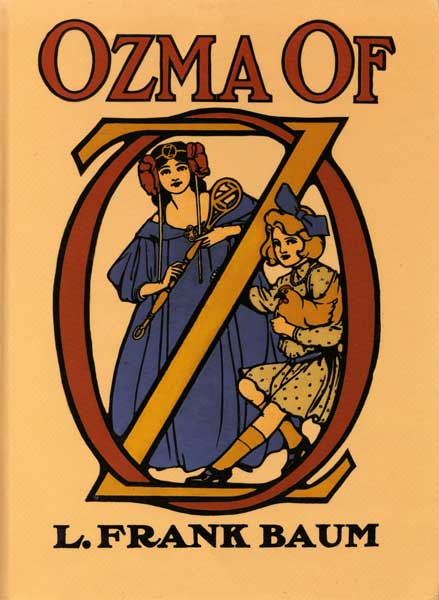
[Pg 1]
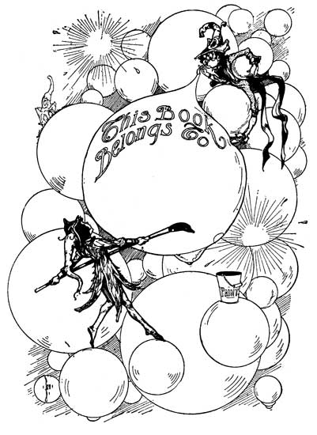
[Pg 2]
By L. FRANK BAUM
UNIFORM WITH OZMA OF OZ
The Land of Oz
John Dough and The Cherub
Each elaborately illustrated in colors
and black-and-white by
JOHN R. NEILL
[Pg 3]
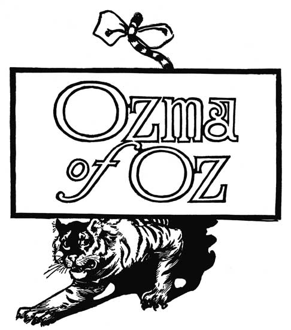
[Pg 4]
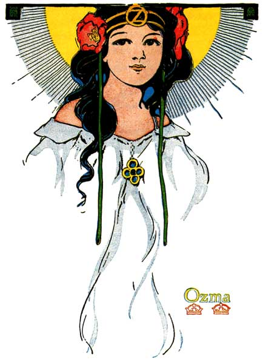
[Pg 5]
OZMA OF OZ
A Record of Her Adventures with Dorothy Gale of
Kansas, the Yellow Hen, the Scarecrow, the Tin
Woodman, Tiktok, the Cowardly Lion and
the Hungry Tiger; Besides Other Good
People too Numerous to Mention
Faithfully Recorded Herein
BY
L. FRANK BAUM
THE AUTHOR OF THE WIZARD OF OZ,
THE LAND OF OZ, ETC.
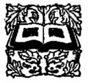
ILLUSTRATED BY
JOHN R. NEILL
CHICAGO:
THE REILLY & BRITTON CO.
PUBLISHERS
[Pg 6]
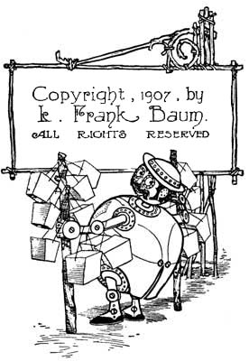
Copyright, 1907, by L. Frank Baum.
ALL RIGHTS RESERVED
[Pg 7]
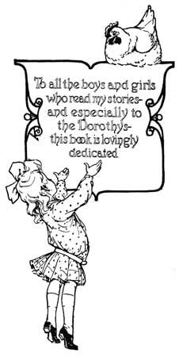
To all the boys and girls
who read my stories—and
especially to the Dorothys—this book
is lovingly dedicated.
[Pg 8]
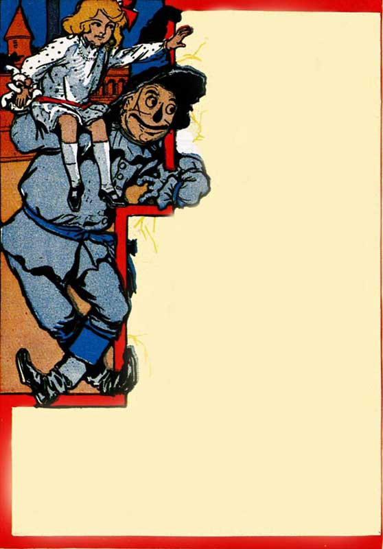
List
of
Chapters
I. The Girl in the Chicken Coop 13
II. The Yellow Hen 24
III. Letters in the Sand 37
IV. Tiktok, the Machine Man 49
V. Dorothy Opens the Dinner Pail 64
VI. The Heads of Langwidere 76
VII. Ozma of Oz to the Rescue 101
VIII. The Hungry Tiger 117
IX. The Royal Family of Ev 128
X. The Giant with the Hammer 141
XI. The Nome King 156
[Pg 9]
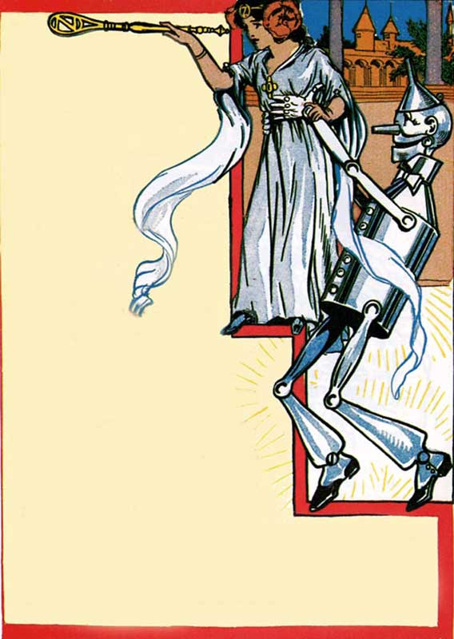
XII. The Eleven Guesses 175
XIII. The Nome King Laughs 182
XIV. Dorothy Tries to be Brave 191
XV. Billina Frightens the Nome King 205
XVI. Purple, Green and Gold 216
XVII. The Scarecrow Wins the Fight 226
XVIII. The Fate of the Tin Woodman 235
XIX. The King of Ev 246
XX. The Emerald City 254
XXI. Dorothy's Magic Belt 263
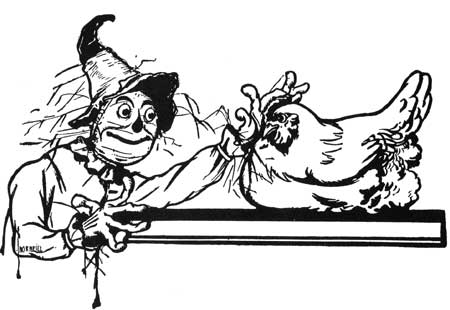
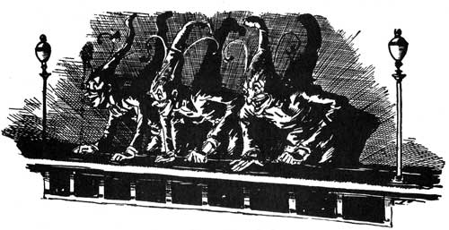
Author's Note
My friends the children are responsible for this new "Oz Book," as they
were for the last one, which was called The Land of Oz. Their sweet
little letters plead to know "more about Dorothy"; and they ask: "What
became of the Cowardly Lion?" and "What did Ozma do
afterward?"—meaning, of course, after she became the Ruler of Oz. And
some of them suggest plots to me, saying: "Please have Dorothy go to the
Land of Oz again"; or, "Why don't you make Ozma and Dorothy meet, and
have a good time together?" Indeed, could I do all that my little
friends ask, I would be obliged to write dozens of books to satisfy
their demands. And I wish I could, for I enjoy writing these stories
just as much as the children say they enjoy reading them.
Well, here is "more about Dorothy," and about our old friends the
Scarecrow and the Tin Woodman, and about the Cowardly Lion, and Ozma,
and all the rest of them; and here, likewise, is a good deal about some
new folks that are queer and unusual. One little friend, who read this
story before it was printed, said to me: "Billina is real Ozzy, Mr.
Baum, and so are Tiktok and the Hungry Tiger."
If this judgment is unbiased and correct, and the little folks find this
new story "real Ozzy," I shall be very glad indeed that I wrote it. But
perhaps I shall get some more of those very welcome letters from my
readers, telling me just how they like "Ozma of Oz." I hope so, anyway.
L. FRANK BAUM.
MACATAWA, 1907.
[Pg 12]
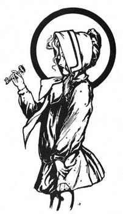
[Pg 13]
The Girl in the Chicken Coop

All this mad dashing and splashing of the waters of the big ocean, which
the mischievous[Pg 14] wind caused without any good reason whatever, resulted
in a terrible storm, and a storm on the ocean is liable to cut many
queer pranks and do a lot of damage.
At the time the wind began to blow, a ship was sailing far out upon the
waters. When the waves began to tumble and toss and to grow bigger and
bigger the ship rolled up and down, and tipped sidewise—first one way
and then the other—and was jostled around so roughly that even the
sailor-men had to hold fast to the ropes and railings to keep themselves
from being swept away by the wind or pitched headlong into the sea.
And the clouds were so thick in the sky that the sunlight couldn't get
through them; so that the day grew dark as night, which added to the
terrors of the storm.
The Captain of the ship was not afraid, because he had seen storms
before, and had sailed his ship through them in safety; but he knew that
his passengers would be in danger if they tried to stay on deck, so he
put them all into the cabin and told them to stay there until after the
storm was over, and to keep brave hearts and not be scared, and all
would be well with them.
Now, among these passengers was a little Kansas[Pg 15] girl named Dorothy
Gale, who was going with her Uncle Henry to Australia, to visit some
relatives they had never before seen. Uncle Henry, you must know, was
not very well, because he had been working so hard on his Kansas farm
that his health had given way and left him weak and nervous. So he left
Aunt Em at home to watch after the hired men and to take care of the
farm, while he traveled far away to Australia to visit his cousins and
have a good rest.
Dorothy was eager to go with him on this journey, and Uncle Henry
thought she would be good company and help cheer him up; so he decided
to take her along. The little girl was quite an experienced traveller,
for she had once been carried by a cyclone as far away from home as the
marvelous Land of Oz, and she had met with a good many adventures in
that strange country before she managed to get back to Kansas again. So
she wasn't easily frightened, whatever happened, and when the wind began
to howl and whistle, and the waves began to tumble and toss, our little
girl didn't mind the uproar the least bit.
"Of course we'll have to stay in the cabin," she said to Uncle Henry and
the other passengers, "and keep as quiet as possible until the storm is
over.[Pg 16] For the Captain says if we go on deck we may be blown overboard."
No one wanted to risk such an accident as that, you may be sure; so all
the passengers stayed huddled up in the dark cabin, listening to the
shrieking of the storm and the creaking of the masts and rigging and
trying to keep from bumping into one another when the ship tipped
sidewise.
Dorothy had almost fallen asleep when she was aroused with a start to
find that Uncle Henry was missing. She couldn't imagine where he had
gone, and as he was not very strong she began to worry about him, and to
fear he might have been careless enough to go on deck. In that case he
would be in great danger unless he instantly came down again.
The fact was that Uncle Henry had gone to lie down in his little
sleeping-berth, but Dorothy did not know that. She only remembered that
Aunt Em had cautioned her to take good care of her uncle, so at once she
decided to go on deck and find him, in spite of the fact that the
tempest was now worse than ever, and the ship was plunging in a really
dreadful manner. Indeed, the little girl found it was as much as she
could do to mount the stairs to the deck, and as soon as she got there
the wind struck her so fiercely that it almost tore away the[Pg 18][Pg 17] skirts of
her dress. Yet Dorothy felt a sort of joyous excitement in defying the
storm, and while she held fast to the railing she peered around through
the gloom and thought she saw the dim form of a man clinging to a mast
not far away from her. This might be her uncle, so she called as loudly
as she could:
"Uncle Henry! Uncle Henry!"
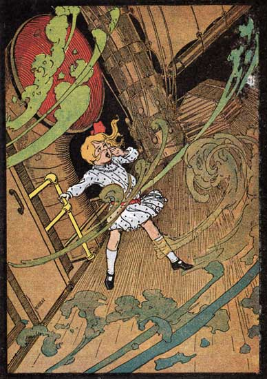
"UNCLE HENRY! UNCLE HENRY!" CALLED DOROTHY
But the wind screeched and howled so madly that she scarce heard her own
voice, and the man certainly failed to hear her, for he did not move.
Dorothy decided she must go to him; so she made a dash forward, during a
lull in the storm, to where a big square chicken-coop had been lashed to
the deck with ropes. She reached this place in safety, but no sooner had
she seized fast hold of the slats of the big box in which the chickens
were kept than the wind, as if enraged because the little girl dared to
resist its power, suddenly redoubled its fury. With a scream like that
of an angry giant it tore away the ropes that held the coop and lifted
it high into the air, with Dorothy still clinging to the slats. Around
and over it whirled, this way and that, and a few moments later the
chicken-coop dropped far away into the sea, where the big waves caught
it and slid it up-hill to a foaming crest and then down[Pg 19]hill into a deep
valley, as if it were nothing more than a plaything to keep them amused.
Dorothy had a good ducking, you may be sure, but she didn't loose her
presence of mind even for a second. She kept tight hold of the stout
slats and as soon as she could get the water out of her eyes she saw
that the wind had ripped the cover from the coop, and the poor chickens
were fluttering away in every direction, being blown by the wind until
they looked like feather dusters without handles. The bottom of the coop
was made of thick boards, so Dorothy found she was clinging to a sort of
raft, with sides of slats, which readily bore up her weight. After
coughing the water out of her throat and getting her breath again, she
managed to climb over the slats and stand upon the firm wooden bottom of
the coop, which supported her easily enough.
"Why, I've got a ship of my own!" she thought, more amused than
frightened at her sudden change of condition; and then, as the coop
climbed up to the top of a big wave, she looked eagerly around for the
ship from which she had been blown.
It was far, far away, by this time. Perhaps no one on board had yet
missed her, or knew of her strange adventure. Down into a valley
between[Pg 20] the waves the coop swept her, and when she climbed another
crest the ship looked like a toy boat, it was such a long way off. Soon
it had entirely disappeared in the gloom, and then Dorothy gave a sigh
of regret at parting with Uncle Henry and began to wonder what was going
to happen to her next.
Just now she was tossing on the bosom of a big ocean, with nothing to
keep her afloat but a miserable wooden hen-coop that had a plank bottom
and slatted sides, through which the water constantly splashed and
wetted her through to the skin! And there was nothing to eat when she
became hungry—as she was sure to do before long—and no fresh water to
drink and no dry clothes to put on.
"Well, I declare!" she exclaimed, with a laugh. "You're in a pretty fix,
Dorothy Gale, I can tell you! and I haven't the least idea how you're
going to get out of it!"
As if to add to her troubles the night was now creeping on, and the gray
clouds overhead changed to inky blackness. But the wind, as if satisfied
at last with its mischievous pranks, stopped blowing this ocean and
hurried away to another part of the world to blow something else; so
that the waves, not being joggled any more, began to quiet down and
behave themselves.[Pg 21]
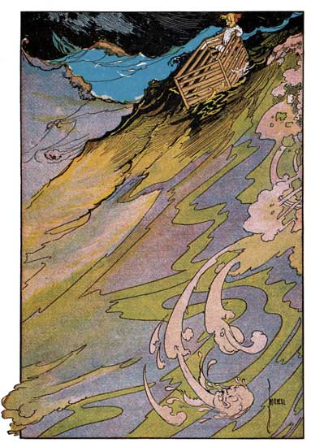
DOROTHY AFLOAT IN THE HEN-COOP
[Pg 22]
It was lucky for Dorothy, I think, that the storm subsided; otherwise,
brave though she was, I fear she might have perished. Many children, in
her place, would have wept and given way to despair; but because Dorothy
had encountered so many adventures and come safely through them it did
not occur to her at this time to be especially afraid. She was wet and
uncomfortable, it is true; but, after sighing that one sigh I told you
of, she managed to recall some of her customary cheerfulness and decided
to patiently await whatever her fate might be.
By and by the black clouds rolled away and showed a blue sky overhead,
with a silver moon shining sweetly in the middle of it and little stars
winking merrily at Dorothy when she looked their way. The coop did not
toss around any more, but rode the waves more gently—almost like a
cradle rocking—so that the floor upon which Dorothy stood was no longer
swept by water coming through the slats. Seeing this, and being quite
exhausted by the excitement of the past few hours, the little girl
decided that sleep would be the best thing to restore her strength and
the easiest way in which she could pass the time. The floor was damp and
she was herself wringing wet, but fortunately this was a warm climate
and she did not feel at all cold.[Pg 23] So she sat down in a corner of the
coop, leaned her back against the slats, nodded at the friendly stars
before she closed her eyes, and was asleep in half a minute.
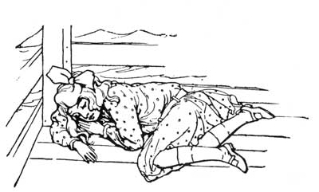
[Pg 24]
The Yellow Hen
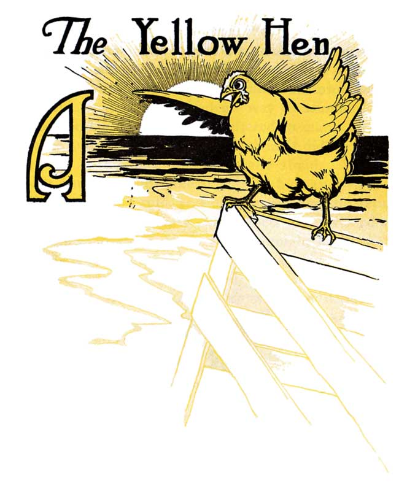
A strange noise awoke Dorothy, who opened her eyes to find that day had
dawned and the sun was shining brightly in a clear sky. She had been
dreaming that she was back in Kansas again, and playing in the old
barn-yard with the calves and pigs and chickens all around her; and at
first, as she rubbed the sleep from her eyes, she really imagined she
was there.
"Kut-kut-kut, ka-daw-kut! Kut-kut-kut, ka-daw-kut!"
Ah; here again was the strange noise that had awakened her. Surely it
was a hen cackling![Pg 25] But her wide-open eyes first saw, through the slats
of the coop, the blue waves of the ocean, now calm and placid, and her
thoughts flew back to the past night, so full of danger and discomfort.
Also she began to remember that she was a waif of the storm, adrift upon
a treacherous and unknown sea.
"Kut-kut-kut, ka-daw-w-w—kut!"
"What's that?" cried Dorothy, starting to her feet.
"Why, I've just laid an egg, that's all," replied a small, but sharp and
distinct voice, and looking around her the little girl discovered a
yellow hen squatting in the opposite corner of the coop.
"Dear me!" she exclaimed, in surprise; "have you been here all night,
too?"
"Of course," answered the hen, fluttering her wings and yawning. "When
the coop blew away from the ship I clung fast to this corner, with claws
and beak, for I knew if I fell into the water I'd surely be drowned.
Indeed, I nearly drowned, as it was, with all that water washing over
me. I never was so wet before in my life!"
"Yes," agreed Dorothy, "it was pretty wet, for a time, I know. But do
you feel comfor'ble now?"
"Not very. The sun has helped to dry my feathers, as it has your dress,
and I feel better since I laid my morning egg. But what's to become of[Pg 26]
us, I should like to know, afloat on this big pond?"
"I'd like to know that, too," said Dorothy. "But, tell me; how does it
happen that you are able to talk? I thought hens could only cluck and
cackle."
"Why, as for that," answered the yellow hen thoughtfully, "I've clucked
and cackled all my life, and never spoken a word before this morning,
that I can remember. But when you asked a question, a minute ago, it
seemed the most natural thing in the world to answer you. So I spoke,
and I seem to keep on speaking, just as you and other human beings do.
Strange, isn't it?"
"Very," replied Dorothy. "If we were in the Land of Oz, I wouldn't think
it so queer, because many of the animals can talk in that fairy country.
But out here in the ocean must be a good long way from Oz."
"How is my grammar?" asked the yellow hen, anxiously. "Do I speak quite
properly, in your judgment?"
"Yes," said Dorothy, "you do very well, for a beginner."
"I'm glad to know that," continued the yellow hen, in a confidential
tone; "because, if one is going to talk, it's best to talk correctly.
The red rooster has often said that my cluck and my cackle were[Pg 27] quite
perfect; and now it's a comfort to know I am talking properly."
"I'm beginning to get hungry," remarked Dorothy. "It's breakfast time;
but there's no breakfast."
"You may have my egg," said the yellow hen. "I don't care for it, you
know."
"Don't you want to hatch it?" asked the little girl, in surprise.
"No, indeed; I never care to hatch eggs unless I've a nice snug nest, in
some quiet place, with a baker's dozen of eggs under me. That's
thirteen, you know, and it's a lucky number for hens. So you may as well
eat this egg."
"Oh, I couldn't poss'bly eat it, unless it was cooked," exclaimed
Dorothy. "But I'm much obliged for your kindness, just the same."
"Don't mention it, my dear," answered the hen, calmly, and began pruning
her feathers.
For a moment Dorothy stood looking out over the wide sea. She was still
thinking of the egg, though; so presently she asked:
"Why do you lay eggs, when you don't expect to hatch them?"
"It's a habit I have," replied the yellow hen. "It has always been my
pride to lay a fresh egg every[Pg 28] morning, except when I'm moulting. I
never feel like having my morning cackle till the egg is properly laid,
and without the chance to cackle I would not be happy."
"It's strange," said the girl, reflectively; "But as I'm not a hen I
can't be 'spected to understand that."
"Certainly not, my dear."
Then Dorothy fell silent again. The yellow hen was some company, and a
bit of comfort, too; but it was dreadfully lonely out on the big ocean,
nevertheless.
After a time the hen flew up and perched upon the topmost slat of the
coop, which was a little above Dorothy's head when she was sitting upon
the bottom, as she had been doing for some moments past.
"Why, we are not far from land!" exclaimed the hen.
"Where? Where is it?" cried Dorothy, jumping up in great excitement.
"Over there a little way," answered the hen, nodding her head in a
certain direction. "We seem to be drifting toward it, so that before
noon we ought to find ourselves upon dry land again."
"I shall like that!" said Dorothy, with a little sigh, for her feet and
legs were still wetted now and[Pg 30][Pg 29] then by the sea-water that came through
the open slats.
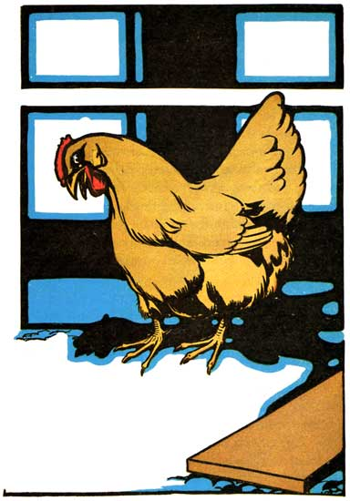
THE YELLOW HEN
"So shall I," answered her companion. "There is nothing in the world so
miserable as a wet hen."
The land, which they seemed to be rapidly approaching, since it grew
more distinct every minute, was quite beautiful as viewed by the little
girl in the floating hen-coop. Next to the water was a broad beach of
white sand and gravel, and farther back were several rocky hills, while
beyond these appeared a strip of green trees that marked the edge of a
forest. But there were no houses to be seen, nor any sign of people who
might inhabit this unknown land.
"I hope we shall find something to eat," said Dorothy, looking eagerly
at the pretty beach toward which they drifted. "It's long past breakfast
time, now."
"I'm a trifle hungry, myself," declared the yellow hen.
"Why don't you eat the egg?" asked the child. "You don't need to have
your food cooked, as I do."
"Do you take me for a cannibal?" cried the hen, indignantly. "I do not
know what I have said or done that leads you to insult me!"
"I beg your pardon, I'm sure Mrs.—Mrs.—by the[Pg 31] way, may I inquire your
name, ma'am?" asked the little girl.
"My name is Bill," said the yellow hen, somewhat gruffly.
"Bill! Why, that's a boy's name."
"What difference does that make?"
"You're a lady hen, aren't you?"
"Of course. But when I was first hatched out no one could tell whether I
was going to be a hen or a rooster; so the little boy at the farm where
I was born called me Bill, and made a pet of me because I was the only
yellow chicken in the whole brood. When I grew up, and he found that I
didn't crow and fight, as all the roosters do, he did not think to
change my name, and every creature in the barn-yard, as well as the
people in the house, knew me as 'Bill.' So Bill I've always been called,
and Bill is my name."
"But it's all wrong, you know," declared Dorothy, earnestly; "and, if
you don't mind, I shall call you 'Billina.' Putting the 'eena' on the
end makes it a girl's name, you see."
"Oh, I don't mind it in the least," returned the yellow hen. "It doesn't
matter at all what you call me, so long as I know the name means me."
"Very well, Billina. My name is Dorothy Gale[Pg 32]—just Dorothy to my
friends and Miss Gale to strangers. You may call me Dorothy, if you
like. We're getting very near the shore. Do you suppose it is too deep
for me to wade the rest of the way?"
"Wait a few minutes longer. The sunshine is warm and pleasant, and we
are in no hurry."
"But my feet are all wet and soggy," said the girl. "My dress is dry
enough, but I won't feel real comfor'ble till I get my feet dried."
She waited; however, as the hen advised, and before long the big wooden
coop grated gently on the sandy beach and the dangerous voyage was over.
It did not take the castaways long to reach the shore, you may be sure.
The yellow hen flew to the sands at once, but Dorothy had to climb over
the high slats. Still, for a country girl, that was not much of a feat,
and as soon as she was safe ashore Dorothy drew off her wet shoes and
stockings and spread them upon the sun-warmed beach to dry.
Then she sat down and watched Billina, who was pick-pecking away with
her sharp bill in the sand and gravel, which she scratched up and turned
over with her strong claws.
"What are you doing?" asked Dorothy.
"Getting my breakfast, of course," murmured the hen, busily pecking
away.[Pg 33]
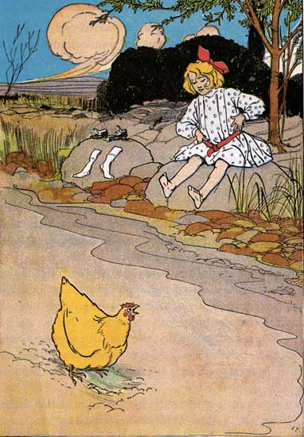
"HOW DREADFUL!" EXCLAIMED DOROTHY
[Pg 34]
"What do you find?" inquired the girl, curiously.
"Oh, some fat red ants, and some sand-bugs, and once in a while a tiny
crab. They are very sweet and nice, I assure you."
"How dreadful!" exclaimed Dorothy, in a shocked voice.
"What is dreadful?" asked the hen, lifting her head to gaze with one
bright eye at her companion.
"Why, eating live things, and horrid bugs, and crawly ants. You ought to
be 'shamed of yourself!"
"Goodness me!" returned the hen, in a puzzled tone; "how queer you are,
Dorothy! Live things are much fresher and more wholesome than dead ones,
and you humans eat all sorts of dead creatures."
"We don't!" said Dorothy.
"You do, indeed," answered Billina. "You eat lambs and sheep and cows
and pigs and even chickens."
"But we cook 'em," said Dorothy, triumphantly.
"What difference does that make?"
"A good deal," said the girl, in a graver tone. "I can't just 'splain
the diff'rence, but it's there. And, anyhow, we never eat such dreadful
things as bugs."
"But you eat the chickens that eat the bugs," retorted the yellow hen,
with an odd cackle. "So you are just as bad as we chickens are."[Pg 35]
This made Dorothy thoughtful. What Billina said was true enough, and it
almost took away her appetite for breakfast. As for the yellow hen, she
continued to peck away at the sand busily, and seemed quite contented
with her bill-of-fare.
Finally, down near the water's edge, Billina stuck her bill deep into
the sand, and then drew back and shivered.
"Ow!" she cried. "I struck metal, that time, and it nearly broke my
beak."
"It prob'bly was a rock," said Dorothy, carelessly.
"Nonsense. I know a rock from metal, I guess," said the hen. "There's a
different feel to it."
"But there couldn't be any metal on this wild, deserted seashore,"
persisted the girl. "Where's the place? I'll dig it up, and prove to you
I'm right."
Billina showed her the place where she had "stubbed her bill," as she
expressed it, and Dorothy dug away the sand until she felt something
hard. Then, thrusting in her hand, she pulled the thing out, and
discovered it to be a large sized golden key—rather old, but still
bright and of perfect shape.
"What did I tell you?" cried the hen, with a cackle of triumph. "Can I
tell metal when I bump into it, or is the thing a rock?"
"It's metal, sure enough," answered the child, gaz[Pg 36]ing thoughtfully at
the curious thing she had found. "I think it is pure gold, and it must
have lain hidden in the sand for a long time. How do you suppose it came
there, Billina? And what do you suppose this mysterious key unlocks?"
"I can't say," replied the hen. "You ought to know more about locks and
keys than I do."
Dorothy glanced around. There was no sign of any house in that part of
the country, and she reasoned that every key must fit a lock and every
lock must have a purpose. Perhaps the key had been lost by somebody who
lived far away, but had wandered on this very shore.
Musing on these things the girl put the key in the pocket of her dress
and then slowly drew on her shoes and stockings, which the sun had fully
dried.
"I b'lieve, Billina," she said, "I'll have a look 'round, and see if I
can find some breakfast."
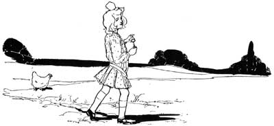
[Pg 37]
Letters in the Sand
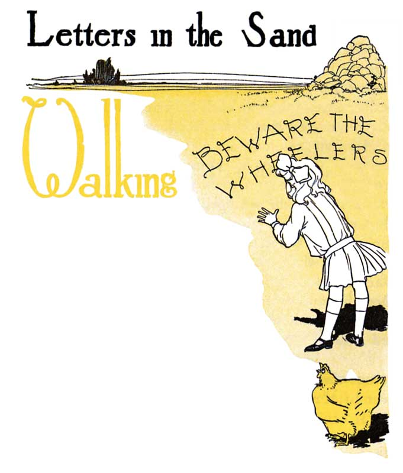
Walking a little way back from the water's edge, toward the grove of
trees, Dorothy came to a flat stretch of white sand that seemed to have
queer signs marked upon its surface, just as one would write upon sand
with a stick.
"What does it say?" she asked the yellow hen, who trotted along beside
her in a rather dignified fashion.
"How should I know?" returned the hen. "I cannot read."
"Oh! Can't you?"
"Certainly not; I've never been to school, you know."[Pg 38]
"Well, I have," admitted Dorothy; "but the letters are big and far
apart, and it's hard to spell out the words."
But she looked at each letter carefully, and finally discovered that
these words were written in the sand:
"BEWARE THE WHEELERS!"
"That's rather strange," declared the hen, when Dorothy had read aloud
the words. "What do you suppose the Wheelers are?"
"Folks that wheel, I guess. They must have wheelbarrows, or baby-cabs or
hand-carts," said Dorothy.
"Perhaps they're automobiles," suggested the yellow hen. "There is no
need to beware of baby-cabs and wheelbarrows; but automobiles are
dangerous things. Several of my friends have been run over by them."
"It can't be auto'biles," replied the girl, "for this is a new, wild
country, without even trolley-cars or tel'phones. The people here havn't
been discovered yet, I'm sure; that is, if there are any people. So I
don't b'lieve there can be any auto'biles, Billina."
"Perhaps not," admitted the yellow hen. "Where are you going now?"[Pg 39]
"Over to those trees, to see if I can find some fruit or nuts," answered
Dorothy.
She tramped across the sand, skirting the foot of one of the little
rocky hills that stood near, and soon reached the edge of the forest.
At first she was greatly disappointed, because the nearer trees were all
punita, or cotton-wood or eucalyptus, and bore no fruit or nuts at all.
But, bye and bye, when she was almost in despair, the little girl came
upon two trees that promised to furnish her with plenty of food.
One was quite full of square paper boxes, which grew in clusters on all
the limbs, and upon the biggest and ripest boxes the word "Lunch" could
be read, in neat raised letters. This tree seemed to bear all the year
around, for there were lunch-box blossoms on some of the branches, and
on others tiny little lunch-boxes that were as yet quite green, and
evidently not fit to eat until they had grown bigger.
The leaves of this tree were all paper napkins, and it presented a very
pleasing appearance to the hungry little girl.
But the tree next to the lunch-box tree was even more wonderful, for it
bore quantities of tin dinner-pails, which were so full and heavy that
the stout[Pg 40] branches bent underneath their weight. Some were small and
dark-brown in color; those larger were of a dull tin color; but the
really ripe ones were pails of bright tin that shone and glistened
beautifully in the rays of sunshine that touched them.
Dorothy was delighted, and even the yellow hen acknowledged that she was
surprised.
The little girl stood on tip-toe and picked one of the nicest and
biggest lunch-boxes, and then she sat down upon the ground and eagerly
opened it. Inside she found, nicely wrapped in white papers, a ham
sandwich, a piece of sponge-cake, a pickle, a slice of new cheese and an
apple. Each thing had a separate stem, and so had to be picked off the
side of the box; but Dorothy found them all to be delicious, and she ate
every bit of luncheon in the box before she had finished.
"A lunch isn't zactly breakfast," she said to Billina, who sat beside
her curiously watching. "But when one is hungry one can eat even supper
in the morning, and not complain."
"I hope your lunch-box was perfectly ripe," observed the yellow hen, in a
anxious tone. "So much sickness is caused by eating green things."
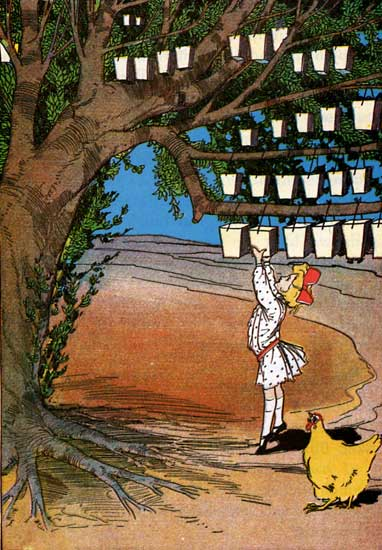
THE LITTLE GIRL PICKED ONE OF THE LUNCH-BOXES
"Oh, I'm sure it was ripe," declared Dorothy, "all, that is, 'cept the
pickle, and a pickle just has[Pg 42][Pg 41] to be green, Billina. But everything
tasted perfectly splendid, and I'd rather have it than a church picnic.
And now I think I'll pick a dinner-pail, to have when I get hungry
again, and then we'll start out and 'splore the country, and see where
we are."
"Havn't you any idea what country this is?" inquired Billina.
"None at all. But listen: I'm quite sure it's a fairy country, or such
things as lunch-boxes and dinner-pails wouldn't be growing upon trees.
Besides, Billina, being a hen, you wouldn't be able to talk in any
civ'lized country, like Kansas, where no fairies live at all."
"Perhaps we're in the Land of Oz," said the hen, thoughtfully.
"No, that can't be," answered the little girl; "because I've been to the
Land of Oz, and it's all surrounded by a horrid desert that no one can
cross."
"Then how did you get away from there again?" asked Billina.
"I had a pair of silver shoes, that carried me through the air; but I
lost them," said Dorothy.
"Ah, indeed," remarked the yellow hen, in a tone of unbelief.
"Anyhow," resumed the girl, "there is no sea[Pg 43]shore near the Land of Oz,
so this must surely be some other fairy country."
While she was speaking she selected a bright and pretty dinner-pail
that seemed to have a stout handle, and picked it from its branch. Then,
accompanied by the yellow hen, she walked out of the shadow of the trees
toward the sea-shore.
They were part way across the sands when Billina suddenly cried, in a
voice of terror:
"What's that?"
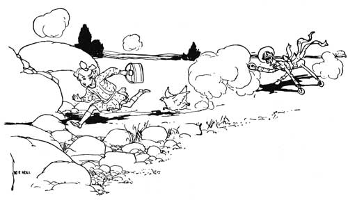
[Pg 44]
Dorothy turned quickly around, and saw coming out of a path that led
from between the trees the most peculiar person her eyes had ever
beheld.
It had the form of a man, except that it walked, or rather rolled, upon
all fours, and its legs were the same length as its arms, giving them
the appearance of the four legs of a beast. Yet it was no beast that
Dorothy had discovered, for the person was clothed most gorgeously in
embroidered garments of many colors, and wore a straw hat perched
jauntily upon the side of its head. But it differed from human beings in
this respect, that instead of hands and feet there grew at the end of
its arms and legs round wheels, and by means of these wheels it rolled
very swiftly over the level ground. Afterward Dorothy found that these
odd wheels were of the same hard substance that our finger-nails and
toe-nails are composed of, and she also learned that creatures of this
strange race were born in this queer fashion. But when our little girl
first caught sight of the first individual of a race that was destined
to cause her a lot of trouble, she had an idea that the
brilliantly-clothed personage was on roller-skates, which were attached
to his hands as well as to his feet.
"Run!" screamed the yellow hen, fluttering away in great fright. "It's a
Wheeler!"[Pg 45]
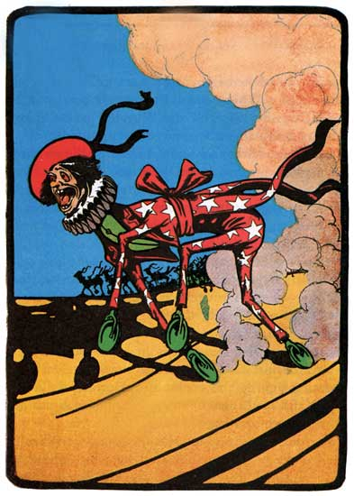
"IT'S A WHEELER!"
[Pg 46]
"A Wheeler?" exclaimed Dorothy. "What can that be?"
"Don't you remember the warning in the sand: 'Beware the Wheelers'? Run,
I tell you—run!"
So Dorothy ran, and the Wheeler gave a sharp, wild cry and came after
her in full chase.
Looking over her shoulder as she ran, the girl now saw a great
procession of Wheelers emerging from the forest—dozens and dozens of
them—all clad in splendid, tight-fitting garments and all rolling
swiftly toward her and uttering their wild, strange cries.
"They're sure to catch us!" panted the girl, who was still carrying the
heavy dinner-pail she had picked. "I can't run much farther, Billina."
"Climb up this hill,—quick!" said the hen; and Dorothy found she was
very near to the heap of loose and jagged rocks they had passed on their
way to the forest. The yellow hen was even now fluttering among the
rocks, and Dorothy followed as best she could, half climbing and half
tumbling up the rough and rugged steep.
She was none too soon, for the foremost Wheeler reached the hill a
moment after her; but while the girl scrambled up the rocks the creature
stopped short with howls of rage and disappointment.[Pg 47]
Dorothy now heard the yellow hen laughing, in her cackling, henny way.
"Don't hurry, my dear," cried Billina. "They can't follow us among these
rocks, so we're safe enough now."
Dorothy stopped at once and sat down upon a broad boulder, for she was
all out of breath.
The rest of the Wheelers had now reached the foot of the hill, but it
was evident that their wheels would not roll upon the rough and jagged
rocks, and therefore they were helpless to follow Dorothy and the hen to
where they had taken refuge. But they circled all around the little
hill, so the child and Billina were fast prisoners and could not come
down without being captured.
Then the creatures shook their front wheels at Dorothy in a threatening
manner, and it seemed they were able to speak as well as to make their
dreadful outcries, for several of them shouted:
"We'll get you in time, never fear! And when we do get you, we'll tear
you into little bits!"
"Why are you so cruel to me?" asked Dorothy. "I'm a stranger in your
country, and have done you no harm."
"No harm!" cried one who seemed to be their leader. "Did you not pick
our lunch-boxes and[Pg 48] dinner-pails? Have you not a stolen dinner-pail
still in your hand?"
"I only picked one of each," she answered. "I was hungry, and I didn't
know the trees were yours."
"That is no excuse," retorted the leader, who was clothed in a most
gorgeous suit. "It is the law here that whoever picks a dinner-pail
without our permission must die immediately."
"Don't you believe him," said Billina. "I'm sure the trees do not belong
to these awful creatures. They are fit for any mischief, and it's my
opinion they would try to kill us just the same if you hadn't picked a
dinner-pail."
"I think so, too," agreed Dorothy. "But what shall we do now?"
"Stay where we are," advised the yellow hen. "We are safe from the
Wheelers until we starve to death, anyhow; and before that time comes a
good many things can happen."
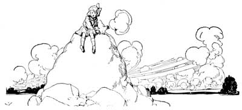
[Pg 49]
Tiktok the Machine Man
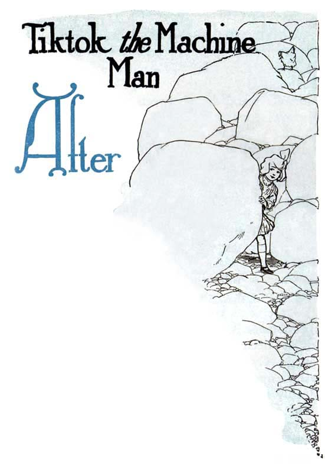
After an hour or so most of the band of Wheelers rolled back into the
forest, leaving only three of their number to guard the hill. These
curled themselves up like big dogs and pretended to go to sleep on the
sands; but neither Dorothy nor Billina were fooled by this trick, so
they remained in security among the rocks and paid no attention to their
cunning enemies.
Finally the hen, fluttering over the mound, exclaimed: "Why, here's a
path!"
So Dorothy at once clambered to where Billina sat, and there, sure
enough, was a smooth path[Pg 50] cut between the rocks. It seemed to wind
around the mound from top to bottom, like a cork-screw, twisting here
and there between the rough boulders but always remaining level and easy
to walk upon.
Indeed, Dorothy wondered at first why the Wheelers did not roll up this
path; but when she followed it to the foot of the mound she found that
several big pieces of rock had been placed directly across the end of
the way, thus preventing any one outside from seeing it and also
preventing the Wheelers from using it to climb up the mound.
Then Dorothy walked back up the path, and followed it until she came to
the very top of the hill, where a solitary round rock stood that was
bigger than any of the others surrounding it. The path came to an end
just beside this great rock, and for a moment it puzzled the girl to
know why the path had been made at all. But the hen, who had been
gravely following her around and was now perched upon a point of rock
behind Dorothy, suddenly remarked:
"It looks something like a door, doesn't it?"
"What looks like a door?" enquired the child.
"Why, that crack in the rock, just facing you," replied Billina, whose
little round eyes were very sharp and seemed to see everything. "It runs
up[Pg 51] one side and down the other, and across the top and the bottom."
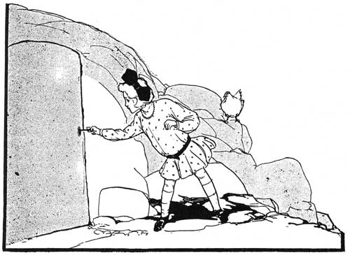
"What does?"
"Why, the crack. So I think it must be a door of rock, although I do not
see any hinges."
"Oh, yes," said Dorothy, now observing for the first time the crack in
the rock. "And isn't this a key-hole, Billina?" pointing to a round,
deep hole at one side of the door.
"Of course. If we only had the key, now, we[Pg 52] could unlock it and see
what is there," replied the yellow hen. "May be it's a treasure chamber
full of diamonds and rubies, or heaps of shining gold, or——"
"That reminds me," said Dorothy, "of the golden key I picked up on the
shore. Do you think that it would fit this key-hole, Billina?"
"Try it and see," suggested the hen.
So Dorothy searched in the pocket of her dress and found the golden key.
And when she had put it into the hole of the rock, and turned it, a
sudden sharp snap was heard; then, with a solemn creak that made the
shivers run down the child's back, the face of the rock fell outward,
like a door on hinges, and revealed a small dark chamber just inside.
"Good gracious!" cried Dorothy, shrinking back as far as the narrow path
would let her.
For, standing within the narrow chamber of rock, was the form of a
man—or, at least, it seemed like a man, in the dim light. He was only
about as tall as Dorothy herself, and his body was round as a ball and
made out of burnished copper. Also his head and limbs were copper, and
these were jointed or hinged to his body in a peculiar way, with metal
caps over the joints, like the armor worn by knights in days of old. He
stood perfectly still, and where[Pg 54][Pg 53] the light struck upon his form it
glittered as if made of pure gold.
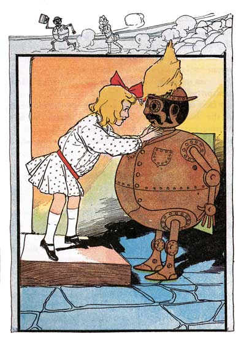
"THIS COPPER MAN IS NOT ALIVE AT ALL"
"Don't be frightened," called Billina, from her perch. "It isn't alive."
"I see it isn't," replied the girl, drawing a long breath.
"It is only made out of copper, like the old kettle in the barn-yard at
home," continued the hen, turning her head first to one side and then to
the other, so that both her little round eyes could examine the object.
"Once," said Dorothy, "I knew a man made out of tin, who was a woodman
named Nick Chopper. But he was as alive as we are, 'cause he was born a
real man, and got his tin body a little at a time—first a leg and then
a finger and then an ear—for the reason that he had so many accidents
with his axe, and cut himself up in a very careless manner."
"Oh," said the hen, with a sniff, as if she did not believe the story.
"But this copper man," continued Dorothy, looking at it with big eyes,
"is not alive at all, and I wonder what it was made for, and why it was
locked up in this queer place."
"That is a mystery," remarked the hen, twisting her head to arrange her
wing-feathers with her bill.[Pg 55]
Dorothy stepped inside the little room to get a back view of the copper
man, and in this way discovered a printed card that hung between his
shoulders, it being suspended from a small copper peg at the back of his
neck. She unfastened this card and returned to the path, where the light
was better, and sat herself down upon a slab of rock to read the
printing.
"What does it say?" asked the hen, curiously.
Dorothy read the card aloud, spelling out the big words with some
difficulty; and this is what she read:
SMITH & TINKER'S
Patent Double-Action, Extra-Responsive,
Thought-Creating, Perfect-Talking
MECHANICAL MAN
Fitted with our Special Clock-Work Attachment.
Thinks, Speaks, Acts, and Does Everything but Live.
Manufactured only at our Works at Evna, Land of Ev.
All infringements will be promptly Prosecuted according to Law.
"How queer!" said the yellow hen. "Do you think that is all true, my
dear?"[Pg 56]
"I don't know," answered Dorothy, who had more to read. "Listen to this,
Billina:"
DIRECTIONS FOR USING:
For THINKING:—Wind the Clock-work Man under his
left arm, (marked No. 1.)
For SPEAKING:—Wind the Clock-work Man under his
right arm, (marked No. 2.)
For WALKING and ACTION:—Wind Clock-work in the
middle of his back, (marked No. 3.)
N. B.—This Mechanism is guaranteed to work perfectly for a thousand years.
"Well, I declare!" gasped the yellow hen, in amazement; "if the copper
man can do half of these things he is a very wonderful machine. But I
suppose it is all humbug, like so many other patented articles."
"We might wind him up," suggested Dorothy, "and see what he'll do."
"Where is the key to the clock-work?" asked Billina.
"Hanging on the peg where I found the card."
"Then," said the hen, "let us try him, and find out if he will go. He is
warranted for a thousand years, it seems; but we do not know how long he
has been standing inside this rock."
Dorothy had already taken the clock key from the peg.[Pg 57]
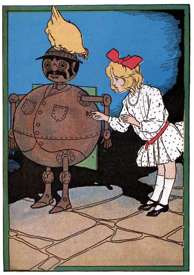
DOROTHY WOUND UP NUMBER ONE
[Pg 58]
"Which shall I wind up first?" she asked, looking again at the
directions on the card.
"Number One, I should think," returned Billina. "That makes him think,
doesn't it?"
"Yes," said Dorothy, and wound up Number One, under the left arm.
"He doesn't seem any different," remarked the hen, critically.
"Why, of course not; he is only thinking, now," said Dorothy.
"I wonder what he is thinking about."
"I'll wind up his talk, and then perhaps he can tell us," said the girl.
So she wound up Number Two, and immediately the clock-work man said,
without moving any part of his body except his lips:
"Good morn-ing, lit-tle girl. Good morn-ing, Mrs. Hen."
The words sounded a little hoarse and creakey, and they were uttered all
in the same tone, without any change of expression whatever; but both
Dorothy and Billina understood them perfectly.
"Good morning, sir," they answered, politely.
"Thank you for res-cu-ing me," continued the machine, in the same
monotonous voice, which[Pg 59] seemed to be worked by a bellows inside of him,
like the little toy lambs and cats the children squeeze so that they
will make a noise.
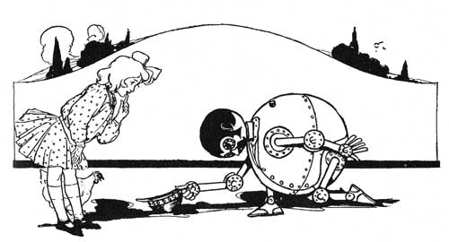
"Don't mention it," answered Dorothy. And then, being very curious, she
asked: "How did you come to be locked up in this place?"
"It is a long sto-ry," replied the copper man; "but I will tell it to
you brief-ly. I was pur-chased from Smith & Tin-ker, my
man-u-fac-tur-ers, by a cru-el King of Ev, named Ev-ol-do, who used to[Pg 60]
beat all his serv-ants un-til they died. How-ev-er, he was not a-ble to
kill me, be-cause I was not a-live, and one must first live in or-der to
die. So that all his beat-ing did me no harm, and mere-ly kept my
cop-per bod-y well pol-ished.
"This cru-el king had a love-ly wife and ten beau-ti-ful chil-dren—five
boys and five girls—but in a fit of an-ger he sold them all to the Nome
King, who by means of his mag-ic arts changed them all in-to oth-er
forms and put them in his un-der-ground pal-ace to or-na-ment the rooms.
"Af-ter-ward the King of Ev re-gret-ted his wick-ed ac-tion, and tried
to get his wife and chil-dren a-way from the Nome King, but with-out
a-vail. So, in de-spair, he locked me up in this rock, threw the key
in-to the o-cean, and then jumped in af-ter it and was drowned."
"How very dreadful!" exclaimed Dorothy.
"It is, in-deed," said the machine. "When I found my-self im-pris-oned I
shout-ed for help un-til my voice ran down; and then I walked back and
forth in this lit-tle room un-til my ac-tion ran down; and then I stood
still and thought un-til my thoughts ran down. Af-ter that I re-mem-ber
noth-ing un-til you wound me up a-gain."
"It's a very wonderful story," said Dorothy, "and[Pg 62][Pg 61] proves that the Land
of Ev is really a fairy land, as I thought it was."
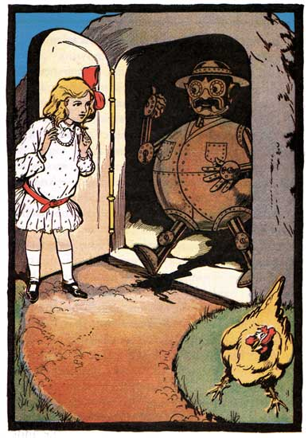
THE COPPER MAN WALKED OUT OF THE ROCKY CAVERN
"Of course it is," answered the copper man. "I do not sup-pose such a
per-fect ma-chine as I am could be made in an-y place but a fair-y
land."
"I've never seen one in Kansas," said Dorothy.
"But where did you get the key to un-lock this door?" asked the
clock-work voice.
"I found it on the shore, where it was prob'ly washed up by the waves,"
she answered. "And now, sir, if you don't mind, I'll wind up your
action."
"That will please me ve-ry much," said the machine.
So she wound up Number Three, and at once the copper man in a somewhat
stiff and jerky fashion walked out of the rocky cavern, took off his
copper hat and bowed politely, and then kneeled before Dorothy. Said he:
"From this time forth I am your o-be-di-ent ser-vant. What-ev-er you
com-mand, that I will do will-ing-ly—if you keep me wound up."
"What is your name?" she asked.
"Tik-tok," he replied. "My for-mer mas-ter gave me that name be-cause my
clock-work al-ways ticks when it is wound up."
"I can hear it now," said the yellow hen.
"So can I," said Dorothy. And then she added,[Pg 63] with some anxiety: "You
don't strike, do you?"
"No," answered Tiktok; "and there is no a-larm con-nec-ted with my
ma-chin-er-y. I can tell the time, though, by speak-ing, and as I nev-er
sleep I can wak-en you at an-y hour you wish to get up in the morn-ing."
"That's nice," said the little girl; "only I never wish to get up in the
morning."
"You can sleep until I lay my egg," said the yellow hen. "Then, when I
cackle, Tiktok will know it is time to waken you."
"Do you lay your egg very early?" asked Dorothy.
"About eight o'clock," said Billina. "And everybody ought to be up by
that time, I'm sure."
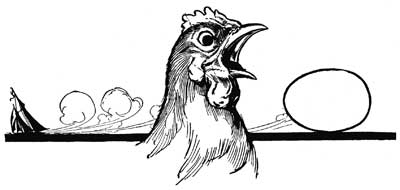
[Pg 64]
Dorothy Opens the Dinner Pail
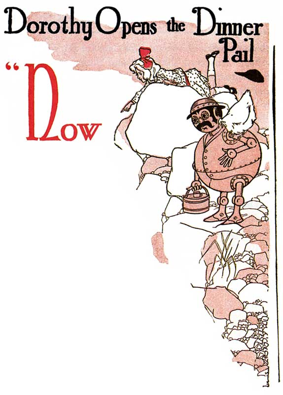
"Now Tiktok," said Dorothy, "the first thing to be done is to find a way
for us to escape from these rocks. The Wheelers are down below, you
know, and threaten to kill us."
"There is no rea-son to be a-fraid of the Wheel-ers," said Tiktok, the
words coming more slowly than before.
"Why not?" she asked.
"Be-cause they are ag-g-g—gr-gr-r-r-"
He gave a sort of gurgle and stopped short, waving his hands frantically
until suddenly he became motionless, with one arm in the air and the
other held stiffly before him with all the copper fingers of the hand
spread out like a fan.[Pg 65]
"Dear me!" said Dorothy, in a frightened tone. "What can the matter be?"
"He's run down, I suppose," said the hen, calmly. "You couldn't have
wound him up very tight."
"I didn't know how much to wind him," replied the girl; "but I'll try to
do better next time."
She ran around the copper man to take the key from the peg at the back
of his neck, but it was not there.
"It's gone!" cried Dorothy, in dismay.
"What's gone?" asked Billina.
"The key."
"It probably fell off when he made that low bow to you," returned the
hen. "Look around, and see if you cannot find it again."
Dorothy looked, and the hen helped her, and by and by the girl
discovered the clock-key, which had fallen into a crack of the rock.
At once she wound up Tiktok's voice, taking care to give the key as many
turns as it would go around. She found this quite a task, as you may
imagine if you have ever tried to wind a clock, but the machine man's
first words were to assure Dorothy that he would now run for at least
twenty-four hours.
"You did not wind me much, at first," he calmly said, "and I told you
that long sto-ry a-bout King[Pg 66] Ev-ol-do; so it is no won-der that I ran
down."
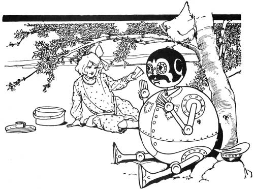
She next rewound the action clock-work, and then Billina advised her to
carry the key to Tiktok in her pocket, so it would not get lost again.
"And now," said Dorothy, when all this was accomplished, "tell me what
you were going to say about the Wheelers."
"Why, they are noth-ing to be fright-en'd at," said the machine. "They
try to make folks be-lieve that they are ver-y ter-ri-ble, but as a
mat-ter of[Pg 67] fact the Wheel-ers are harm-less e-nough to an-y one that
dares to fight them. They might try to hurt a lit-tle girl like you,
per-haps, be-cause they are ver-y mis-chiev-ous. But if I had a club
they would run a-way as soon as they saw me."
"Haven't you a club?" asked Dorothy.
"No," said Tiktok.
"And you won't find such a thing among these rocks, either," declared
the yellow hen.
"Then what shall we do?" asked the girl.
"Wind up my think-works tight-ly, and I will try to think of some oth-er
plan," said Tiktok.
So Dorothy rewound his thought machinery, and while he was thinking she
decided to eat her dinner. Billina was already pecking away at the
cracks in the rocks, to find something to eat, so Dorothy sat down and
opened her tin dinner-pail.
In the cover she found a small tank that was full of very nice lemonade.
It was covered by a cup, which might also, when removed, be used to
drink the lemonade from. Within the pail were three slices of turkey,
two slices of cold tongue, some lobster salad, four slices of bread and
butter, a small custard pie, an orange and nine large strawberries, and
some nuts and raisins. Singularly enough, the nuts in this dinner-pail
grew already cracked, so that[Pg 68] Dorothy had no trouble in picking out
their meats to eat.
She spread the feast upon the rock beside her and began her dinner,
first offering some of it to Tiktok, who declined because, as he said,
he was merely a machine. Afterward she offered to share with Billina,
but the hen murmured something about "dead things" and said she
preferred her bugs and ants.
"Do the lunch-box trees and the dinner-pail trees belong to the
Wheelers?" the child asked Tiktok, while engaged in eating her meal.
"Of course not," he answered. "They be-long to the roy-al fam-il-y of
Ev, on-ly of course there is no roy-al fam-il-y just now be-cause King
Ev-ol-do jumped in-to the sea and his wife and ten chil-dren have been
trans-formed by the Nome King. So there is no one to rule the Land of
Ev, that I can think of. Per-haps it is for this rea-son that the
Wheel-ers claim the trees for their own, and pick the lunch-eons and
din-ners to eat them-selves. But they be-long to the King, and you will
find the roy-al "E" stamped up-on the bot-tom of ev-er-y din-ner pail."
Dorothy turned the pail over, and at once discovered the royal mark upon
it, as Tiktok had said.
"Are the Wheelers the only folks living in the Land of Ev?" enquired the
girl.[Pg 69]
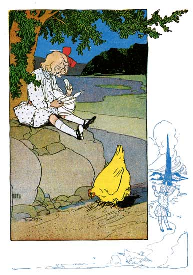
DOROTHY OPENED HER TIN DINNER-PAIL
[Pg 70]
"No; they on-ly in-hab-it a small por-tion of it just back of the
woods," replied the machine. "But they have al-ways been mis-chiev-ous
and im-per-ti-nent, and my old mas-ter, King Ev-ol-do, used to car-ry a
whip with him, when he walked out, to keep the crea-tures in or-der.
When I was first made the Wheel-ers tried to run o-ver me, and butt me
with their heads; but they soon found I was built of too sol-id a
ma-ter-i-al for them to in-jure."
"You seem very durable," said Dorothy. "Who made you?"
"The firm of Smith & Tin-ker, in the town of Ev-na, where the roy-al
pal-ace stands," answered Tiktok.
"Did they make many of you?" asked the child.
"No; I am the on-ly au-to-mat-ic me-chan-i-cal man they ev-er
com-plet-ed," he replied. "They were ver-y won-der-ful in-ven-tors, were
my mak-ers, and quite ar-tis-tic in all they did."
"I am sure of that," said Dorothy. "Do they live in the town of Evna
now?"
"They are both gone," replied the machine. "Mr. Smith was an art-ist, as
well as an in-vent-or, and he paint-ed a pic-ture of a riv-er which was
so nat-ur-al that, as he was reach-ing a-cross it to paint some flow-ers
on the op-po-site bank, he fell in-to the wa-ter and was drowned."[Pg 71]
"Oh, I'm sorry for that!" exclaimed the little girl.
"Mis-ter Tin-ker," continued Tiktok, "made a lad-der so tall that he
could rest the end of it a-gainst the moon, while he stood on the
high-est rung and picked the lit-tle stars to set in the points of the
king's crown. But when he got to the moon Mis-ter Tin-ker found it such
a love-ly place that he de-cid-ed to live there, so he pulled up the
lad-der af-ter him and we have nev-er seen him since."
"He must have been a great loss to this country," said Dorothy, who was
by this time eating her custard pie.
"He was," acknowledged Tiktok. "Also he is a great loss to me. For if I
should get out of or-der I do not know of an-y one a-ble to re-pair me,
be-cause I am so com-pli-cat-ed. You have no i-de-a how full of
ma-chin-er-y I am."
"I can imagine it," said Dorothy, readily.
"And now," continued the machine, "I must stop talk-ing and be-gin
think-ing a-gain of a way to es-cape from this rock." So he turned
halfway around, in order to think without being disturbed.
"The best thinker I ever knew," said Dorothy to the yellow hen, "was a
scarecrow."
"Nonsense!" snapped Billina.
"It is true," declared Dorothy. "I met him in[Pg 72] the Land of Oz, and he
travelled with me to the city of the great Wizard of Oz, so as to get
some brains, for his head was only stuffed with straw. But it seemed to
me that he thought just as well before he got his brains as he did
afterward."
"Do you expect me to believe all that rubbish about the Land of Oz?"
enquired Billina, who seemed a little cross—perhaps because bugs were
scarce.
"What rubbish?" asked the child, who was now finishing her nuts and
raisins.
"Why, your impossible stories about animals that can talk, and a tin
woodman who is alive, and a scarecrow who can think."
"They are all there," said Dorothy, "for I have seen them."
"I don't believe it!" cried the hen, with a toss of her head.
"That's 'cause you're so ign'rant," replied the girl, who was a little
offended at her friend Billina's speech.
"In the Land of Oz," remarked Tiktok, turning toward them, "an-y-thing
is pos-si-ble. For it is a won-der-ful fair-y coun-try."
"There, Billina! what did I say?" cried Dorothy. And then she turned to
the machine and asked in an eager tone: "Do you know the Land of Oz,
Tiktok?"[Pg 73]
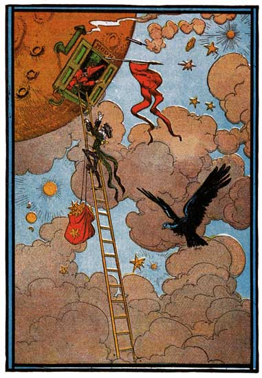
MISTER TINKER VISITS THE MOON
[Pg 74]
"No; but I have heard a-bout it," said the copper man. "For it is on-ly
sep-a-ra-ted from this Land of Ev by a broad des-ert."
Dorothy clapped her hands together delightedly.
"I'm glad of that!" she exclaimed. "It makes me quite happy to be so
near my old friends. The scarecrow I told you of, Billina, is the King
of the Land of Oz."
"Par-don me. He is not the king now," said Tiktok.
"He was when I left there," declared Dorothy.
"I know," said Tiktok, "but there was a rev-o-lu-tion in the Land of Oz,
and the Scare-crow was de-posed by a sol-dier wo-man named Gen-er-al
Jin-jur. And then Jin-jur was de-posed by a lit-tle girl named Oz-ma,
who was the right-ful heir to the throne and now rules the land un-der
the ti-tle of Oz-ma of Oz."
"That is news to me," said Dorothy, thoughtfully. "But I s'pose lots of
things have happened since I left the Land of Oz. I wonder what has
become of the Scarecrow, and of the Tin Woodman, and the Cowardly Lion.
And I wonder who this girl Ozma is, for I never heard of her before."
But Tiktok did not reply to this. He had turned around again to resume
his thinking.[Pg 75]
Dorothy packed the rest of the food back into the pail, so as not to be
wasteful of good things, and the yellow hen forgot her dignity far
enough to pick up all of the scattered crumbs, which she ate rather
greedily, although she had so lately pretended to despise the things
that Dorothy preferred as food.
By this time Tiktok approached them with his stiff bow.
"Be kind e-nough to fol-low me," he said, "and I will lead you a-way
from here to the town of Ev-na, where you will be more com-for-ta-ble,
and also I will pro-tect you from the Wheel-ers."
"All right," answered Dorothy, promptly. "I'm ready!"
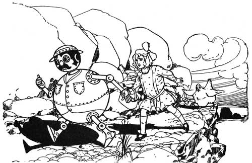
[Pg 76]
The Heads of Langwidere
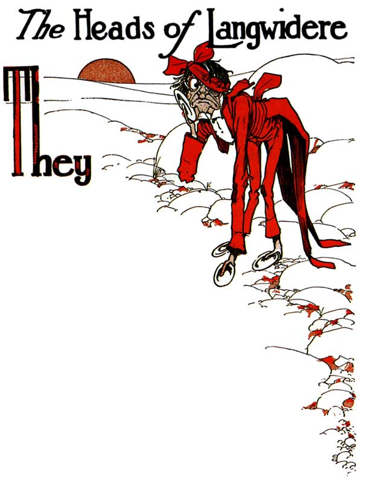
They walked slowly down the path between the rocks, Tiktok going first,
Dorothy following him, and the yellow hen trotting along last of all.
At the foot of the path the copper man leaned down and tossed aside with
ease the rocks that cumbered the way. Then he turned to Dorothy and
said:
"Let me car-ry your din-ner-pail."
She placed it in his right hand at once, and the copper fingers closed
firmly over the stout handle.
Then the little procession marched out upon the level sands.[Pg 77]
As soon as the three Wheelers who were guarding the mound saw them, they
began to shout their wild cries and rolled swiftly toward the little
group, as if to capture them or bar their way. But when the foremost had
approached near enough, Tiktok swung the tin dinner-pail and struck the
Wheeler a sharp blow over its head with the queer weapon. Perhaps it did
not hurt very much, but it made a great noise, and the Wheeler uttered a
howl and tumbled over upon its side. The next minute it scrambled to its
wheels and rolled away as fast as it could go, screeching with fear at
the same time.
"I told you they were harm-less," began Tiktok; but before he could say
more another Wheeler was upon them. Crack! went the dinner-pail against
its head, knocking its straw hat a dozen feet away; and that was enough
for this Wheeler, also. It rolled away after the first one, and the
third did not wait to be pounded with the pail, but joined its fellows
as quickly as its wheels would whirl.
The yellow hen gave a cackle of delight, and flying to a perch upon
Tiktok's shoulder, she said:
"Bravely done, my copper friend! and wisely thought of, too. Now we are
free from those ugly creatures."
But just then a large band of Wheelers rolled[Pg 78] from the forest, and
relying upon their numbers to conquer, they advanced fiercely upon
Tiktok. Dorothy grabbed Billina in her arms and held her tight, and the
machine embraced the form of the little girl with his left arm, the
better to protect her. Then the Wheelers were upon them.
Rattlety, bang! bang! went the dinner-pail in every direction, and it
made so much clatter bumping against the heads of the Wheelers that they
were much more frightened than hurt and fled in a great panic. All, that
is, except their leader. This Wheeler had stumbled against another and
fallen flat upon his back, and before he could get his wheels under him
to rise again, Tiktok had fastened his copper fingers into the neck of
the gorgeous jacket of his foe and held him fast.
"Tell your peo-ple to go a-way," commanded the machine.
The leader of the Wheelers hesitated to give this order, so Tiktok shook
him as a terrier dog does a rat, until the Wheeler's teeth rattled
together with a noise like hailstones on a window pane. Then, as soon as
the creature could get its breath, it shouted to the others to roll
away, which they immediately did.
"Now," said Tiktok, "you shall come with us and tell me what I want to
know."[Pg 79]
"You'll be sorry for treating me in this way," whined the Wheeler. "I'm
a terribly fierce person."
"As for that," answered Tiktok, "I am only a ma-chine, and can-not feel
sor-row or joy, no mat-ter what hap-pens. But you are wrong to think
your-self ter-ri-ble or fierce."
"Why so?" asked the Wheeler.
"Be-cause no one else thinks as you do. Your wheels make you help-less
to in-jure an-y one. For you have no fists and can not scratch or e-ven
pull[Pg 80] hair. Nor have you an-y feet to kick with. All you can do is to
yell and shout, and that does not hurt an-y one at all."
The Wheeler burst into a flood of tears, to Dorothy's great surprise.
"Now I and my people are ruined forever!" he sobbed; "for you have
discovered our secret. Being so helpless, our only hope is to make
people afraid of us, by pretending we are very fierce and terrible, and
writing in the sand warnings to Beware the Wheelers. Until now we have
frightened everyone, but since you have discovered our weakness our
enemies will fall upon us and make us very miserable and unhappy."
"Oh, no," exclaimed Dorothy, who was sorry to see this beautifully
dressed Wheeler so miserable; "Tiktok will keep your secret, and so will
Billina and I. Only, you must promise not to try to frighten children
any more, if they come near to you."
"I won't—indeed I won't!" promised the Wheeler, ceasing to cry and
becoming more cheerful. "I'm not really bad, you know; but we have to
pretend to be terrible in order to prevent others from attacking us."
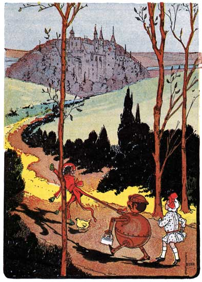
ON THE WAY TO THE ROYAL PALACE OF EV
"That is not ex-act-ly true," said Tiktok, starting to walk toward the
path through the forest, and[Pg 82][Pg 81] still holding fast to his prisoner, who
rolled slowly along beside him. "You and your peo-ple are full of
mis-chief, and like to both-er those who fear you. And you are of-ten
im-pu-dent and dis-a-gree-a-ble, too. But if you will try to cure those
faults I will not tell any-one how help-less you are."
"I'll try, of course," replied the Wheeler, eagerly. "And thank you, Mr.
Tiktok, for your kindness."
"I am on-ly a ma-chine," said Tiktok. "I can not be kind an-y more than
I can be sor-ry or glad. I can on-ly do what I am wound up to do."
"Are you wound up to keep my secret?" asked the Wheeler, anxiously.
"Yes; if you be-have your-self. But tell me: who rules the Land of Ev
now?" asked the machine.
"There is no ruler," was the answer, "because every member of the royal
family is imprisoned by the Nome King. But the Princess Langwidere, who
is a niece of our late King Evoldo, lives in a part of the royal palace
and takes as much money out of the royal treasury as she can spend. The
Princess Langwidere is not exactly a ruler, you see, because she doesn't
rule; but she is the nearest approach to a ruler we have at present."
"I do not re-mem-ber her," said Tiktok. "What does she look like?"[Pg 83]
"That I cannot say," replied the Wheeler, "although I have seen her
twenty times. For the Princess Langwidere is a different person every
time I see her, and the only way her subjects can recognize her at all
is by means of a beautiful ruby key which she always wears on a chain
attached to her left wrist. When we see the key we know we are beholding
the Princess."
"That is strange," said Dorothy, in astonishment. "Do you mean to say
that so many different princesses are one and the same person?"
"Not exactly," answered the Wheeler. "There is, of course, but one
princess; but she appears to us in many forms, which are all more or
less beautiful."
"She must be a witch," exclaimed the girl.
"I do not think so," declared the Wheeler. "But there is some mystery
connected with her, nevertheless. She is a very vain creature, and lives
mostly in a room surrounded by mirrors, so that she can admire herself
whichever way she looks."
No one answered this speech, because they had just passed out of the
forest and their attention was fixed upon the scene before them—a
beautiful vale in which were many fruit trees and green fields, with
pretty farm-houses scattered here and there and broad, smooth roads that
led in every direction.[Pg 84]
In the center of this lovely vale, about a mile from where our friends
were standing, rose the tall spires of the royal palace, which glittered
brightly against their background of blue sky. The palace was surrounded
by charming grounds, full of flowers and shrubbery. Several tinkling
fountains could be seen, and there were pleasant walks bordered by rows
of white marble statuary.
All these details Dorothy was, of course, unable to notice or admire
until they had advanced along the road to a position quite near to the
palace, and she was still looking at the pretty sights when her little
party entered the grounds and approached the big front door of the
king's own apartments. To their disappointment they found the door
tightly closed. A sign was tacked to the panel which read as follows:
OWNER ABSENT.
Please Knock at the Third Door in the Left Wing.
"Now," said Tiktok to the captive Wheeler, "you must show us the way to
the Left Wing."[Pg 85]
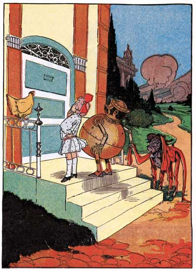
A SIGN WAS TACKED TO THE PANEL
[Pg 86]
"Very well," agreed the prisoner, "it is around here at the right."
"How can the left wing be at the right?" demanded Dorothy, who feared
the Wheeler was fooling them.
"Because there used to be three wings, and two were torn down, so the
one on the right is the only one left. It is a trick of the Princess
Langwidere to prevent visitors from annoying her."
Then the captive led them around to the wing, after which the machine
man, having no further use for the Wheeler, permitted him to depart and
rejoin his fellows. He immediately rolled away at a great pace and was
soon lost to sight.
Tiktok now counted the doors in the wing and knocked loudly upon the
third one.
It was opened by a little maid in a cap trimmed with gay ribbons, who
bowed respectfully and asked:
"What do you wish, good people?"
"Are you the Princess Langwidere?" asked Dorothy.
"No, miss; I am her servant," replied the maid.
"May I see the Princess, please?"
"I will tell her you are here, miss, and ask her to grant you an
audience," said the maid. "Step in, please, and take a seat in the
drawing-room."[Pg 87]
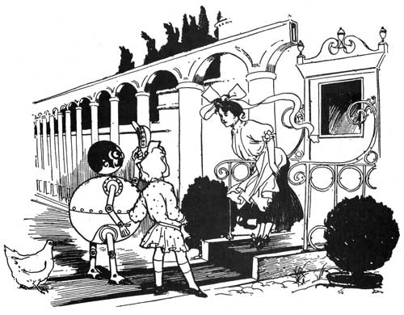
So Dorothy walked in, followed closely by the machine. But as the yellow
hen tried to enter after them, the little maid cried "Shoo!" and flapped
her apron in Billina's face.
"Shoo, yourself!" retorted the hen, drawing back in anger and ruffling
up her feathers. "Haven't you any better manners than that?"
"Oh, do you talk?" enquired the maid, evidently surprised.
"Can't you hear me?" snapped Billina. "Drop[Pg 88] that apron, and get out of
the doorway, so that I may enter with my friends!"
"The Princess won't like it," said the maid, hesitating.
"I don't care whether she likes it or not," replied Billina, and
fluttering her wings with a loud noise she flew straight at the maid's
face. The little servant at once ducked her head, and the hen reached
Dorothy's side, in safety.
"Very well," sighed the maid; "if you are all ruined because of this
obstinate hen, don't blame me for it. It isn't safe to annoy the
Princess Langwidere."
"Tell her we are waiting, if you please," Dorothy requested, with
dignity. "Billina is my friend, and must go wherever I go."
Without more words the maid led them to a richly furnished drawing-room,
lighted with subdued rainbow tints that came in through beautiful
stained-glass windows.
"Remain here," she said. "What names shall I give the Princess?"
"I am Dorothy Gale, of Kansas," replied the child; "and this gentleman
is a machine named Tiktok, and the yellow hen is my friend Billina."
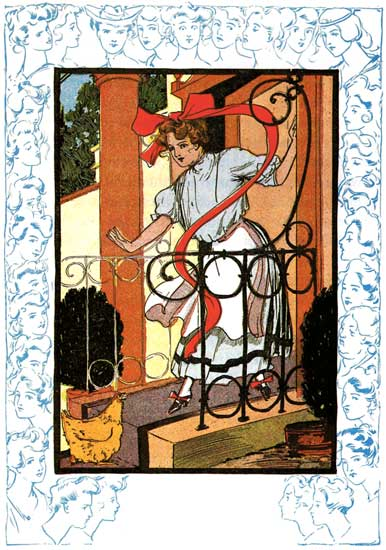
"THE PRINCESS WONT LIKE IT," SAID THE MAID
The little servant bowed and withdrew, going[Pg 90][Pg 89] through several passages
and mounting two marble stairways before she came to the apartments
occupied by her mistress.
Princess Langwidere's sitting-room was panelled with great mirrors,
which reached from the ceiling to the floor; also the ceiling was
composed of mirrors, and the floor was of polished silver that reflected
every object upon it. So when Langwidere sat in her easy chair and
played soft melodies upon her mandolin, her form was mirrored hundreds
of times, in walls and ceiling and floor, and whichever way the lady
turned her head she could see and admire her own features. This she
loved to do, and just as the maid entered she was saying to herself:
"This head with the auburn hair and hazel eyes is quite attractive. I
must wear it more often than I have done of late, although it may not be
the best of my collection."
"You have company, Your Highness," announced the maid, bowing low.
"Who is it?" asked Langwidere, yawning.
"Dorothy Gale of Kansas, Mr. Tiktok and Billina," answered the maid.
"What a queer lot of names!" murmured the Princess, beginning to be a
little interested. "What are they like? Is Dorothy Gale of Kansas
pretty?"[Pg 91]
"She might be called so," the maid replied.
"And is Mr. Tiktok attractive?" continued the Princess.
"That I cannot say, Your Highness. But he seems very bright. Will Your
Gracious Highness see them?"
"Oh, I may as well, Nanda. But I am tired admiring this head, and if my
visitor has any claim to beauty I must take care that she does not
surpass me. So I will go to my cabinet and change to No. 17, which I
think is my best appearance. Don't you?"
"Your No. 17 is exceedingly beautiful," answered Nanda, with another
bow.
Again the Princess yawned. Then she said:
"Help me to rise."
So the maid assisted her to gain her feet, although Langwidere was the
stronger of the two; and then the Princess slowly walked across the
silver floor to her cabinet, leaning heavily at every step upon Nanda's
arm.
Now I must explain to you that the Princess Langwidere had thirty
heads—as many as there are days in the month. But of course she could
only wear one of them at a time, because she had but one neck. These
heads were kept in what she called her "cabinet," which was a beautiful
dressing-room[Pg 92] that lay just between Langwidere's sleeping-chamber and
the mirrored sitting-room. Each head was in a separate cupboard lined
with velvet. The cupboards ran all around the sides of the
dressing-room, and had elaborately carved doors with gold numbers on the
outside and jewelled-framed mirrors on the inside of them.
When the Princess got out of her crystal bed in the morning she went to
her cabinet, opened one of the velvet-lined cupboards, and took the head
it contained from its golden shelf. Then, by the aid of the mirror
inside the open door, she put on the head—as neat and straight as could
be—and afterward called her maids to robe her for the day. She always
wore a simple white costume, that suited all the heads. For, being able
to change her face whenever she liked, the Princess had no interest in
wearing a variety of gowns, as have other ladies who are compelled to
wear the same face constantly.
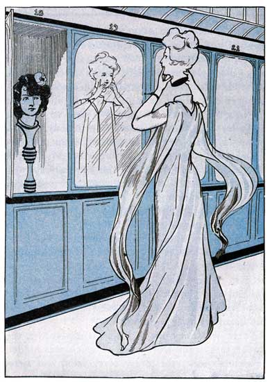
BY THE AID OF THE MIRROR SHE PUT ON THE HEAD
Of course the thirty heads were in great variety, no two formed alike
but all being of exceeding loveliness. There were heads with golden
hair, brown hair, rich auburn hair and black hair; but none with gray
hair. The heads had eyes of blue, of gray, of hazel, of brown and of
black; but there were no red eyes among them, and all were bright[Pg 94][Pg 93] and
handsome. The noses were Grecian, Roman, retrouss� and Oriental,
representing all types of beauty; and the mouths were of assorted sizes
and shapes, displaying pearly teeth when the heads smiled. As for
dimples, they appeared in cheeks and chins, wherever they might be most
charming, and one or two heads had freckles upon the faces to contrast
the better with the brilliancy of their complexions.
One key unlocked all the velvet cupboards containing these treasures—a
curious key carved from a single blood-red ruby—and this was fastened
to a strong but slender chain which the Princess wore around her left
wrist.
When Nanda had supported Langwidere to a position in front of cupboard
No. 17, the Princess unlocked the door with her ruby key and after
handing head No. 9, which she had been wearing, to the maid, she took
No. 17 from its shelf and fitted it to her neck. It had black hair and
dark eyes and a lovely pearl-and-white complexion, and when Langwidere
wore it she knew she was remarkably beautiful in appearance.
There was only one trouble with No. 17; the temper that went with it
(and which was hidden somewhere under the glossy black hair) was fiery,
harsh and haughty in the extreme, and it often led[Pg 95] the Princess to do
unpleasant things which she regretted when she came to wear her other
heads.
But she did not remember this today, and went to meet her guests in the
drawing-room with a feeling of certainty that she would surprise them
with her beauty.
However, she was greatly disappointed to find that her visitors were
merely a small girl in a gingham dress, a copper man that would only go
when wound up, and a yellow hen that was sitting contentedly in
Langwidere's best work-basket, where there was a china egg used for
darning stockings.[A]
"Oh!" said Langwidere, slightly lifting the nose of No. 17. "I thought
some one of importance had called."
"Then you were right," declared Dorothy. "I'm a good deal of 'portance
myself, and when Billina lays an egg she has the proudest cackle you
ever heard. As for Tiktok, he's the——"
"Stop—Stop!" commanded the Princess, with an angry flash of her
splendid eyes. "How dare you annoy me with your senseless chatter?"[Pg 96]
"Why, you horrid thing!" said Dorothy, who was not accustomed to being
treated so rudely.
The Princess looked at her more closely.
"Tell me," she resumed, "are you of royal blood?"
"Better than that, ma'am," said Dorothy. "I came from Kansas."
"Huh!" cried the Princess, scornfully. "You are a foolish child, and I
cannot allow you to annoy me. Run away, you little goose, and bother
some one else."
Dorothy was so indignant that for a moment she could find no words to
reply. But she rose from her chair, and was about to leave the room when
the Princess, who had been scanning the girl's face, stopped her by
saying, more gently:
"Come nearer to me."
Dorothy obeyed, without a thought of fear, and stood before the Princess
while Langwidere examined her face with careful attention.
"You are rather attractive," said the lady, presently. "Not at all
beautiful, you understand, but you have a certain style of prettiness
that is different from that of any of my thirty heads. So I believe I'll
take your head and give you No. 26 for it."
"Well, I b'lieve you won't!" exclaimed Dorothy.
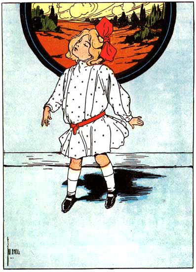
"WELL I B'LIEVE YOU WONT!" EXCLAIMED DOROTHY
"It will do you no good to refuse," continued the[Pg 98][Pg 97] Princess; "for I
need your head for my collection, and in the Land of Ev my will is law.
I never have cared much for No. 26, and you will find that it is very
little worn. Besides, it will do you just as well as the one you're
wearing, for all practical purposes."
"I don't know anything about your No. 26, and I don't want to," said
Dorothy, firmly. "I'm not used to taking cast-off things, so I'll just
keep my own head."
"You refuse?" cried the Princess, with a frown.
"Of course I do," was the reply.
"Then," said Langwidere, "I shall lock you up in a tower until you
decide to obey me. Nanda," turning to her maid, "call my army."
Nanda rang a silver bell, and at once a big fat colonel in a bright red
uniform entered the room, followed by ten lean soldiers, who all looked
sad and discouraged and saluted the princess in a very melancholy
fashion.
"Carry that girl to the North Tower and lock her up!" cried the
Princess, pointing to Dorothy.
"To hear is to obey," answered the big red colonel, and caught the child
by her arm. But at that moment Tiktok raised his dinner-pail and pounded
it so forcibly against the colonel's head that the big officer sat down
upon the floor with a sudden bump,[Pg 99] looking both dazed and very much
astonished.
"Help!" he shouted, and the ten lean soldiers sprang to assist their
leader.
There was great excitement for the next few moments, and Tiktok had
knocked down seven of the army, who were sprawling in every direction
upon the carpet, when suddenly the machine paused, with the dinner-pail
raised for another blow, and remained perfectly motionless.
"My ac-tion has run down," he called to Dorothy. "Wind me up, quick."
She tried to obey, but the big colonel had by this time managed to get
upon his feet again, so he grabbed fast hold of the girl and she was
helpless to escape.
"This is too bad," said the machine. "I ought to have run six hours
lon-ger, at least, but I sup-pose my long walk and my fight with the
Wheel-ers made me run down fast-er than us-u-al."
"Well, it can't be helped," said Dorothy, with a sigh.
"Will you exchange heads with me?" demanded the Princess.
"No, indeed!" cried Dorothy.
"Then lock her up," said Langwidere to her soldiers, and they led
Dorothy to a high tower at the north of the palace and locked her
securely within.[Pg 100] The soldiers afterward tried to lift Tiktok, but they
found the machine so solid and heavy that they could not stir it. So
they left him standing in the center of the drawing-room.
"People will think I have a new statue," said Langwidere, "so it won't
matter in the least, and Nanda can keep him well polished."
"What shall we do with the hen?" asked the colonel, who had just
discovered Billina in the work-basket.
"Put her in the chicken-house," answered the Princess. "Some day I'll
have her fried for breakfast."
"She looks rather tough, Your Highness," said Nanda, doubtfully.
"That is a base slander!" cried Billina, struggling frantically in the
colonel's arms. "But the breed of chickens I come from is said to be
poison to all princesses."
"Then," remarked Langwidere, "I will not fry the hen, but keep her to
lay eggs; and if she doesn't do her duty I'll have her drowned in the
horse trough."
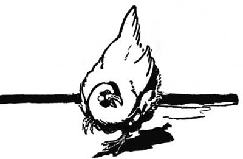
[Pg 101]
Ozma of Oz to the Rescue
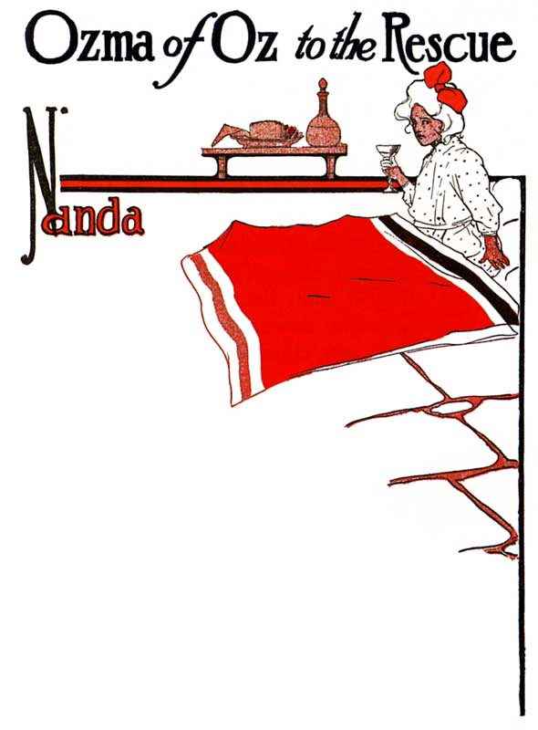
Nanda brought Dorothy bread and water for her supper and she slept upon
a hard stone couch with a single pillow and a silken coverlet.
In the morning she leaned out of the window of her prison in the tower
to see if there was any way to escape. The room was not so very high up,
when compared with our modern buildings, but it was far enough above the
trees and farm houses to give her a good view of the surrounding
country.
To the east she saw the forest, with the sands beyond it and the ocean
beyond that. There was even a dark speck upon the shore that she[Pg 102]
thought might be the chicken-coop in which she had arrived at this
singular country.
Then she looked to the north, and saw a deep but narrow valley lying
between two rocky mountains, and a third mountain that shut off the
valley at the further end.
Westward the fertile Land of Ev suddenly ended a little way from the
palace, and the girl could see miles and miles of sandy desert that
stretched further than her eyes could reach. It was this desert, she
thought, with much interest, that alone separated her from the wonderful
Land of Oz, and she remembered sorrowfully that she had been told no one
had ever been able to cross this dangerous waste but herself. Once a
cyclone had carried her across it, and a magical pair of silver shoes
had carried her back again. But now she had neither a cyclone nor silver
shoes to assist her, and her condition was sad indeed. For she had
become the prisoner of a disagreeable princess who insisted that she
must exchange her head for another one that she was not used to, and
which might not fit her at all.
Really, there seemed no hope of help for her from her old friends in the
Land of Oz. Thoughtfully she gazed from her narrow window. On all the
desert not a living thing was stirring.[Pg 103]
Wait, though! Something surely was stirring on the desert—something
her eyes had not observed at first. Now it seemed like a cloud; now it
seemed like a spot of silver; now it seemed to be a mass of rainbow
colors that moved swiftly toward her.
What could it be, she wondered?
Then, gradually, but in a brief space of time nevertheless, the vision
drew near enough to Dorothy to make out what it was.
A broad green carpet was unrolling itself upon the desert, while
advancing across the carpet was a wonderful procession that made the
girl open her eyes in amazement as she gazed.
First came a magnificent golden chariot, drawn by a great Lion and an
immense Tiger, who stood shoulder to shoulder and trotted along as
gracefully as a well-matched team of thoroughbred horses. And standing
upright within the chariot was a beautiful girl clothed in flowing robes
of silver gauze and wearing a jeweled diadem upon her dainty head. She
held in one hand the satin ribbons that guided her astonishing team, and
in the other an ivory wand that separated at the top into two prongs,
the prongs being tipped by the letters "O" and "Z", made of glistening
diamonds set closely together.
The girl seemed neither older nor larger than[Pg 104] Dorothy herself, and at
once the prisoner in the tower guessed, that the lovely driver of the
chariot must be that Ozma of Oz of whom she had so lately heard from
Tiktok.
Following close behind the chariot Dorothy saw her old friend the
Scarecrow, riding calmly astride a wooden Saw-Horse, which pranced and
trotted as naturally as any meat horse could have done.
And then came Nick Chopper, the Tin Woodman, with his funnel-shaped cap
tipped carelessly over his left ear, his gleaming axe over his right
shoulder, and his whole body sparkling as brightly as it had ever done
in the old days when first she knew him.
The Tin Woodman was on foot, marching at the head of a company of
twenty-seven soldiers, of whom some were lean and some fat, some short
and some tall; but all the twenty-seven were dressed in handsome
uniforms of various designs and colors, no two being alike in any
respect.
Behind the soldiers the green carpet rolled itself up again, so that
there was always just enough of it for the procession to walk upon, in
order that their feet might not come in contact with the deadly,
life-destroying sands of the desert.
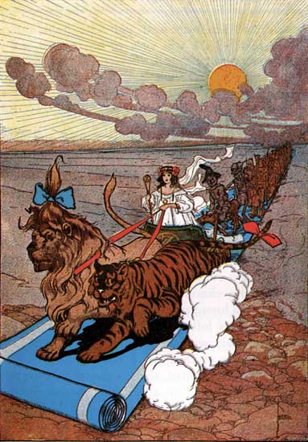
THE MAGIC CARPET
Dorothy knew at once it was a magic carpet she[Pg 106][Pg 105] beheld, and her heart
beat high with hope and joy as she realized she was soon to be rescued
and allowed to greet her dearly beloved friends of Oz—the Scarecrow,
the Tin Woodman and the Cowardly Lion.
Indeed, the girl felt herself as good as rescued as soon as she
recognized those in the procession, for she well knew the courage and
loyalty of her old comrades, and also believed that any others who came
from their marvelous country would prove to be pleasant and reliable
acquaintances.
As soon as the last bit of desert was passed and all the procession,
from the beautiful and dainty Ozma to the last soldier, had reached the
grassy meadows of the Land of Ev, the magic carpet rolled itself
together and entirely disappeared.
Then the chariot driver turned her Lion and Tiger into a broad roadway
leading up to the palace, and the others followed, while Dorothy still
gazed from her tower window in eager excitement.
They came quite close to the front door of the palace and then halted,
the Scarecrow dismounting from his Saw-Horse to approach the sign
fastened to the door, that he might read what it said.
Dorothy, just above him, could keep silent no longer.[Pg 107]
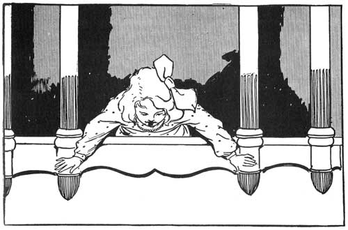
"Here I am!" she shouted, as loudly as she could. "Here's Dorothy!"
"Dorothy who?" asked the Scarecrow, tipping his head to look upward
until he nearly lost his balance and tumbled over backward.
"Dorothy Gale, of course. Your friend from Kansas," she answered.
"Why, hello, Dorothy!" said the Scarecrow. "What in the world are you
doing up there?"[Pg 108]
"Nothing," she called down, "because there's nothing to do. Save me, my
friend—save me!"
"You seem to be quite safe now," replied the Scarecrow.
"But I'm a prisoner. I'm locked in, so that I can't get out," she
pleaded.
"That's all right," said the Scarecrow. "You might be worse off, little
Dorothy. Just consider the matter. You can't get drowned, or be run over
by a Wheeler, or fall out of an apple-tree. Some folks would think they
were lucky to be up there."
"Well, I don't," declared the girl, "and I want to get down immed'i'tly
and see you and the Tin Woodman and the Cowardly Lion."
"Very well," said the Scarecrow, nodding. "It shall be just as you say,
little friend. Who locked you up?"
"The princess Langwidere, who is a horrid creature," she answered.
At this Ozma, who had been listening carefully to the conversation,
called to Dorothy from her chariot, asking:
"Why did the Princess lock you up, my dear?"
"Because," exclaimed Dorothy, "I wouldn't let her have my head for her
collection, and take an old, cast-off head in exchange for it."[Pg 109]
 "SAVE ME, MY FRIEND—SAVE ME!"
"SAVE ME, MY FRIEND—SAVE ME!"
[Pg 110]
"I do not blame you," exclaimed Ozma, promptly. "I will see the Princess
at once, and oblige her to liberate you."
"Oh, thank you very, very much!" cried Dorothy, who as soon as she heard
the sweet voice of the girlish Ruler of Oz knew that she would soon
learn to love her dearly.
Ozma now drove her chariot around to the third door of the wing, upon
which the Tin Woodman boldly proceeded to knock.
As soon as the maid opened the door Ozma, bearing in her hand her ivory
wand, stepped into the hall and made her way at once to the
drawing-room, followed by all her company, except the Lion, and the
Tiger. And the twenty-seven soldiers made such a noise and a clatter
that the little maid Nanda ran away screaming to her mistress, whereupon
the Princess Langwidere, roused to great anger by this rude invasion of
her palace, came running into the drawing room without any assistance
whatever.
There she stood before the slight and delicate form of the little girl
from Oz and cried out;—
"How dare you enter my palace unbidden? Leave this room at once, or I
will bind you and all your people in chains, and throw you into my
darkest dungeons!"[Pg 111]
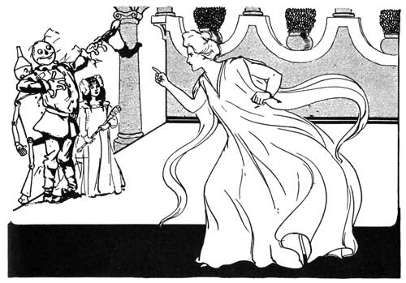
"What a dangerous lady!" murmured the Scarecrow, in a soft voice.
"She seems a little nervous," replied the Tin Woodman.
But Ozma only smiled at the angry Princess.
"Sit down, please," she said, quietly. "I have traveled a long way to
see you, and you must listen to what I have to say."
"Must!" screamed the Princess, her black eyes flashing with fury—for
she still wore her No. 17 head. "Must, to me!"[Pg 112]
"To be sure," said Ozma. "I am Ruler of the Land of Oz, and I am
powerful enough to destroy all your kingdom, if I so wish. Yet I did not
come here to do harm, but rather to free the royal family of Ev from the
thrall of the Noma King, the news having reached me that he is holding
the Queen and her children prisoners."
Hearing these words, Langwidere suddenly became quiet.
"I wish you could, indeed, free my aunt and her ten royal children,"
said she, eagerly. "For if they were restored to their proper forms and
station they could rule the Kingdom of Ev themselves, and that would
save me a lot of worry and trouble. At present there are at least ten
minutes every day that I must devote to affairs of state, and I would
like to be able to spend my whole time in admiring my beautiful heads."
"Then we will presently discuss this matter," said Ozma, "and try to
find a way to liberate your aunt and cousins. But first you must
liberate another prisoner—the little girl you have locked up in your
tower."
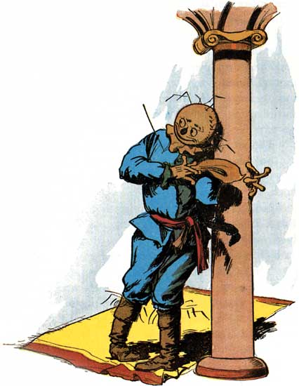
"WHAT A DANGEROUS LADY!" MURMURED THE SCARECROW
"Of course," said Langwidere, readily. "I had forgotten all about her.
That was yesterday, you know, and a Princess cannot be expected to[Pg 114][Pg 113]
remember today what she did yesterday. Come with me, and I will release
the prisoner at once."
So Ozma followed her, and they passed up the stairs that led to the room
in the tower.
While they were gone Ozma's followers remained in the drawing-room, and
the Scarecrow was leaning against a form that he had mistaken for a
copper statue when a harsh, metallic voice said suddenly in his ear:
"Get off my foot, please. You are scratch-ing my pol-ish."
"Oh, excuse me!" he replied, hastily drawing back. "Are you alive?"
"No," said Tiktok, "I am on-ly a ma-chine. But I can think and speak and
act, when I am pro-per-ly wound up. Just now my ac-tion is run down, and
Dor-o-thy has the key to it."
"That's all right," replied the Scarecrow. "Dorothy will soon be free,
and then she'll attend to your works. But it must be a great misfortune
not to be alive. I'm sorry for you."
"Why?" asked Tiktok.
"Because you have no brains, as I have," said the Scarecrow.
"Oh, yes, I have," returned Tiktok. "I am fit-ted with Smith & Tin-ker's
Improved Com-bi-[Pg 115]na-tion Steel Brains. They are what make me think. What
sort of brains are you fit-ted with?"
"I don't know," admitted the Scarecrow. "They were given to me by the
great Wizard of Oz, and I didn't get a chance to examine them before he
put them in. But they work splendidly and my conscience is very active.
Have you a conscience?"
"No," said Tiktok.
"And no heart, I suppose?" added the Tin Woodman, who had been listening
with interest to this conversation.
"No," said Tiktok.
"Then," continued the Tin Woodman, "I regret to say that you are greatly
inferior to my friend the Scarecrow, and to myself. For we are both
alive, and he has brains which do not need to be wound up, while I have
an excellent heart that is continually beating in my bosom."
"I con-grat-u-late you," replied Tiktok. "I can-not help be-ing your
in-fer-i-or for I am a mere ma-chine. When I am wound up I do my du-ty
by go-ing just as my ma-chin-er-y is made to go. You have no i-de-a how
full of ma-chin-er-y I am."
"I can guess," said the Scarecrow, looking at the machine man curiously.
"Some day I'd like[Pg 116] to take you apart and see just how you are made."
"Do not do that, I beg of you," said Tiktok; "for you could not put me
to-geth-er a-gain, and my use-ful-ness would be de-stroyed."
"Oh! are you useful?" asked the Scarecrow, surprised.
"Ve-ry," said Tiktok.
"In that case," the Scarecrow kindly promised, "I won't fool with your
interior at all. For I am a poor mechanic, and might mix you up."
"Thank you," said Tiktok.
Just then Ozma re-entered the room, leading Dorothy by the hand and
followed closely by the Princess Langwidere.
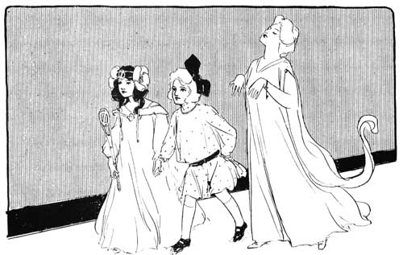
[Pg 117]
The Hungry Tiger
The first thing Dorothy did was to rush into the embrace of the
Scarecrow, whose painted face beamed with delight as he pressed her form
to his straw-padded bosom. Then the Tin Woodman embraced her—very
gently, for he knew his tin arms might hurt her if he squeezed too
roughly.
These greetings having been exchanged, Dorothy took the key to Tiktok
from her pocket and wound up the machine man's action, so that he could
bow properly when introduced to the rest of the company.[Pg 118] While doing
this she told them now useful Tiktok had been to her, and both the
Scarecrow and the Tin Woodman shook hands with the machine once more and
thanked him for protecting their friend.
Then Dorothy asked: "Where is Billina?"
"I don't know," said the Scarecrow. "Who is Billina?"
"She's a yellow hen who is another friend of mine," answered the girl,
anxiously. "I wonder what has become of her?"
"She is in the chicken house, in the back yard," said the Princess. "My
drawing-room is no place for hens."
Without waiting to hear more Dorothy ran to get Billina, and just
outside the door she came upon the Cowardly Lion, still hitched to the
chariot beside the great Tiger. The Cowardly Lion had a big bow of blue
ribbon fastened to the long hair between his ears, and the Tiger wore a
bow of red ribbon on his tail, just in front of the bushy end.
In an instant Dorothy was hugging the huge Lion joyfully.
"I'm so glad to see you again!" she cried.
"I am also glad to see you, Dorothy," said the Lion. "We've had some
fine adventures together, haven't we?"[Pg 119]
"Yes, indeed," she replied. "How are you?"
"As cowardly as ever," the beast answered in a meek voice. "Every little
thing scares me and makes my heart beat fast. But let me introduce to
you a new friend of mine, the Hungry Tiger."
"Oh! Are you hungry?" she asked, turning to the other beast, who was
just then yawning so widely that he displayed two rows of terrible teeth
and a mouth big enough to startle anyone.
"Dreadfully hungry," answered the Tiger, snapping his jaws together with
a fierce click.
"Then why don't you eat something?" she asked.[Pg 120]
"It's no use," said the Tiger sadly. "I've tried that, but I always get
hungry again."
"Why, it is the same with me," said Dorothy. "Yet I keep on eating."
"But you eat harmless things, so it doesn't matter," replied the Tiger.
"For my part, I'm a savage beast, and have an appetite for all sorts of
poor little living creatures, from a chipmonk to fat babies.
"How dreadful!" said Dorothy.
"Isn't it, though?" returned the Hungry Tiger, licking his lips with his
long red tongue. "Fat babies! Don't they sound delicious? But I've never
eaten any, because my conscience tells me it is wrong. If I had no
conscience I would probably eat the babies and then get hungry again,
which would mean that I had sacrificed the poor babies for nothing. No;
hungry I was born, and hungry I shall die. But I'll not have any cruel
deeds on my conscience to be sorry for."
"I think you are a very good tiger," said Dorothy, patting the huge head
of the beast.
"In that you are mistaken," was the reply. "I am a good beast, perhaps,
but a disgracefully bad tiger. For it is the nature of tigers to be
cruel and ferocious, and in refusing to eat harmless living creatures I
am acting as no good tiger has ever[Pg 122][Pg 121] before acted. That is why I left
the forest and joined my friend the Cowardly Lion."
THE HUNGRY TIGER
"But the Lion is not really cowardly," said Dorothy. "I have seen him
act as bravely as can be."
"All a mistake, my dear," protested the Lion gravely. "To others I may
have seemed brave, at times, but I have never been in any danger that I
was not afraid."
"Nor I," said Dorothy, truthfully. "But I must go and set free Billina,
and then I will see you again."
She ran around to the back yard of the palace and soon found the chicken
house, being guided to it by a loud cackling and crowing and a
distracting hubbub of sounds such as chickens make when they are
excited.
Something seemed to be wrong in the chicken house, and when Dorothy
looked through the slats in the door she saw a group of hens and
roosters huddled in one corner and watching what appeared to be a
whirling ball of feathers. It bounded here and there about the chicken
house, and at first Dorothy could not tell what it was, while the
screeching of the chickens nearly deafened her.
But suddenly the bunch of feathers stopped whirling, and then, to her
amazement, the girl saw[Pg 123] Billina crouching upon the prostrate form of a
speckled rooster. For an instant they both remained motionless, and then
the yellow hen shook her wings to settle the feathers and walked toward
the door with a strut of proud defiance and a cluck of victory, while
the speckled rooster limped away to the group of other chickens,
trailing his crumpled plumage in the dust as he went.
"Why, Billina!" cried Dorothy, in a shocked voice; "have you been
fighting?"
"I really think I have," retorted Billina. "Do you think I'd let that
speckled villain of a rooster lord it over me, and claim to run this
chicken house, as long as I'm able to peck and scratch? Not if my name
is Bill!"
"It isn't Bill, it's Billina; and you're talking slang, which is very
undig'n'fied," said Dorothy, reprovingly. "Come here, Billina, and I'll
let you out; for Ozma of Oz is here, and has set us free."
So the yellow hen came to the door, which Dorothy unlatched for her to
pass through, and the other chickens silently watched them from their
corner without offering to approach nearer.
The girl lifted her friend in her arms and exclaimed:
"Oh, Billina! how dreadful you look. You've[Pg 124] lost a lot of feathers, and
one of your eyes is nearly pecked out, and your comb is bleeding!"
"That's nothing," said Billina. "Just look at the speckled rooster!
Didn't I do him up brown?"
Dorothy shook her head.
"I don't 'prove of this, at all," she said, carrying Billina away toward
the palace. "It isn't a good thing for you to 'sociate with those common
chickens. They would soon spoil your good manners, and you wouldn't be
respec'able any more."
"I didn't ask to associate with them," replied Billina. "It is that
cross old Princess who is to blame. But I was raised in the United
States, and I won't allow any one-horse chicken of the Land of Ev to run
over me and put on airs, as long as I can lift a claw in self-defense."
"Very well, Billina," said Dorothy. "We won't talk about it any more."
Soon they came to the Cowardly Lion and the Hungry Tiger to whom the
girl introduced the Yellow Hen.
"Glad to meet any friend of Dorothy's," said the Lion, politely. "To
judge by your present appearance, you are not a coward, as I am."
"WHY, BILLINA!" CRIED DOROTHY; "HAVE YOU BEEN FIGHTING?"
"Your present appearance makes my mouth water," said the Tiger, looking
at Billina greedily.[Pg 126][Pg 125] "My, my! how good you would taste if I could only
crunch you between my jaws. But don't worry. You would only appease my
appetite for a moment; so it isn't worth while to eat you."
"Thank you," said the hen, nestling closer in Dorothy's arms.
"Besides, it wouldn't be right," continued the Tiger, looking steadily
at Billina and clicking his jaws together.
"Of course not," cried Dorothy, hastily. "Billina is my friend, and you
mustn't ever eat her under any circ'mstances."
"I'll try to remember that," said the Tiger; "but I'm a little
absent-minded, at times."
Then Dorothy carried her pet into the drawing-room of the palace, where
Tiktok, being invited to do so by Ozma, had seated himself between the
Scarecrow and the Tin Woodman. Opposite to them sat Ozma herself and the
Princess Langwidere, and beside them there was a vacant chair for
Dorothy.
Around this important group was ranged the Army of Oz, and as Dorothy
looked at the handsome uniforms of the Twenty-Seven she said:
"Why, they seem to be all officers."
"They are, all except one," answered the Tin Woodman. "I have in my Army
eight Generals,[Pg 127] six Colonels, seven Majors and five Captains, besides
one private for them to command. I'd like to promote the private, for I
believe no private should ever be in public life; and I've also noticed
that officers usually fight better and are more reliable than common
soldiers. Besides, the officers are more important looking, and lend
dignity to our army."
"No doubt you are right," said Dorothy, seating herself beside Ozma.
"And now," announced the girlish Ruler of Oz, "we will hold a solemn
conference to decide the best manner of liberating the royal family of
this fair Land of Ev from their long imprisonment."
[Pg 128]
The Royal Family of Ev
The Tin Woodman was the first to address the meeting.
"To begin with," said he, "word came to our noble and illustrous Ruler,
Ozma of Oz, that the wife and ten children—five boys and five girls—of
the former King of Ev, by name Evoldo, have been enslaved by the Nome
King and are held prisoners in his underground palace. Also that there
was no one in Ev powerful enough to release them. Naturally our Ozma
wished to undertake the adventure of liberating the poor prisoners; but
for a long time she could find no way to cross the great[Pg 129] desert between
the two countries. Finally she went to a friendly sorceress of our land
named Glinda the Good, who heard the story and at once presented Ozma a
magic carpet, which would continually unroll beneath our feet and so
make a comfortable path for us to cross the desert. As soon as she had
received the carpet our gracious Ruler ordered me to assemble our army,
which I did. You behold in these bold warriors the pick of all the
finest soldiers of Oz; and, if we are obliged to fight the Nome King,
every officer as well as the private, will battle fiercely unto death."
Then Tiktok spoke.
"Why should you fight the Nome King?" he asked. "He has done no wrong."
"No wrong!" cried Dorothy. "Isn't it wrong to imprison a queen mother
and her ten children?"
"They were sold to the Nome King by King Ev-ol-do," replied Tiktok. "It
was the King of Ev who did wrong, and when he re-al-ized what he had
done he jumped in-to the sea and drowned him-self."
"This is news to me," said Ozma, thoughtfully. "I had supposed the Nome
King was all to blame in the matter. But, in any case, he must be made
to liberate the prisoners."
"My uncle Evoldo was a very wicked man,"[Pg 130] declared the Princess
Langwidere. "If he had drowned himself before he sold his family, no one
would have cared. But he sold them to the powerful Nome King in exchange
for a long life, and afterward destroyed the life by jumping into the
sea."
"Then," said Ozma, "he did not get the long life, and the Nome King must
give up the prisoners. Where are they confined?"
"No one knows, exactly," replied the Princess. "For the king, whose name
is Roquat of the Rocks, owns a splendid palace underneath the great
mountain which is at the north end of this kingdom, and he has
transformed the queen and her children into ornaments and bric-a-brac
with which to decorate his rooms."
"I'd like to know," said Dorothy, "who this Nome King is?"
"I will tell you," replied Ozma. "He is said to be the Ruler of the
Underground World, and commands the rocks and all that the rocks
contain. Under his rule are many thousands of the Nomes, who are queerly
shaped but powerful sprites that labor at the furnaces and forges of
their king, making gold and silver and other metals which they conceal
in the crevices of the rocks, so that those living upon[Pg 131] the earth's
surface can only find them with great difficulty. Also they make
diamonds and rubies and emeralds, which they hide in the ground; so that
the kingdom of the Nomes is wonderfully rich, and all we have of
precious stones and silver and gold is what we take from the earth and
rocks where the Nome King has hidden them."
"I understand," said Dorothy, nodding her little head wisely.
"For the reason that we often steal his treasures," continued Ozma, "the
Ruler of the Underground World is not fond of those who live upon the
earth's surface, and never appears among us. If we wish to see King
Roquat of the Rocks, we must visit his own country, where he is all
powerful, and therefore it will be a dangerous undertaking."
"But, for the sake of the poor prisoners," said Dorothy, "we ought to do
it."
"We shall do it," replied the Scarecrow, "although it requires a lot of
courage for me to go near to the furnaces of the Nome King. For I am
only stuffed with straw, and a single spark of fire might destroy me
entirely."
"The furnaces may also melt my tin," said the Tin Woodman; "but I am
going."
"I can't bear heat," remarked the Princess Lang[Pg 132]widere, yawning lazily,
"so I shall stay at home. But I wish you may have success in your
undertaking, for I am heartily tired of ruling this stupid kingdom, and
I need more leisure in which to admire my beautiful heads."
"We do not need you," said Ozma. "For, if with the aid of my brave
followers I cannot accomplish my purpose, then it would be useless for
you to undertake the journey."
"Quite true," sighed the Princess. "So, if you'll excuse me, I will now
retire to my cabinet. I've worn this head quite awhile, and I want to
change it for another."
When she had left them (and you may be sure no one was sorry to see her
go) Ozma said to Tiktok:
"Will you join our party?"
"I am the slave of the girl Dor-oth-y, who res-cued me from pris-on,"
replied the machine. "Where she goes I will go."
"Oh, I am going with my friends, of course," said Dorothy, quickly. "I
wouldn't miss the fun for anything. Will you go, too, Billina?"
"To be sure," said Billina in a careless tone. She was smoothing down
the feathers of her back and not paying much attention.[Pg 133]
"I CAN'T BEAR HEAT," REMARKED LANGWIDERE
[Pg 134]
"Heat is just in her line," remarked the Scarecrow. "If she is nicely
roasted, she will be better than ever."
"Then," said Ozma, "we will arrange to start for the Kingdom of the Nomes
at daybreak tomorrow. And, in the meantime, we will rest and prepare
ourselves for the journey."
Although Princess Langwidere did not again appear to her guests, the
palace servants waited upon the strangers from Oz and did everything in
their power to make the party comfortable. There were many vacant rooms
at their disposal, and the brave Army of twenty-seven was easily
provided for and liberally feasted.
The Cowardly Lion and the Hungry Tiger were unharnessed from the chariot
and allowed to roam at will throughout the palace, where they nearly
frightened the servants into fits, although they did no harm at all. At
one time Dorothy found the little maid Nanda crouching in terror in a
corner, with the Hungry Tiger standing before her.
"You certainly look delicious," the beast was saying. "Will you kindly
give me permission to eat you?"
"No, no, no!" cried the maid in reply.
"Then," said the Tiger, yawning frightfully,[Pg 135] "please to get me about
thirty pounds of tenderloin steak, cooked rare, with a peck of boiled
potatoes on the side, and five gallons of ice-cream for dessert."
"I—I'll do the best I can!" said Nanda, and she ran away as fast as she
could go.
"Are you so very hungry?" asked Dorothy, in wonder.
"You can hardly imagine the size of my appetite," replied the Tiger,
sadly. "It seems to fill my whole body, from the end of my throat to the
tip of my tail. I am very sure the appetite doesn't fit me, and is too
large for the size of my body. Some day, when I meet a dentist with a
pair of forceps, I'm going to have it pulled."
"What, your tooth?" asked Dorothy.
"No, my appetite," said the Hungry Tiger.
DOROTHY RELATED TO THEM HER OWN ADVENTURES
The little girl spent most of the afternoon talking with the Scarecrow
and the Tin Woodman, who related to her all that had taken place in the
Land of Oz since Dorothy had left it. She was much interested in the
story of Ozma, who had been, when a baby, stolen by a wicked old witch
and transformed into a boy. She did not know that she had ever been a
girl until she was restored to her natural form by a kind sorceress.
Then it was found that she was the only child of[Pg 137][Pg 136] the former Ruler of
Oz, and was entitled to rule in his place. Ozma had many adventures,
however, before she regained her father's throne, and in these she was
accompanied by a pumpkin-headed man, a highly magnified and thoroughly
educated Woggle-Bug, and a wonderful sawhorse that had been brought to
life by means of a magic powder. The Scarecrow and the Tin Woodman had
also assisted her; but the Cowardly Lion, who ruled the great forest as
the King of Beasts, knew nothing of Ozma until after she became the
reigning princess of Oz. Then he journeyed to the Emerald City to see
her, and on hearing she was about to visit the Land of Ev to set free
the royal family of that country, the Cowardly Lion begged to go with
her, and brought along his friend, the Hungry Tiger, as well.
Having heard this story, Dorothy related to them her own adventures, and
then went out with her friends to find the Sawhorse, which Ozma had
caused to be shod with plates of gold, so that its legs would not wear
out.
They came upon the Sawhorse standing motionless beside the garden gate,
but when Dorothy was introduced to him he bowed politely and blinked his
eyes, which were knots of wood, and wagged his tail, which was only the
branch of a tree.[Pg 138]
"What a remarkable thing, to be alive!" exclaimed Dorothy.
"I quite agree with you," replied the Sawhorse, in a rough but not
unpleasant voice. "A creature like me has no business to live, as we all
know. But it was the magic powder that did it, so I cannot justly be
blamed."
"Of course not," said Dorothy. "And you seem to be of some use, 'cause I
noticed the Scarecrow riding upon your back."
"Oh, yes; I'm of use," returned the Sawhorse;[Pg 139] "and I never tire, never
have to be fed, or cared for in any way."
"Are you intel'gent?" asked the girl.
"Not very," said the creature. "It would be foolish to waste intelligence
on a common Sawhorse, when so many professors need it. But I know enough
to obey my masters, and to gid-dup, or whoa, when I'm told to. So I'm
pretty well satisfied."
That night Dorothy slept in a pleasant little bedchamber next to that
occupied by Ozma of Oz, and Billina perched upon the foot of the bed and
tucked her head under her wing and slept as soundly in that position as
did Dorothy upon her soft cushions.
But before daybreak every one was awake and stirring, and soon the
adventurers were eating a hasty breakfast in the great dining-room of
the palace. Ozma sat at the head of a long table, on a raised platform,
with Dorothy on her right hand and the Scarecrow on her left. The
Scarecrow did not eat, of course; but Ozma placed him near her so that
she might ask his advice about the journey while she ate.
Lower down the table were the twenty-seven warriors of Oz, and at the
end of the room the Lion and the Tiger were eating out of a kettle that
had[Pg 140] been placed upon the floor, while Billina fluttered around to pick
up any scraps that might be scattered.
It did not take long to finish the meal, and then the Lion and the Tiger
were harnessed to the chariot and the party was ready to start for the
Nome King's Palace.
First rode Ozma, with Dorothy beside her in the golden chariot and
holding Billina fast in her arms. Then came the Scarecrow on the
Sawhorse, with the Tin Woodman and Tiktok marching side by side just
behind him. After these tramped the Army, looking brave and handsome in
their splendid uniforms. The generals commanded the colonels and the
colonels commanded the majors and the majors commanded the captains and
the captains commanded the private, who marched with an air of proud
importance because it required so many officers to give him his orders.
And so the magnificent procession left the palace and started along the
road just as day was breaking, and by the time the sun came out they had
made good progress toward the valley that led to the Nome King's
domain.[Pg 141]
The Giant with the Hammer
The road led for a time through a pretty farm country, and then past a
picnic grove that was very inviting. But the procession continued to
steadily advance until Billina cried in an abrupt and commanding manner:
"Wait—wait!"
Ozma stopped her chariot so suddenly that the Scarecrow's Sawhorse
nearly ran into it, and the ranks of the army tumbled over one another
before they could come to a halt. Immediately the yellow hen struggled
from Dorothy's arms and flew into a clump of bushes by the roadside.[Pg 142]
"What's the matter?" called the Tin Woodman, anxiously.
"Why, Billina wants to lay her egg, that's all," said Dorothy.
"Lay her egg!" repeated the Tin Woodman, in astonishment.
"Yes; she lays one every morning, about this time; and it's quite
fresh," said the girl.
"But does your foolish old hen suppose that this entire cavalcade, which
is bound on an important adventure, is going to stand still while she
lays her egg?" enquired the Tin Woodman, earnestly.
"What else can we do?" asked the girl. "It's a habit of Billina's and
she can't break herself of it."
"Then she must hurry up," said the Tin Woodman, impatiently.
"No, no!" exclaimed the Scarecrow. "If she hurries she may lay scrambled
eggs."
"That's nonsense," said Dorothy. "But Billina won't be long, I'm sure."
So they stood and waited, although all were restless and anxious to
proceed. And by and by the yellow hen came from the bushes saying:
"Kut-kut, kut, ka-daw-kutt!" Kut, kut, kut—ka-daw-kut!"[Pg 143] "What is she
doing—singing her lay?" asked the Scarecrow.
"For-ward—march!" shouted the Tin Woodman, waving his axe, and the
procession started just as Dorothy had once more grabbed Billina in her
arms.
"Isn't anyone going to get my egg?" cried the hen, in great excitement.
"I'll get it," said the Scarecrow; and at his command the Sawhorse
pranced into the bushes. The straw man soon found the egg, which he
placed in his jacket pocket. The cavalcade, having moved rapidly on, was
even then far in advance; but it did[Pg 144] not take the Sawhorse long to
catch up with it, and presently the Scarecrow was riding in his
accustomed place behind Ozma's chariot.
"What shall I do with the egg?" he asked Dorothy.
"I do not know," the girl answered. "Perhaps the Hungry Tiger would like
it."
"It would not be enough to fill one of my back teeth," remarked the
Tiger. "A bushel of them, hard boiled, might take a little of the edge
off my appetite; but one egg isn't good for anything at all, that I know
of."[Pg 145]
"No; it wouldn't even make a sponge cake," said the Scarecrow,
thoughtfully. "The Tin Woodman might carry it with his axe and hatch it;
but after all I may as well keep it myself for a souvenir." So he left
it in his pocket.
They had now reached that part of the valley that lay between the two
high mountains which Dorothy had seen from her tower window. At the far
end was the third great mountain, which blocked the valley and was the
northern edge of the Land of Ev. It was underneath this mountain that
the Nome King's palace was said to be; but it would[Pg 146] be some time before
they reached that place.
The path was becoming rocky and difficult for the wheels of the chariot
to pass over, and presently a deep gulf appeared at their feet which was
too wide for them to leap. So Ozma took a small square of green cloth
from her pocket and threw it upon the ground. At once it became the
magic carpet, and unrolled itself far enough for all the cavalcade to
walk upon. The chariot now advanced, and the green carpet unrolled
before it, crossing the gulf on a level with its banks, so that all
passed over in safety.
"That's easy enough," said the Scarecrow. "I wonder what will happen
next."
He was not long in making the discovery, for the sides of the mountain
came closer together until finally there was but a narrow path between
them, along which Ozma and her party were forced to pass in single file.
They now heard a low and deep "thump!—--thump!—--thump!" which echoed
throughout the valley and seemed to grow louder as they advanced. Then,
turning a corner of rock, they saw before them a huge form, which
towered above the path for more than a hundred feet. The form was that
of a gigantic man built out of plates of cast iron,[Pg 147] and it stood with
one foot on either side of the narrow road and swung over its right
shoulder an immense iron mallet, with which it constantly pounded the
earth. These resounding blows explained the thumping sounds they had
heard, for the mallet was much bigger than a barrel, and where it struck
the path between the rocky sides of the mountain it filled all the space
through which our travelers would be obliged to pass.
Of course they at once halted, a safe distance away from the terrible
iron mallet. The magic carpet would do them no good in this case, for it
was only meant to protect them from any dangers upon the ground beneath
their feet, and not from dangers that appeared in the air above them.
"Wow!" said the Cowardly Lion, with a shudder. "It makes me dreadfully
nervous to see that big hammer pounding so near my head. One blow would
crush me into a door-mat."
"The ir-on gi-ant is a fine fel-low," said Tiktok, "and works as
stead-i-ly as a clock. He was made for the Nome King by Smith & Tin-ker,
who made me, and his du-ty is to keep folks from find-ing the
un-der-ground pal-ace. Is he not a great work of art?"
"Can he think, and speak, as you do?" asked[Pg 148] Ozma, regarding the giant
with wondering eyes.
"No," replied the machine; "he is on-ly made to pound the road, and has
no think-ing or speak-ing at-tach-ment. But he pounds ve-ry well, I
think."
"Too well," observed the Scarecrow. "He is keeping us from going
farther. Is there no way to stop his machinery?"
"On-ly the Nome King, who has the key, can do that," answered Tiktok.
"Then," said Dorothy, anxiously, "what shall we do?"
"Excuse me for a few minutes," said the Scarecrow, "and I will think it
over."
He retired, then, to a position in the rear, where he turned his painted
face to the rocks and began to think.
Meantime the giant continued to raise his iron mallet high in the air
and to strike the path terrific blows that echoed through the mountains
like the roar of a cannon. Each time the mallet lifted, however, there
was a moment when the path beneath the monster was free, and perhaps the
Scarecrow had noticed this, for when he came back to the others he said:
"The matter is a very simple one, after all. We have but to run under
the hammer, one at a time,[Pg 150][Pg 149] when it is lifted, and pass to the other
side before it falls again."
THE TIGER WENT NEXT
"It will require quick work, if we escape the blow," said the Tin
Woodman, with a shake of his head. "But it really seems the only thing
to be done. Who will make the first attempt?"
They looked at one another hesitatingly for a moment. Then the Cowardly
Lion, who was trembling like a leaf in the wind, said to them:
"I suppose the head of the procession must go first—and that's me. But
I'm terribly afraid of the big hammer!"
"What will become of me?" asked Ozma. "You might rush under the hammer
yourself, but the chariot would surely be crushed."
"We must leave the chariot," said the Scarecrow. "But you two girls can
ride upon the backs of the Lion and the Tiger."
So this was decided upon, and Ozma, as soon as the Lion was unfastened
from the chariot, at once mounted the beast's back and said she was
ready.
"Cling fast to his mane," advised Dorothy. "I used to ride him myself,
and that's the way I held on."
So Ozma clung fast to the mane, and the lion crouched in the path and
eyed the swinging mallet[Pg 151] carefully until he knew just the instant it
would begin to rise in the air.
Then, before anyone thought he was ready, he made a sudden leap
straight between the iron giant's legs, and before the mallet struck the
ground again the Lion and Ozma were safe on the other side.
The Tiger went next. Dorothy sat upon his back and locked her arms
around his striped neck, for he had no mane to cling to. He made the
leap straight and true as an arrow from a bow, and ere Dorothy realized
it she was out of danger and standing by Ozma's side.
Now came the Scarecrow on the Sawhorse, and while they made the dash in
safety they were within a hair's breadth of being caught by the
descending hammer.
Tiktok walked up to the very edge of the spot the hammer struck, and as
it was raised for the next blow he calmly stepped forward and escaped
its descent. That was an idea for the Tin Woodman to follow, and he also
crossed in safety while the great hammer was in the air. But when it
came to the twenty-six officers and the private, their knees were so
weak that they could not walk a step.
"In battle we are wonderfully courageous," said one of the generals,
"and our foes find us very[Pg 152] terrible to face. But war is one thing and
this is another. When it comes to being pounded upon the head by an iron
hammer, and smashed into pancakes, we naturally object."
"Make a run for it," urged the Scarecrow.
"Our knees shake so that we cannot run," answered a captain. "If we
should try it we would all certainly be pounded to a jelly."
"Well, well!" sighed the Cowardly Lion, "I see, friend Tiger, that we
must place ourselves in great danger to rescue this bold army. Come with
me, and we will do the best we can."
So, Ozma and Dorothy having already dismounted from their backs, the
Lion and the Tiger leaped back again under the awful hammer and returned
with two generals clinging to their necks. They repeated this daring
passage twelve times, when all the officers had been carried beneath the
giant's legs and landed safely on the further side. By that time the
beasts were very tired, and panted so hard that their tongues hung out
of their great mouths.
"But what is to become of the private?" asked Ozma.
"Oh, leave him there to guard the chariot," said the Lion. "I'm tired
out, and won't pass under that mallet again."[Pg 153]
THE WOODEN HORSE WAS CARELESS
[Pg 154]
The officers at once protested that they must have the private with
them, else there would be no one for them to command. But neither the
Lion or the Tiger would go after him, and so the Scarecrow sent the
Sawhorse.
Either the wooden horse was careless, or it failed to properly time the
descent of the hammer, for the mighty weapon caught it squarely upon its
head, and thumped it against the ground so powerfully that the private
flew off its back high into the air, and landed upon one of the giant's
cast-iron arms. Here he clung desperately while the arm rose and fell
with each one of the rapid strokes.
The Scarecrow dashed in to rescue his Sawhorse, and had his left foot
smashed by the hammer before he could pull the creature out of danger.
They then found that the Sawhorse had been badly dazed by the blow; for
while the hard wooden knot of which his head was formed could not be
crushed by the hammer, both his ears were broken off and he would be
unable to hear a sound until some new ones were made for him. Also his
left knee was cracked, and had to be bound up with a string.
Billina having fluttered under the hammer, it now remained only to
rescue the private who was riding upon the iron giant's arm, high in the
air.[Pg 155] The Scarecrow lay flat upon the ground and called to the man to
jump down upon his body, which was soft because it was stuffed with
straw. This the private managed to do, waiting until a time when he was
nearest the ground and then letting himself drop upon the Scarecrow. He
accomplished the feat without breaking any bones, and the Scarecrow
declared he was not injured in the least.
Therefore, the Tin Woodman having by this time fitted new ears to the
Sawhorse, the entire party proceeded upon its way, leaving the giant to
pound the path behind them.
[Pg 156]
The Nome King
By and by, when they drew near to the mountain that blocked their path
and which was the furthermost edge of the Kingdom of Ev, the way grew
dark and gloomy for the reason that the high peaks on either side shut
out the sunshine. And it was very silent, too, as there were no birds to
sing or squirrels to chatter, the trees being left far behind them and
only the bare rocks remaining.
Ozma and Dorothy were a little awed by the silence, and all the others
were quiet and grave except the Sawhorse, which, as it trotted along
with the Scarecrow upon his back, hummed a queer song, of which this was
the chorus:[Pg 157]
"Would a wooden horse in a woodland go?
Aye, aye! I sigh, he would, although
Had he not had a wooden head
He'd mount the mountain top instead."
But no one paid any attention to this because they were now close to the
Nome King's dominions, and his splendid underground palace could not be
very far away.
Suddenly they heard a shout of jeering laughter, and stopped short. They
would have to stop in a minute, anyway, for the huge mountain barred
their further progress and the path ran close up to a wall of rock and
ended.
"Who was that laughing?" asked Ozma.
There was no reply, but in the gloom they could see strange forms flit
across the face of the rock. Whatever the creations might be they seemed
very like the rock itself, for they were the color of rocks and their
shapes were as rough and rugged as if they had been broken away from the
side of the mountain. They kept close to the steep cliff facing our
friends, and glided up and down, and this way and that, with a lack of
regularity that was quite confusing. And they seemed not to need places
to rest their feet, but clung to the surface of the rock as a fly does
to a window-pane, and were never still for a moment.[Pg 158]
"Do not mind them," said Tiktok, as Dorothy shrank back. "They are on-ly
the Nomes."
"And what are Nomes?" asked the girl, half frightened.
"They are rock fair-ies, and serve the Nome King," replied the machine.
"But they will do us no harm. You must call for the King, be-cause
with-out him you can ne-ver find the en-trance to the pal-ace."
"You call," said Dorothy to Ozma.
Just then the Nomes laughed again, and the sound was so weird and
disheartening that the twenty-six officers commanded the private to
"right-about-face!" and they all started to run as fast as they could.
The Tin Woodman at once pursued his army and cried "halt!" and when they
had stopped their flight he asked: "Where are you going?"
"I—I find I've forgotten the brush for my whiskers," said a general,
trembling with fear. "S-s-so we are g-going back after it!"
"That is impossible," replied the Tin Woodman. "For the giant with the
hammer would kill you all if you tried to pass him."
"Oh! I'd forgotten the giant," said the general, turning pale.[Pg 159]
"You seem to forget a good many things," remarked the Tin Woodman. "I
hope you won't forget that you are brave men."
"Never!" cried the general, slapping his gold-embroidered chest.
"Never!" cried all the other officers, indignantly slapping their
chests.
"For my part," said the private, meekly, "I must obey my officers; so
when I am told to run, I run; and when I am told to fight, I fight."
"That is right," agreed the Tin Woodman. "And now you must all come back
to Ozma, and obey her orders. And if you try to run away again I will
have her reduce all the twenty-six officers to privates, and make the
private your general."
This terrible threat so frightened them that they at once returned to
where Ozma was standing beside the Cowardly Lion.
Then Ozma cried out in a loud voice:
"I demand that the Nome King appear to us!"
There was no reply, except that the shifting Nomes upon the mountain
laughed in derision.
"You must not command the Nome King," said Tiktok, "for you do not rule
him, as you do your own peo-ple."
 ONLY THE MOCKING LAUGHTER REPLIED TO HER
ONLY THE MOCKING LAUGHTER REPLIED TO HER
So Ozma called again, saying:[Pg 161][Pg 160]
"I request the Nome King to appear to us."
Only the mocking laughter replied to her, and the shadowy Nomes
continued to flit here and there upon the rocky cliff.
"Try en-treat-y," said Tiktok to Ozma. "If he will not come at your
re-quest, then the Nome King may list-en to your plead-ing."
Ozma looked around her proudly.
"Do you wish your ruler to plead with this wicked Nome King?" she asked.
"Shall Ozma of Oz humble herself to a creature who lives in an
underground kingdom?"
"No!" they all shouted, with big voices; and the Scarecrow added:
"If he will not come, we will dig him out of his hole, like a fox, and
conquer his stubbornness. But our sweet little ruler must always
maintain her dignity, just as I maintain mine."
"I'm not afraid to plead with him," said Dorothy. "I'm only a little
girl from Kansas, and we've got more dignity at home than we know what
to do with. I'll call the Nome King."
"Do," said the Hungry Tiger; "and if he makes hash of you I'll willingly
eat you for breakfast tomorrow morning."
So Dorothy stepped forward and said:[Pg 162]
"Please Mr. Nome King, come here and see us."
The Nomes started to laugh again; but a low growl came from the
mountain, and in a flash they had all vanished from sight and were
silent.
Then a door in the rock opened, and a voice cried:
"Enter!"
"Isn't it a trick?" asked the Tin Woodman.
"Never mind," replied Ozma. "We came here to rescue the poor Queen of Ev
and her ten children, and we must run some risks to do so."
"The Nome King is hon-est and good na-tured,"[Pg 163] said Tiktok. "You can
trust him to do what is right."
So Ozma led the way, hand in hand with Dorothy, and they passed through
the arched doorway of rock and entered a long passage which was lighted
by jewels set in the walls and having lamps behind them. There was no
one to escort them, or to show them the way, but all the party pressed
through the passage until they came to a round, domed cavern that was
grandly furnished.
In the center of this room was a throne carved out of a solid boulder of
rock, rude and rugged in shape but glittering with great rubies and
diamonds and emeralds on every part of its surface. And upon the throne
sat the Nome King.
This important monarch of the Underground World was a little fat man
clothed in gray-brown garments that were the exact color of the rock
throne in which he was seated. His bushy hair and flowing beard were
also colored like the rocks, and so was his face. He wore no crown of
any sort, and his only ornament was a broad, jewel-studded belt that
encircled his fat little body. As for his features, they seemed kindly
and good humored, and his eyes were turned merrily upon his visitors as
Ozma and Dorothy stood before him with their[Pg 164] followers ranged in close
order behind them.
"Why, he looks just like Santa Claus—only he isn't the same color!"
whispered Dorothy to her friend; but the Nome King heard the speech, and
it made him laugh aloud.
"'He had a red face and a round little belly
That shook when he laughed like a bowl full of jelly!'"
quoth the monarch, in a pleasant voice; and they could all see that he
really did shake like jelly when he laughed.
Both Ozma and Dorothy were much relieved to find the Nome King so jolly,
and a minute later he waved his right hand and the girls each found a
cushioned stool at her side.
"Sit down, my dears," said the King, "and tell me why you have come all
this way to see me, and what I can do to make you happy."
While they seated themselves the Nome King picked up a pipe, and taking
a glowing red coal out of his pocket he placed it in the bowl of the
pipe and began puffing out clouds of smoke that curled in rings above
his head. Dorothy thought this made the little monarch look more like
Santa Claus than ever; but Ozma now began speaking, and every one
listened intently to her words.[Pg 165]
"Your Majesty," said she, "I am the ruler of the Land of Oz, and I have
come here to ask you to release the good Queen of Ev and her ten
children, whom you have enchanted and hold as your prisoners."
"Oh, no; you are mistaken about that," replied the King. "They are not
my prisoners, but my slaves, whom I purchased from the King of Ev."
"But that was wrong," said Ozma.
"According to the laws of Ev, the king can do no wrong," answered the
monarch, eyeing a ring of smoke he had just blown from his mouth; "so
that[Pg 166] he had a perfect right to sell his family to me in exchange for a
long life."
"You cheated him, though," declared Dorothy; "for the King of Ev did not
have a long life. He jumped into the sea and was drowned."
"That was not my fault," said the Nome King, crossing his legs and
smiling contentedly. "I gave him the long life, all right; but he
destroyed it."
"Then how could it be a long life?" asked Dorothy.
"Easily enough," was the reply. "Now suppose, my dear, that I gave you a
pretty doll in exchange for a lock of your hair, and that after you had
received the doll you smashed it into pieces and destroyed it. Could you
say that I had not given you a pretty doll?"
"No," answered Dorothy.
"And could you, in fairness, ask me to return to you the lock of hair,
just because you had smashed the doll?"
"No," said Dorothy, again.
"Of course not," the Nome King returned. "Nor will I give up the Queen
and her children because the King of Ev destroyed his long life by
jumping into the sea. They belong to me and I shall keep them."[Pg 167]
"THEY BELONG TO ME AND I SHALL KEEP THEM"
[Pg 168]
"But you are treating them cruelly," said Ozma, who was much distressed
by the King's refusal.
"In what way?" he asked.
"By making them your slaves," said she.
"Cruelty," remarked the monarch, puffing out wreathes of smoke and
watching them float into the air, "is a thing I can't abide. So, as
slaves must work hard, and the Queen of Ev and her children were
delicate and tender, I transformed them all into articles of ornament
and bric-a-brac and scattered them around the various rooms of my
palace. Instead of being obliged to labor, they merely decorate my
apartments, and I really think I have treated them with great kindness."
"But what a dreadful fate is theirs!" exclaimed Ozma, earnestly. "And
the Kingdom of Ev is in great need of its royal family to govern it. If
you will liberate them, and restore them to their proper forms, I will
give you ten ornaments to replace each one you lose."
The Nome King looked grave.
"Suppose I refuse?" he asked.
"Then," said Ozma, firmly, "I am here with my friends and my army to
conquer your kingdom and oblige you to obey my wishes."
The Nome King laughed until he choked; and[Pg 169] he choked until he coughed;
and he coughed until his face turned from grayish-brown to bright red.
And then he wiped his eyes with a rock-colored handkerchief and grew
grave again.
"You are as brave as you are pretty, my dear," he said to Ozma. "But you
have little idea of the extent of the task you have undertaken. Come
with me for a moment."
He arose and took Ozma's hand, leading her to a little door at one side
of the room. This he opened and they stepped out upon a balcony, from
whence they obtained a wonderful view of the Underground World.
A vast cave extended for miles and miles under the mountain, and in
every direction were furnaces and forges glowing brightly and Nomes
hammering upon precious metals or polishing gleaming jewels. All around
the walls of the cave were thousands of doors of silver and gold, built
into the solid rock, and these extended in rows far away into the
distance, as far as Ozma's eyes could follow them.
While the little maid from Oz gazed wonderingly upon this scene the Nome
King uttered a shrill whistle, and at once all the silver and gold doors
flew open and solid ranks of Nome soldiers marched out from every one.
So great were their numbers[Pg 170] that they quickly filled the immense
underground cavern and forced the busy workmen to abandon their tasks.
Although this tremendous army consisted of rock-colored Nomes, all squat
and fat, they were clothed in glittering armor of polished steel, inlaid
with beautiful gems. Upon his brow each wore a brilliant electric light,
and they bore sharp spears and swords and battle-axes of solid bronze.
It was evident they were perfectly trained, for they stood in straight
rows, rank after rank, with their weapons held erect and true, as if
awaiting but the word of command to level them upon their foes.
"This," said the Nome King, "is but a small part of my army. No ruler
upon Earth has ever dared to fight me, and no ruler ever will, for I am
too powerful to oppose."
He whistled again, and at once the martial array filed through the
silver and gold doorways and disappeared, after which the workmen again
resumed their labors at the furnaces.
Then, sad and discouraged, Ozma of Oz turned to her friends, and the
Nome King calmly reseated himself on his rock throne.
"THIS IS BUT A SMALL PART OF MY ARMY"
"It would be foolish for us to fight," the girl said to the Tin Woodman.
"For our brave Twenty-[Pg 172][Pg 171]Seven would be quickly destroyed. I'm sure I do
not know how to act in this emergency."
"Ask the King where his kitchen is," suggested the Tiger. "I'm hungry as
a bear."
"I might pounce upon the King and tear him in pieces," remarked the
Cowardly Lion.
"Try it," said the monarch, lighting his pipe with another hot coal
which he took from his pocket.
The Lion crouched low and tried to spring upon the Nome King; but he
hopped only a little way into the air and came down again in the same
place, not being able to approach the throne by even an inch.
"It seems to me," said the Scarecrow, thoughtfully, "that our best plan
is to wheedle his Majesty into giving up his slaves, since he is too
great a magician to oppose."
"This is the most sensible thing any of you have suggested," declared
the Nome King. "It is folly to threaten me, but I'm so kind-hearted that
I cannot stand coaxing or wheedling. If you really wish to accomplish
anything by your journey, my dear Ozma, you must coax me."
"Very well," said Ozma, more cheerfully. "Let us be friends, and talk
this over in a friendly manner."[Pg 173]
"To be sure," agreed the King, his eyes twinkling merrily.
"I am very anxious," she continued, "to liberate the Queen of Ev and her
children who are now ornaments and bric-a-brac in your Majesty's palace,
and to restore them to their people. Tell me, sir, how this may be
accomplished."
The king remained thoughtful for a moment, after which he asked:
"Are you willing to take a few chances and risks yourself, in order to
set free the people of Ev?"
"Yes, indeed!" answered Ozma, eagerly.
"Then," said the Nome King, "I will make you this offer: You shall go
alone and unattended into my palace and examine carefully all that the
rooms contain. Then you shall have permission to touch eleven different
objects, pronouncing at the time the word 'Ev,' and if any one of them,
or more than one, proves to be the transformation of the Queen of Ev or
any of her ten children, then they will instantly be restored to their
true forms and may leave my palace and my kingdom in your company,
without any objection whatever. It is possible for you, in this way, to
free the entire eleven; but if you do not guess all the objects
correctly, and some of the slaves remain transformed, then each one of
your[Pg 174] friends and followers may, in turn, enter the palace and have the
same privileges I grant you."
"Oh, thank you! thank you for this kind offer!" said Ozma, eagerly.
"I make but one condition," added the Nome King, his eyes twinkling.
"What is it?" she enquired.
"If none of the eleven objects you touch proves to be the transformation
of any of the royal family of Ev, then, instead of freeing them, you
will yourself become enchanted, and transformed into an article of
bric-a-brac or an ornament. This is only fair and just, and is the risk
you declared you were willing to take."
[Pg 175]
The Eleven Guesses
Hearing this condition imposed by the Nome King, Ozma became silent and
thoughtful, and all her friends looked at her uneasily.
"Don't you do it!" exclaimed Dorothy. "If you guess wrong, you will be
enslaved yourself."
"But I shall have eleven guesses," answered Ozma. "Surely I ought to
guess one object in eleven correctly; and, if I do, I shall rescue one
of the royal family and be safe myself. Then the rest of you may attempt
it, and soon we shall free all those who are enslaved."
"What if we fail?" enquired the Scarecrow. "I'd[Pg 176] look nice as a piece of
bric-a-brac, wouldn't I?"
"We must not fail!" cried Ozma, courageously. "Having come all this
distance to free these poor people, it would be weak and cowardly in us
to abandon the adventure. Therefore I will accept the Nome King's offer,
and go at once into the royal palace."
"Come along, then, my dear," said the King, climbing down from his
throne with some difficulty, because he was so fat; "I'll show you the
way."
He approached a wall of the cave and waved his hand. Instantly an
opening appeared, through which Ozma, after a smiling farewell to her
friends, boldly passed.
She found herself in a splendid hall that was more beautiful and grand
than anything she had ever beheld. The ceilings were composed of great
arches that rose far above her head, and all the walls and floors were
of polished marble exquisitely tinted in many colors. Thick velvet
carpets were on the floor and heavy silken draperies covered the arches
leading to the various rooms of the palace. The furniture was made of
rare old woods richly carved and covered with delicate satins, and the
entire palace was lighted by a mysterious rosy glow that seemed to come
from no particular place but flooded[Pg 177] each apartment with its soft and
pleasing radiance.
Ozma passed from one room to another, greatly delighted by all she saw.
The lovely palace had no other occupant, for the Nome King had left her
at the entrance, which closed behind her, and in all the magnificent
rooms there appeared to be no other person.
Upon the mantels, and on many shelves and brackets and tables, were
clustered ornaments of every description, seemingly made out of all
sorts of metals, glass, china, stones and marbles. There were vases, and
figures of men and animals, and graven platters and bowls, and mosaics
of precious gems, and many other things. Pictures, too, were on the
walls, and the underground palace was quite a museum of rare and curious
and costly objects.
After her first hasty examination of the rooms Ozma began to wonder
which of all the numerous ornaments they contained were the
transformations of the royal family of Ev. There was nothing to guide
her, for everything seemed without a spark of life. So she must guess
blindly; and for the first time the girl came to realize how dangerous
was her task, and how likely she was to lose her own freedom in striving
to free others from the bondage of the Nome King. No wonder the
cunning[Pg 179][Pg 178] monarch laughed good naturedly with his visitors, when he knew
how easily they might be entrapped.
OZMA SHUT HER EYES TIGHTLY AND ADVANCED
But Ozma, having undertaken the venture, would not abandon it. She
looked at a silver candelabra that had ten branches, and thought: "This
may be the Queen of Ev and her ten children." So she touched it and
uttered aloud the word "Ev," as the Nome King had instructed her to do
when she guessed. But the candelabra remained as it was before.
Then she wandered into another room and touched a china lamb, thinking
it might be one of the children she sought. But again she was
unsuccessful. Three guesses; four guesses; five, six, seven, eight, nine
and ten she made, and still not one of them was right!
The girl shivered a little and grew pale even under the rosy light; for
now but one guess remained, and her own fate depended upon the result.
She resolved not to be hasty, and strolled through all the rooms once
more, gazing earnestly upon the various ornaments and trying to decide
which she would touch. Finally, in despair, she decided to leave it
entirely to chance. She faced the doorway of a room, shut her eyes
tightly, and then, thrusting aside the heavy draperies, she advanced
blindly with[Pg 180] her right arm outstretched before her.
Slowly, softly she crept forward until her hand came in contact with an
object upon a small round table. She did not know what it was, but in a
low voice she pronounced the word "Ev."
The rooms were quite empty of life after that. The Nome King had gained
a new ornament. For upon the edge of the table rested a pretty
grasshopper, that seemed to have been formed from a single emerald. It
was all that remained of Ozma of Oz.
In the throne room just beyond the palace the Nome King suddenly looked
up and smiled.
"Next!" he said, in his pleasant voice.
Dorothy, the Scarecrow, and the Tin Woodman, who had been sitting in
anxious silence, each gave a start of dismay and stared into one
another's eyes.
"Has she failed?" asked Tiktok.
"So it seems," answered the little monarch, cheerfully. "But that is no
reason one of you should not succeed. The next may have twelve guesses,
instead of eleven, for there are now twelve persons transformed into
ornaments. Well, well! Which of you goes next?"
"I'll go," said Dorothy.
"Not so," replied the Tin Woodman. "As com[Pg 181]mander of Ozma's army, it is
my privilege to follow her and attempt her rescue."
"Away you go, then," said the Scarecrow. "But be careful, old friend."
"I will," promised the Tin Woodman; and then he followed the Nome King
to the entrance to the palace and the rock closed behind him.
[Pg 182]
The Nome King Laughs
In a moment the King returned to his throne and relighted his pipe, and
the rest of the little band of adventurers settled themselves for
another long wait. They were greatly disheartened by the failure of
their girl Ruler, and the knowledge that she was now an ornament in the
Nome King's palace—a dreadful, creepy place in spite of all its
magnificence. Without their little leader they did not know what to do
next, and each one, down to the trembling private of the army, began to
fear he would soon be more ornamental than useful.[Pg 183]
Suddenly the Nome King began laughing.
"Ha, ha, ha! He, he, he! Ho, ho, ho!"
"What's happened?" asked the Scarecrow.
"Why, your friend, the Tin Woodman, has become the funniest thing you
can imagine," replied the King, wiping the tears of merriment from his
eyes. "No one would ever believe he could make such an amusing ornament.
Next!"
They gazed at each other with sinking hearts. One of the generals began
to weep dolefully.
"What are you crying for?" asked the Scarecrow, indignant at such a
display of weakness.
"He owed me six weeks back pay," said the general, "and I hate to lose
him."
"Then you shall go and find him," declared the Scarecrow.
"Me!" cried the general, greatly alarmed.
"Certainly. It is your duty to follow your commander. March!"
"I won't," said the general. "I'd like to, of course; but I just simply
won't."
The Scarecrow looked enquiringly at the Nome King.
"Never mind," said the jolly monarch. "If he doesn't care to enter the
palace and make his guesses I'll throw him into one of my fiery
furnaces."[Pg 184]
"I'll go!—of course I'm going," yelled the general, as quick as scat.
"Where is the entrance—where is it? Let me go at once!"
So the Nome King escorted him into the palace, and again returned to
await the result. What the general did, no one can tell; but it was not
long before the King called for the next victim, and a colonel was
forced to try his fortune.
Thus, one after another, all of the twenty-six officers filed into the
palace and made their guesses—and became ornaments.
Meantime the King ordered refreshments to be served to those waiting,
and at his command a rudely shaped Nome entered, bearing a tray. This
Nome was not unlike the others that Dorothy had seen, but he wore a
heavy gold chain around his neck to show that he was the Chief Steward
of the Nome King, and he assumed an air of much importance, and even
told his majesty not to eat too much cake late at night, or he would be
ill.
Dorothy, however, was hungry, and she was not afraid of being ill; so
she ate several cakes and found them good, and also she drank a cup of
excellent coffee made of a richly flavored clay, browned in the furnaces
and then ground fine, and found it most refreshing and not at all
muddy.[Pg 185]
Of all the party which had started upon this adventure, the little
Kansas girl was now left alone with the Scarecrow, Tiktok, and the
private for counsellors and companions. Of course the Cowardly Lion and
the Hungry Tiger were still there, but they, having also eaten some of
the cakes, had gone to sleep at one side of the cave, while upon the
other side stood the Sawhorse, motionless and silent, as became a mere
thing of wood. Billina had quietly walked around and picked up the
crumbs of cake which had been scattered, and now, as it was long after
bed-time, she tried to find some dark place in which to go to sleep.
Presently the hen espied a hollow underneath the King's rocky throne,
and crept into it unnoticed. She could still hear the chattering of
those around her, but it was almost dark underneath the throne, so that
soon she had fallen fast asleep.
"Next!" called the King, and the private, whose turn it was to enter the
fatal palace, shook hands with Dorothy and the Scarecrow and bade them a
sorrowful good-bye, and passed through the rocky portal.
They waited a long time, for the private was in no hurry to become an
ornament and made his guesses very slowly. The Nome King, who seemed[Pg 186] to
know, by some magical power, all that took place in his beautiful rooms
of his palace, grew impatient finally and declared he would sit up no
longer.
"I love ornaments," said he, "but I can wait until tomorrow to get more
of them; so, as soon as that stupid private is transformed, we will all
go to bed and leave the job to be finished in the morning."
"Is it so very late?" asked Dorothy.
"Why, it is after midnight," said the King, "and that strikes me as
being late enough. There is neither night nor day in my kingdom, because
it is under the earth's surface, where the sun does not shine. But we
have to sleep, just the same as the up-stairs people do, and for my part
I'm going to bed in a few minutes."
Indeed, it was not long after this that the private made his last guess.
Of course he guessed wrongly, and of course he at once became an
ornament. So the King was greatly pleased, and clapped his hands to
summon his Chief Steward.
"Show these guests to some of the sleeping apartments," he commanded,
"and be quick about it, too, for I'm dreadfully sleepy myself."
"You've no business to sit up so late," replied the Steward, gruffly.
"You'll be as cross as a griffin tomorrow morning."[Pg 187]
SOON SHE HAD FALLEN FAST ASLEEP
[Pg 188]
His Majesty made no answer to this remark, and the Chief Steward led
Dorothy through another doorway into a long hall, from which several
plain but comfortable sleeping rooms opened. The little girl was given
the first room, and the Scarecrow and Tiktok the next—although they
never slept—and the Lion and the Tiger the third. The Sawhorse hobbled
after the Steward into a fourth room, to stand stiffly in the center of
it until morning. Each night was rather a bore to the Scarecrow, Tiktok
and the Sawhorse; but they had learned from experience to pass the time
patiently and quietly, since all their friends who were made of flesh
had to sleep and did not like to be disturbed.
When the Chief Steward had left them alone the Scarecrow remarked,
sadly:
"I am in great sorrow over the loss of my old comrade, the Tin Woodman.
We have had many dangerous adventures together, and escaped them all,
and now it grieves me to know he has become an ornament, and is lost to
me forever."
"He was al-ways an or-na-ment to so-ci-e-ty," said Tiktok.
"True; but now the Nome King laughs at him, and calls him the funniest
ornament in all the palace. It will hurt my poor friend's pride to be[Pg 189]
laughed at," continued the Scarecrow, sadly.
"We will make rath-er ab-surd or-na-ments, our-selves, to-mor-row,"
observed the machine, in his monotonous voice.
Just then Dorothy ran into their room, in a state of great anxiety,
crying:
"Where's Billina? Have you seen Billina? Is she here?"
"No," answered the Scarecrow.
"Then what has become of her?" asked the girl.
"Why, I thought she was with you," said the Scarecrow. "Yet I do not
remember seeing the yellow hen since she picked up the crumbs of cake."
"We must have left her in the room where the King's throne is," decided
Dorothy, and at once she turned and ran down the hall to the door
through which they had entered. But it was fast closed and locked on the
other side, and the heavy slab of rock proved to be so thick that no
sound could pass through it. So Dorothy was forced to return to her
chamber.
The Cowardly Lion stuck his head into her room to try to console the
girl for the loss of her feathered friend.
"The yellow hen is well able to take care of herself," said he; "so
don't worry about her, but try[Pg 190] to get all the sleep you can. It has
been a long and weary day, and you need rest."
"I'll prob'ly get lots of rest tomorrow, when I become an orn'ment,"
said Dorothy, sleepily. But she lay down upon her couch, nevertheless,
and in spite of all her worries was soon in the land of dreams.
[Pg 191]
Dorothy Tries to be Brave
Meantime the Chief Steward had returned to the throne room, where he
said to the King:
"You are a fool to waste so much time upon these people."
"What!" cried his Majesty, in so enraged a voice that it awoke Billina,
who was asleep under his throne. "How dare you call me a fool?"
"Because I like to speak the truth," said the Steward. "Why didn't you
enchant them all at once, instead of allowing them to go one by one into
the palace and guess which ornaments are the Queen of Ev and her
children?"[Pg 192]
"Why, you stupid rascal, it is more fun this way," returned the King,
"and it serves to keep me amused for a long time."
"But suppose some of them happen to guess aright," persisted the
Steward; "then you would lose your old ornaments and these new ones,
too."
"There is no chance of their guessing aright," replied the monarch, with
a laugh. "How could they know that the Queen of Ev and her family are
all ornaments of a royal purple color?"
"But there are no other purple ornaments in the palace," said the
Steward.
"There are many other colors, however, and the purple ones are scattered
throughout the rooms, and are of many different shapes and sizes. Take
my word for it, Steward, they will never think of choosing the purple
ornaments."
Billina, squatting under the throne, had listened carefully to all this
talk, and now chuckled softly to herself as she heard the King disclose
his secret.
"Still, you are acting foolishly by running the chance," continued the
Steward, roughly; "and it is still more foolish of you to transform all
those people from Oz into green ornaments."
"HOW DARE YOU CALL ME A FOOL?"
"I did that because they came from the Emerald[Pg 194][Pg 193] City," replied the
King; "and I had no green ornaments in my collection until now. I think
they will look quite pretty, mixed with the others. Don't you?"
The Steward gave an angry grunt.
"Have your own way, since you are the King," he growled. "But if you
come to grief through your carelessness, remember that I told you so. If
I wore the magic belt which enables you to work all your
transformations, and gives you so much other power, I am sure I would
make a much wiser and better King than you are."
"Oh, cease your tiresome chatter!" commanded the King, getting angry
again. "Because you are my Chief Steward you have an idea you can scold
me as much as you please. But the very next time you become impudent, I
will send you to work in the furnaces, and get another Nome to fill your
place. Now follow me to my chamber, for I am going to bed. And see that
I am wakened early tomorrow morning. I want to enjoy the fun of
transforming the rest of these people into ornaments."
"What color will you make the Kansas girl?" asked the Steward.
"Gray, I think," said his Majesty.
"And the Scarecrow and the machine man?"[Pg 195]
"Oh, they shall be of solid gold, because they are so ugly in real
life."
Then the voices died away, and Billina knew that the King and his
Steward had left the room. She fixed up some of her tail feathers that
were not straight, and then tucked her head under her wing again and
went to sleep.
In the morning Dorothy and the Lion and Tiger were given their breakfast
in their rooms, and afterward joined the King in his throne room. The
Tiger complained bitterly that he was half starved, and begged to go
into the palace and become an ornament, so that he would no longer
suffer the pangs of hunger.
"Haven't you had your breakfast?" asked the Nome King.
"Oh, I had just a bite," replied the beast. "But what good is a bite, to
a hungry tiger?"
"He ate seventeen bowls of porridge, a platter full of fried sausages,
eleven loaves of bread and twenty-one mince pies," said the Steward.
"What more do you want?" demanded the King.
"A fat baby. I want a fat baby," said the Hungry Tiger. "A nice, plump,
juicy, tender, fat baby. But, of course, if I had one, my conscience[Pg 196]
would not allow me to eat it. So I'll have to be an ornament and forget
my hunger."
"Impossible!" exclaimed the King. "I'll have no clumsy beasts enter my
palace, to overturn and break all my pretty nick-nacks. When the rest of
your friends are transformed you can return to the upper world, and go
about your business."
"As for that we have no business, when our friends are gone," said the
Lion. "So we do not care much what becomes of us."
Dorothy begged to be allowed to go first into the palace, but Tiktok
firmly maintained that the slave should face danger before the mistress.
The Scarecrow agreed with him in that, so the Nome King opened the door
for the machine man, who tramped into the palace to meet his fate. Then
his Majesty returned to his throne and puffed his pipe so contentedly
that a small cloud of smoke formed above his head.
Bye and bye he said:
"I'm sorry there are so few of you left. Very soon, now, my fun will be
over, and then for amusement I shall have nothing to do but admire my
new ornaments."
"It seems to me," said Dorothy, "that you are not so honest as you
pretend to be."[Pg 197]
THE NOME KING PUFFED HIS PIPE
[Pg 198]
"How's that?" asked the King.
"Why, you made us think it would be easy to guess what ornaments the
people of Ev were changed into."
"It is easy," declared the monarch, "if one is a good guesser. But it
appears that the members of your party are all poor guessers."
"What is Tiktok doing now?" asked the girl, uneasily.
"Nothing," replied the King, with a frown. "He is standing perfectly
still, in the middle of a room."
"Oh, I expect he's run down," said Dorothy. "I forgot to wind him up
this morning. How many guesses has he made?"
"All that he is allowed except one," answered the King. "Suppose you go
in and wind him up, and then you can stay there and make your own
guesses."
"All right," said Dorothy.
"It is my turn next," declared the Scarecrow.
"Why, you don't want to go away and leave me all alone, do you?" asked
the girl. "Besides, if I go now I can wind up Tiktok, so that he can
make his last guess."
"Very well, then," said the Scarecrow, with a sigh.[Pg 199] "Run along, little
Dorothy, and may good luck go with you!"
So Dorothy, trying to be brave in spite of her fears, passed through the
doorway into the gorgeous rooms of the palace. The stillness of the
place awed her, at first, and the child drew short breaths, and pressed
her hand to her heart, and looked all around with wondering eyes.
Yes, it was a beautiful place; but enchantments lurked in every nook and
corner, and she had not yet grown accustomed to the wizardries of these
fairy countries, so different from the quiet and sensible common-places
of her own native land.
Slowly she passed through several rooms until she came upon Tiktok,
standing motionless. It really seemed, then, that she had found a friend
in this mysterious palace, so she hastened to wind up the machine man's
action and speech and thoughts.
"Thank you, Dor-oth-y," were his first words. "I have now one more guess
to make."
"Oh, be very careful, Tiktok; won't you?" cried the girl.
"Yes. But the Nome King has us in his power, and he has set a trap for
us. I fear we are all lost," he answered.
"I fear so, too," said Dorothy, sadly.[Pg 200]
"If Smith & Tin-ker had giv-en me a guess-ing clock-work at-tach-ment,"
continued Tiktok, "I might have de-fied the Nome King. But my thoughts
are plain and sim-ple, and are not of much use in this case."
"Do the best you can," said Dorothy, encouragingly, "and if you fail I
will watch and see what shape you are changed into."
So Tiktok touched a yellow glass vase that had daisies painted on one
side, and he spoke at the same time the word "Ev."
In a flash the machine man had disappeared, and although the girl looked
quickly in every direction, she could not tell which of the many
ornaments the room contained had a moment before been her faithful
friend and servant.
So all she could do was to accept the hopeless task set her, and make
her guesses and abide by the result.
"It can't hurt very much," she thought, "for I haven't heard any of them
scream or cry out—not even the poor officers. Dear me! I wonder if
Uncle Henry or Aunt Em will ever know I have become an orn'ment in the
Nome King's palace, and must stand forever and ever in one place and
look pretty—'cept when I'm moved to be dusted.[Pg 201] It isn't the way I
thought I'd turn out, at all; but I s'pose it can't be helped."
She walked through all the rooms once more, and examined with care all
the objects they contained; but there were so many, they bewildered her,
and she decided, after all, as Ozma had done, that it could be only
guess work at the best, and that the chances were much against her
guessing aright.
Timidly she touched an alabaster bowl and said: "Ev."
"That's one failure, anyhow," she thought. "But how am I to know which
thing is enchanted, and which is not?"
Next she touched the image of a purple kitten that stood on the corner
of a mantel, and as she pronounced the word "Ev" the kitten disappeared,
and a pretty, fair-haired boy stood beside her. At the same time a bell
rang somewhere in the distance, and as Dorothy started back, partly in
surprise and partly in joy, the little one exclaimed:
"Where am I? And who are you? And what has happened to me?"
"Well, I declare!" said Dorothy. "I've really done it."
"Done what?" asked the boy.[Pg 202]
"Saved myself from being an ornament," replied the girl, with a laugh,
"and saved you from being forever a purple kitten."
"A purple kitten?" he repeated. "There is no such thing."
"I know," she answered. "But there was, a minute ago. Don't you remember
standing on a corner of the mantel?"[Pg 203]
"Of course not. I am a Prince of Ev, and my name is Evring," the little
one announced, proudly. "But my father, the King, sold my mother and all
her children to the cruel ruler of the Nomes, and after that I remember
nothing at all."
"A purple kitten can't be 'spected to remember, Evring," said Dorothy.
"But now you are yourself again, and I'm going to try to save some of
your brothers and sisters, and perhaps your mother, as well. So come
with me."
She seized the child's hand and eagerly hurried here and there, trying
to decide which object to choose next. The third guess was another
failure, and so was the fourth and the fifth.
Little Evring could not imagine what she was doing, but he trotted along
beside her very willingly, for he liked the new companion he had found.
Dorothy's further quest proved unsuccessful; but after her first
disappointment was over, the little girl was filled with joy and
thankfulness to think that after all she had been able to save one
member of the royal family of Ev, and could restore the little Prince to
his sorrowing country. Now she might return to the terrible Nome King in
safety, carrying with her the prize she had won in the person of the
fair-haired boy.[Pg 204]
So she retraced her steps until she found the entrance to the palace,
and as she approached, the massive doors of rock opened of their own
accord, allowing both Dorothy and Evring to pass the portals and enter
the throne room.
[Pg 205]
Billina Frightens the Nome King
Now when Dorothy had entered the palace to make her guesses and the
Scarecrow was left with the Nome King, the two sat in moody silence for
several minutes. Then the monarch exclaimed, in a tone of satisfaction:
"Very good!"
"Who is very good?" asked the Scarecrow.
"The machine man. He won't need to be wound up any more, for he has now
become a very neat ornament. Very neat, indeed."
"How about Dorothy?" the Scarecrow enquired.[Pg 206]
"Oh, she will begin to guess, pretty soon," said the King, cheerfully.
"And then she will join my collection, and it will be your turn."
The good Scarecrow was much distressed by the thought that his little
friend was about to suffer the fate of Ozma and the rest of their party;
but while he sat in gloomy reverie a shrill voice suddenly cried:
"Kut, kut, kut—ka-daw-kutt! Kut, kut, kut—ka-daw-kutt!"
The Nome King nearly jumped off his seat, he was so startled.
"Good gracious! What's that?" he yelled.
"Why, it's Billina," said the Scarecrow.
"What do you mean by making a noise like that?" shouted the King,
angrily, as the yellow hen came from under the throne and strutted
proudly about the room.
"I've got a right to cackle, I guess," replied Billina. "I've just laid
my egg.'
"What! Laid an egg! In my throne room! How dare you do such a thing?"
asked the King, in a voice of fury.
"I lay eggs wherever I happen to be," said the hen, ruffling her
feathers and then shaking them into place.[Pg 207]
"But—thunder-ation! Don't you know that eggs are poison?" roared the
King, while his rock-colored eyes stuck out in great terror.
"Poison! well, I declare," said Billina, indignantly. "I'll have you
know all my eggs are warranted strictly fresh and up to date. Poison,
indeed!"
"You don't understand," retorted the little monarch, nervously. "Eggs
belong only to the outside world—to the world on the earth's surface,
where you came from. Here, in my underground kingdom, they are rank
poison, as I said, and we Nomes can't bear them around."
"Well, you'll have to bear this one around," declared Billina; "for I've
laid it."
"Where?" asked the King.
"Under your throne," said the hen.
The King jumped three feet into the air, so anxious was he to get away
from the throne.
"Take it away! Take it away at once!" he shouted.
"I can't," said Billina. "I havn't any hands."
"I'll take the egg," said the Scarecrow. "I'm making a collection of
Billina's eggs. There's one in my pocket now, that she laid yesterday."
Hearing this, the monarch hastened to put a good distance between
himself and the Scarecrow,[Pg 208] who was about to reach under the throne for
the egg when the hen suddenly cried:
"Stop!"
"What's wrong?" asked the Scarecrow.
"Don't take the egg unless the King will allow me to enter the palace
and guess as the others have done," said Billina.
"Pshaw!" returned the King. "You're only a hen. How could you guess my
enchantments?"
"I can try, I suppose," said Billina. "And, if I fail, you will have
another ornament."
"A pretty ornament you'd make, wouldn't you?" growled the King. "But you
shall have your way. It will properly punish you for daring to lay an
egg in my presence. After the Scarecrow is enchanted you shall follow
him into the palace. But how will you touch the objects?"
"With my claws," said the hen; "and I can speak the word 'Ev' as plainly
as anyone. Also I must have the right to guess the enchantments of my
friends, and to release them if I succeed."
"Very well," said the King. "You have my promise."
"Then," said Billina to the Scarecrow, "you may get the egg."
"DON'T YOU KNOW THAT EGGS ARE POISON?"
He knelt down and reached underneath the[Pg 210][Pg 209] throne and found the egg,
which he placed in another pocket of his jacket, fearing that if both
eggs were in one pocket they would knock together and get broken.
Just then a bell above the throne rang briskly, and the King gave
another nervous jump.
"Well, well!" said he, with a rueful face; "the girl has actually done
it."
"Done what?" asked the Scarecrow.
"She has made one guess that is right, and broken one of my neatest
enchantments. By ricketty, it's too bad! I never thought she would do
it."
"Do I understand that she will now return to us in safety?" enquired the
Scarecrow, joyfully wrinkling his painted face into a broad smile.
"Of course," said the King, fretfully pacing up and down the room. "I
always keep my promises, no matter how foolish they are. But I shall
make an ornament of the yellow hen to replace the one I have just lost."
"Perhaps you will, and perhaps you won't," murmured Billina, calmly. "I
may surprise you by guessing right."
"Guessing right?" snapped the King. "How should you guess right, where
your betters have failed, you stupid fowl?"[Pg 211]
Billina did not care to answer this question, and a moment later the
doors flew open and Dorothy entered, leading the little Prince Evring by
the hand.
The Scarecrow welcomed the girl with a close embrace, and he would have
embraced Evring, too, in his delight. But the little Prince was shy, and
shrank away from the painted Scarecrow because he did not yet know his
many excellent qualities.
"BY RICKETTY, IT'S TOO BAD!"
But there was little time for the friends to talk, because the Scarecrow
must now enter the palace.[Pg 213][Pg 212] Dorothy's success had greatly encouraged
him, and they both hoped he would manage to make at least one correct
guess.
However, he proved as unfortunate as the others except Dorothy, and
although he took a good deal of time to select his objects, not one did
the poor Scarecrow guess aright.
So he became a solid gold card-receiver, and the beautiful but terrible
palace awaited its next visitor.
"It's all over," remarked the King, with a sigh of satisfaction; "and it
has been a very amusing performance, except for the one good guess the
Kansas girl made. I am richer by a great many pretty ornaments.
"It is my turn, now," said Billina, briskly.
"Oh, I'd forgotten you," said the King. "But you needn't go if you don't
wish to. I will be generous, and let you off."
"No you won't," replied the hen. "I insist upon having my guesses, as
you promised."
"Then go ahead, you absurd feathered fool!" grumbled the King, and he
caused the opening that led to the palace to appear once more.
"Don't go, Billina," said Dorothy, earnestly. "It isn't easy to guess
those orn'ments, and only luck saved me from being one myself. Stay with
me,[Pg 214] and we'll go back to the Land of Ev together. I'm sure this little
Prince will give us a home."
"Indeed I will," said Evring, with much dignity.
"Don't worry, my dear," cried Billina, with a cluck that was meant for a
laugh. "I may not be human, but I'm no fool, if I am a chicken."
"Oh, Billina!" said Dorothy, "you haven't been a chicken in a long time.
Not since you—you've been—grown up."
"Perhaps that's true," answered Billina, thoughtfully. "But if a Kansas
farmer sold me to some one, what would he call me?—a hen or a chicken!"
"You are not a Kansas farmer, Billina," replied the girl, "and you
said—"
"Never mind that, Dorothy. I'm going. I won't say good-bye, because I'm
coming back. Keep up your courage, for I'll see you a little later."
Then Billina gave several loud "cluck-clucks" that seemed to make the
fat little King more nervous than ever, and marched through the
entrance into the enchanted palace.
"I hope I've seen the last of that bird," declared the monarch,
seating himself again in his throne and mopping the perspiration from
his forehead with his rock-colored handkerchief. "Hens are bothersome[Pg 215]
enough at their best, but when they can talk they're simply dreadful."
"Billina's my friend," said Dorothy quietly. "She may not always be
'zactly polite; but she means well, I'm sure."
[Pg 216]
Purple, Green and Gold
The yellow hen, stepping high and with an air of vast importance, walked
slowly over the rich velvet carpets of the splendid palace, examining
everything she met with her sharp little eyes.
Billina had a right to feel important; for she alone shared the Nome
King's secret and knew how to tell the objects that were transformations
from those that had never been alive. She was very sure that her guesses
would be correct, but before she began to make them she was curious to
behold all the magnificence of this underground palace, which was
perhaps one of[Pg 217] the most splendid and beautiful places in any fairyland.
As she went through the rooms she counted the purple ornaments; and
although some were small and hidden in queer places, Billina spied them
all, and found the entire ten scattered about the various rooms. The
green ornaments she did not bother to count, for she thought she could
find them all when the time came.
Finally, having made a survey of the entire palace and enjoyed its
splendor, the yellow hen returned to one of the rooms where she had
noticed a large purple footstool. She placed a claw upon this and said
"Ev," and at once the footstool vanished and a lovely lady, tall and
slender and most beautifully robed, stood before her.
The lady's eyes were round with astonishment for a moment, for she could
not remember her transformation, nor imagine what had restored her to
life.
"Good morning, ma'am," said Billina, in her sharp voice. "You're looking
quite well, considering your age."
"Who speaks?" demanded the Queen of Ev, drawing herself up proudly.
"Why, my name's Bill, by rights," answered the[Pg 218] hen, who was now perched
upon the back of a chair; "although Dorothy has put scollops on it and
made it Billina. But the name doesn't matter. I've saved you from the
Nome King, and you are a slave no longer."
"Then I thank you for the gracious favor," said the Queen, with a
graceful courtesy. "But, my children—tell me, I beg of you—where are
my children?" and she clasped her hands in anxious entreaty.
"Don't worry," advised Billina, pecking at a tiny bug that was crawling
over the chair back. "Just at present they are out of mischief and
perfectly safe, for they can't even wiggle."
"What mean you, O kindly stranger?" asked the Queen, striving to repress
her anxiety.
"They're enchanted," said Billina, "just as you have been—all, that is,
except the little fellow Dorothy picked out. And the chances are that
they have been good boys and girls for some time, because they couldn't
help it."
"Oh, my poor darlings!" cried the Queen, with a sob of anguish.
"Not at all," returned the hen. "Don't let their condition make you
unhappy, ma'am, because I'll soon have them crowding 'round to bother
and[Pg 219] worry you as naturally as ever. Come with me, if you please, and
I'll show you how pretty they look."
She flew down from her perch and walked into the next room, the Queen
following. As she passed a low table a small green grasshopper caught
her eye, and instantly Billina pounced upon it and snapped it up in her
sharp bill. For grasshoppers are a favorite food with hens, and they
usually must be caught quickly, before they can hop away. It might
easily have been the end of Ozma of Oz, had she been a real grasshopper
instead of an emerald one. But Billina found the grasshopper hard and
lifeless, and suspecting it was not good to eat she quickly dropped it
instead of letting it slide down her throat.
"I might have known better," she muttered to herself, "for where there
is no grass there can be no live grasshoppers. This is probably one of
the King's transformations."
A moment later she approached one of the purple ornaments, and while the
Queen watched her curiously the hen broke the Nome King's enchantment
and a sweet-faced girl, whose golden hair fell in a cloud over her
shoulders, stood beside them.
"Evanna!" cried the Queen, "my own Evanna!"[Pg 220] and she clasped the girl to
her bosom and covered her face with kisses.
"That's all right," said Billina, contentedly. "Am I a good guesser, Mr.
Nome King? Well, I guess!"
Then she disenchanted another girl, whom the Queen addressed as Evrose,
and afterwards a boy named Evardo, who was older than his brother
Evring. Indeed, the yellow hen kept the good Queen exclaiming and
embracing for some time, until five Princesses and four Princes, all
looking very much alike except for the difference in size, stood in a
row beside their happy mother.
The Princesses were named, Evanna, Evrose, Evella, Evirene and Evedna,
while the Princes were Evrob, Evington, Evardo and Evroland. Of these
Evardo was the eldest and would inherit his father's throne and be
crowned King of Ev when he returned to his own country. He was a grave
and quiet youth, and would doubtless rule his people wisely and with
justice.
THE QUEEN OF EV THANKS BILLINA
Billina, having restored all of the royal family of Ev to their proper
forms, now began to select the green ornaments which were the
transformations of the people of Oz. She had little trouble in finding
these, and before long all the twenty-six officers, as well as the
private, were gathered around the[Pg 222][Pg 221] yellow hen, joyfully congratulating
her upon their release. The thirty-seven people who were now alive in
the rooms of the palace knew very well that they owed their freedom to
the cleverness of the yellow hen, and they were earnest in thanking her
for saving them from the magic of the Nome King.
"Now," said Billina, "I must find Ozma. She is sure to be here,
somewhere, and of course she is green, being from Oz. So look around,
you stupid soldiers, and help me in my search."
For a while, however, they could discover nothing more that was green.
But the Queen, who had kissed all her nine children once more and could
now find time to take an interest in what was going on, said to the hen:
"Mayhap, my gentle friend, it is the grasshopper whom you seek."
"Of course it's the grasshopper!" exclaimed Billina. "I declare, I'm
nearly as stupid as these brave soldiers. Wait here for me, and I'll go
back and get it."
So she went into the room where she had seen the grasshopper, and
presently Ozma of Oz, as lovely and dainty as ever, entered and
approached the Queen of Ev, greeting her as one high born princess
greets another.[Pg 223]
"But where are my friends, the Scarecrow and the Tin Woodman?" asked the
girl Ruler, when these courtesies had been exchanged.
"I'll hunt them up," replied Billina. "The Scarecrow is solid gold, and
so is Tiktok; but I don't exactly know what the Tin Woodman is, because
the Nome King said he had been transformed into something funny."
Ozma eagerly assisted the hen in her quest, and soon the Scarecrow and
the machine man, being ornaments of shining gold, were discovered and
restored to their accustomed forms. But, search as they might, in no
place could they find a funny ornament that might be the transformation
of the Tin Woodman.
"Only one thing can be done," said Ozma, at last, "and that is to return
to the Nome King and oblige him to tell us what has become of our
friend."
"Perhaps he won't," suggested Billina.
"He must," returned Ozma, firmly. "The King has not treated us honestly,
for under the mask of fairness and good nature he entrapped us all, and
we would have been forever enchanted had not our wise and clever friend,
the yellow hen, found a way to save us."
"The King is a villain," declared the Scarecrow.[Pg 224]
"His laugh is worse than another man's frown," said the private, with a
shudder.
"I thought he was hon-est, but I was mis-tak-en," remarked Tiktok. "My
thoughts are us-u-al-ly cor-rect, but it is Smith & Tin-ker's fault if
they some-times go wrong or do not work prop-er-ly."
"Smith & Tinker made a very good job of you," said Ozma, kindly. "I do
not think they should be blamed if you are not quite perfect."
"Thank you," replied Tiktok.
"Then," said Billina, in her brisk little voice, "let us all go back to
the Nome King, and see what he has to say for himself."
So they started for the entrance, Ozma going first, with the Queen and
her train of little Princes and Princesses following. Then came Tiktok,
and the Scarecrow with Billina perched upon his straw-stuffed shoulder.
The twenty-seven officers and the private brought up the rear.
As they reached the hall the doors flew open before them; but then they
all stopped and stared into the domed cavern with faces of astonishment
and dismay. For the room was filled with the mail-clad warriors of the
Nome King, rank after rank standing in orderly array. The electric
lights upon their brows gleamed brightly, their battle-axes[Pg 225] were poised
as if to strike down their foes; yet they remained motionless as
statues, awaiting the word of command.
And in the center of this terrible army sat the little King upon his
throne of rock. But he neither smiled nor laughed. Instead, his face was
distorted with rage, and most dreadful to behold.
[Pg 226]
The Scarecrow Wins the Fight
After Billina had entered the palace Dorothy and Evring sat down to
await the success or failure of her mission, and the Nome King occupied
his throne and smoked his long pipe for a while in a cheerful and
contented mood.
Then the bell above the throne, which sounded whenever an enchantment
was broken, began to ring, and the King gave a start of annoyance and
exclaimed, "Rocketty-ricketts!"
When the bell rang a second time the King shouted angrily, "Smudge and
blazes!" and at a third ring he screamed in a fury, "Hippikaloric!"[Pg 227]
which must be a dreadful word because we don't know what it means.
After that the bell went on ringing time after time; but the King was
now so violently enraged that he could not utter a word, but hopped out
of his throne and all around the room in a mad frenzy, so that he
reminded Dorothy of a jumping-jack.
The girl was, for her part, filled with joy at every peal of the bell,
for it announced the fact that Billina had transformed one more ornament
into a living person. Dorothy was also amazed at Billina's success, for
she could not imagine how the yellow hen was able to guess correctly
from all the bewildering number of articles clustered in the rooms of
the palace. But after she had counted ten, and the bell continued to
ring, she knew that not only the royal family of Ev, but Ozma and her
followers also, were being restored to their natural forms, and she was
so delighted that the antics of the angry King only made her laugh
merrily.
Perhaps the little monarch could not be more furious than he was before,
but the girl's laughter nearly drove him frantic, and he roared at her
like a savage beast. Then, as he found that all his enchantments were
likely to be dispelled and his victims every one set free, he suddenly
ran to the[Pg 228] little door that opened upon the balcony and gave the shrill
whistle that summoned his warriors.
At once the army filed out of the gold and silver doors in great
numbers, and marched up a winding stairs and into the throne room, led
by a stern featured Nome who was their captain. When they had nearly
filled the throne room they formed ranks in the big underground cavern
below, and then stood still until they were told what to do next.
Dorothy had pressed back to one side of the cavern when the warriors
entered, and now she stood holding little Prince Evring's hand while the
great Lion crouched upon one side and the enormous Tiger crouched an the
other side.
"Seize that girl!" shouted the King to his captain, and a group of
warriors sprang forward to obey. But both the Lion and Tiger snarled so
fiercely and bared their strong, sharp teeth so threateningly, that the
men drew back in alarm.
"Don't mind them!" cried the Nome King; "they cannot leap beyond the
places where they now stand."
"But they can bite those who attempt to touch the girl," said the
captain.
"I'll fix that," answered the King. "I'll enchant them again, so that
they can't open their jaws."[Pg 229]
He stepped out of the throne to do this, but just then the Sawhorse ran
up behind him and gave the fat monarch a powerful kick with both his
wooden hind legs.
"Ow! Murder! Treason!" yelled the King, who had been hurled against
several of his warriors and was considerably bruised. "Who did that?"
"I did," growled the Sawhorse, viciously. "You let Dorothy alone, or
I'll kick you again."
"We'll see about that," replied the King, and at once he waved his hand
toward the Sawhorse and muttered a magical word. "Aha!" he continued;
"now let us see you move, you wooden mule!"
But in spite of the magic the Sawhorse moved; and he moved so quickly
toward the King, that the fat little man could not get out of his way.
Thump—bang! came the wooden heels, right against his round body, and
the King flew into the air and fell upon the head of his captain, who
let him drop flat upon the ground.
"Well, well!" said the King, sitting up and looking surprised. "Why
didn't my magic belt work, I wonder?"
"The creature is made of wood," replied the captain. "Your magic will
not work on wood, you know."[Pg 230]
"Ah, I'd forgotten that," said the King, getting up and limping to his
throne. "Very well, let the girl alone. She can't escape us, anyway."
The warriors, who had been rather confused by these incidents, now
formed their ranks again, and the Sawhorse pranced across the room to
Dorothy and took a position beside the Hungry Tiger.
At that moment the doors that led to the palace flew open and the people
of Ev and the people of Oz were disclosed to view. They paused,
astonished, at sight of the warriors and the angry Nome King, seated in
their midst.
"Surrender!" cried the King, in a loud voice. "You are my prisoners."
"Go 'long!" answered Billina, from the Scarecrow's shoulder. "You
promised me that if I guessed correctly my friends and I might depart in
safety. And you always keep your promises."
"I said you might leave the palace in safety," retorted the King; "and
so you may, but you cannot leave my dominions. You are my prisoners, and
I will hurl you all into my underground dungeons, where the volcanic
fires glow and the molten lava flows in every direction, and the air is
hotter than blue blazes."
 "HELP, HELP!" SCREAMED THE KING
"HELP, HELP!" SCREAMED THE KING
"That will be the end of me, all right," said the[Pg 232][Pg 231] Scarecrow,
sorrowfully. "One small blaze, blue or green, is enough to reduce me to
an ash-heap."
"Do you surrender?" demanded the King.
Billina whispered something in the Scarecrow's ear that made him smile
and put his hands in his jacket pockets.
"No!" returned Ozma, boldly answering the King. Then she said to her
army:
"Forward, my brave soldiers, and fight for your Ruler and yourselves,
unto death!"
"Pardon me, Most Royal Ozma," replied one of her generals; "but I find
that I and my brother officers all suffer from heart disease, and the
slightest excitement might kill us. If we fight we may get excited.
Would it not be well for us to avoid this grave danger?"
"Soldiers should not have heart disease," said Ozma.
"Private soldiers are not, I believe, afflicted that way," declared
another general, twirling his moustache thoughtfully. "If your Royal
Highness desires, we will order our private to attack yonder warriors."
"Do so," replied Ozma.
"For-ward—march!" cried all the generals, with one voice.
"For-ward—march!" yelled the colonels. "For-ward—march!" shouted the
majors.[Pg 233] "For-ward—march!" commanded the captains.
And at that the private leveled his spear and dashed furiously upon the
foe.
The captain of the Nomes was so surprised by this sudden onslaught that
he forgot to command his warriors to fight, so that the ten men in the
first row, who stood in front of the private's spear, fell over like so
many toy soldiers. The spear could not go through their steel armor,
however, so the warriors scrambled to their feet again, and by that time
the private had knocked over another row of them.
Then the captain brought down his battle-axe with such a strong blow
that the private's spear was shattered and knocked from his grasp, and
he was helpless to fight any longer.
The Nome King had left his throne and pressed through his warriors to
the front ranks, so he could see what was going on; but as he faced Ozma
and her friends the Scarecrow, as if aroused to action by the valor of
the private, drew one of Billina's eggs from his right jacket pocket and
hurled it straight at the little monarch's head.
It struck him squarely in his left eye, where the egg smashed and
scattered, as eggs will, and covered his face and hair and beard with
its sticky contents.[Pg 234]
"Help, help!" screamed the King, clawing with his fingers at the egg, in
a struggle to remove it.
"An egg! an egg! Run for your lives!" shouted the captain of the Nomes,
in a voice of horror.
And how they did run! The warriors fairly tumbled over one another in
their efforts to escape the fatal poison of that awful egg, and those
who could not rush down the winding stair fell off the balcony into the
great cavern beneath, knocking over those who stood below them.
Even while the King was still yelling for help his throne room became
emptied of every one of his warriors, and before the monarch had managed
to clear the egg away from his left eye the Scarecrow threw the second
egg against his right eye, where it smashed and blinded him entirely.
The King was unable to flee because he could not see which way to run;
so he stood still and howled and shouted and screamed in abject fear.
While this was going on, Billina flew over to Dorothy, and perching
herself upon the Lion's back the hen whispered eagerly to the girl:
"Get his belt! Get the Nome King's jeweled belt! It unbuckles in the
back. Quick, Dorothy—quick!"[Pg 235]
The Fate of the Tin Woodman
Dorothy obeyed. She ran at once behind the Nome King, who was still
trying to free his eyes from the egg, and in a twinkling she had
unbuckled his splendid jeweled belt and carried it away with her to her
place beside the Tiger and Lion, where, because she did not know what
else to do with it, she fastened it around her own slim waist.
Just then the Chief Steward rushed in with a sponge and a bowl of water,
and began mopping away the broken eggs from his master's face. In a few
minutes, and while all the party stood looking on, the King regained
the[Pg 236] use of his eyes, and the first thing he did was to glare wickedly
upon the Scarecrow and exclaim:
"I'll make you suffer for this, you hay-stuffed dummy! Don't you know
eggs are poison to Nomes?"
"Really," said the Scarecrow, "they don't seem to agree with you,
although I wonder why."
"They were strictly fresh and above suspicion," said Billina. "You ought
to be glad to get them."
"I'll transform you all into scorpions!" cried the King, angrily, and
began waving his arms and muttering magic words.
But none of the people became scorpions, so the King stopped and looked
at them in surprise.
"What's wrong?" he asked.
"Why, you are not wearing your magic belt," replied the Chief Steward,
after looking the King over carefully. "Where is it? What have you done
with it?"
The Nome King clapped his hand to his waist, and his rock colored face
turned white as chalk.
"It's gone," he cried, helplessly. "It's gone, and I am ruined!"
Dorothy now stepped forward and said:
"Royal Ozma, and you, Queen of Ev, I welcome you and your people back to
the land of the living.[Pg 237] Billina has saved you from your troubles, and
now we will leave this drea'ful place, and return to Ev as soon as
poss'ble."
While the child spoke they could all see that she wore the magic belt,
and a great cheer went up from all her friends, which was led by the
voices of the Scarecrow and the private. But the Nome King did not join
them. He crept back onto his throne like a whipped dog, and lay there
bitterly bemoaning his defeat.
"But we have not yet found my faithful follower, the Tin Woodman," said
Ozma to Dorothy, "and without him I do not wish to go away."
"Nor I," replied Dorothy, quickly. "Wasn't he in the palace?"
"He must be there," said Billina; "but I had no clew to guide me in
guessing the Tin Woodman, so I must have missed him."
"We will go back into the rooms," said Dorothy. "This magic belt, I am
sure, will help us to find our dear old friend."
So she re-entered the palace, the doors of which still stood open, and
everyone followed her except the Nome King, the Queen of Ev and Prince
Evring. The mother had taken the little Prince in[Pg 238] her lap and was
fondling and kissing him lovingly, for he was her youngest born.
But the others went with Dorothy, and when she came to the middle of the
first room the girl waved her hand, as she had seen the King do, and
commanded the Tin Woodman, whatever form he might then have, to resume
his proper shape. No result followed this attempt, so Dorothy went into
another room and repeated it, and so through all the rooms of the
palace. Yet the Tin Woodman did not appear to them, nor could they
imagine which among the thousands of ornaments was their transformed
friend.
Sadly they returned to the throne room, where the King, seeing that they
had met with failure, jeered at Dorothy, saying:
"You do not know how to use my belt, so it is of no use to you. Give it
back to me and I will let you go free—you and all the people who came
with you. As for the royal family of Ev, they are my slaves, and shall
remain here."
"I shall keep the belt," said Dorothy.
"But how can you escape, without my consent?" asked the King.
"Easily enough," answered the girl. "All we need to do is to walk out
the way that we came in."[Pg 239]
DOROTHY AND BILLINA ARGUE WITH THE KING
[Pg 240]
"Oh, that's all, is it?" sneered the King. "Well, where is the passage
through which you entered this room?"
They all looked around, but could not discover the place, for it had
long since been closed. Dorothy, however, would not be dismayed. She
waved her hand toward the seemingly solid wall of the cavern and said:
"I command the passage to open!"
Instantly the order was obeyed; the opening appeared and the passage lay
plainly before them.
The King was amazed, and all the others overjoyed.
"Why, then, if the belt obeys you, were we unable to discover the Tin
Woodman?" asked Ozma.
"I can't imagine," said Dorothy.
"See here, girl," proposed the King, eagerly; "give me the belt, and I
will tell you what shape the Tin Woodman was changed into, and then you
can easily find him."
Dorothy hesitated, but Billina cried out:
"Don't you do it! If the Nome King gets the belt again he will make
every one of us prisoners, for we will be in his power. Only by keeping
the belt, Dorothy, will you ever be able to leave this place in
safety."[Pg 241]
"I think that is true," said the Scarecrow. "But I have another idea,
due to my excellent brains. Let Dorothy transform the King into a
goose-egg unless he agrees to go into the palace and bring out to us the
ornament which is our friend Nick Chopper, the Tin Woodman."
"A goose-egg!" echoed the horrified King. "How dreadful!"
[Pg 242]
"Well, a goose-egg you will be unless you go and fetch us the ornament
we want," declared Billina, with a joyful chuckle.
"You can see for yourself that Dorothy is able to use the magic belt all
right," added the Scarecrow.
The Nome King thought it over and finally consented, for he did not want
to be a goose-egg. So he went into the palace to get the ornament which
was the transformation of the Tin Woodman, and they all awaited his
return with considerable impatience, for they were anxious to leave this
underground cavern and see the sunshine once more. But when the Nome
King came back he brought nothing with him except a puzzled and anxious
expression upon his face.
"He's gone!" he said. "The Tin Woodman is nowhere in the palace."
"Are you sure?" asked Ozma, sternly.
"I'm very sure," answered the King, trembling, "for I know just what I
transformed him into, and exactly where he stood. But he is not there,
and please don't change me into a goose-egg, because I've done the best
I could."
They were all silent for a time, and then Dorothy said:
"There is no use punishing the Nome King any[Pg 243] more, and I'm 'fraid we'll
have to go away without our friend."
"If he is not here, we cannot rescue him," agreed the Scarecrow, sadly.
"Poor Nick! I wonder what has become of him."
"And he owed me six weeks back pay!" said one of the generals, wiping
the tears from his eyes with his gold-laced coat sleeve.
Very sorrowfully they determined to return to the upper world without
their former companion, and so Ozma gave the order to begin the march
through the passage.
The army went first, and then the royal family of Ev, and afterward came
Dorothy, Ozma, Billina, the Scarecrow and Tiktok.
They left the Nome King scowling at them from his throne, and had no
thought of danger until Ozma chanced to look back and saw a large number
of the warriors following them in full chase, with their swords and
spears and axes raised to strike down the fugitives as soon as they drew
near enough.
Evidently the Nome King had made this last attempt to prevent their
escaping him; but it did him no good, for when Dorothy saw the danger
they were in she stopped and waved her hand and whispered a command to
the magic belt.[Pg 244]
Instantly the foremost warriors became eggs, which rolled upon the floor
of the cavern in such numbers that those behind could not advance
without stepping upon them. But, when they saw the eggs, all desire to
advance departed from the warriors, and they turned and fled madly into
the cavern, and refused to go back again.
Our friends had no farther trouble in reaching the end of the passage,
and soon were standing in the outer air upon the gloomy path between
the[Pg 245] two high mountains. But the way to Ev lay plainly before them, and
they fervently hoped that they had seen the last of the Nome King and of
his dreadful palace.
The cavalcade was led by Ozma, mounted on the Cowardly Lion, and the
Queen of Ev, who rode upon the back of the Tiger. The children of the
Queen walked behind her, hand in hand. Dorothy rode the Sawhorse, while
the Scarecrow walked and commanded the army in the absence of the Tin
Woodman.
Presently the way began to lighten and more of the sunshine to come in
between the two mountains. And before long they heard the "thump! thump!
thump!" of the giant's hammer upon the road.
"How may we pass the monstrous man of iron?" asked the Queen, anxious
for the safety of her children. But Dorothy solved the problem by a word
to the magic belt.
The giant paused, with his hammer held motionless in the air, thus
allowing the entire party to pass between his cast-iron legs in safety.[Pg 246]
The King of Ev
If there were any shifting, rock-colored Nomes on the mountain side now,
they were silent and respectful, for our adventurers were not annoyed,
as before, by their impudent laughter. Really the Nomes had nothing to
laugh at, since the defeat of their King.
On the other side they found Ozma's golden chariot, standing as they had
left it. Soon the Lion and the Tiger were harnessed to the beautiful
chariot, in which was enough room for Ozma and the Queen and six of the
royal children.
Little Evring preferred to ride with Dor[Pg 247]othy upon the Sawhorse, which
had a long back. The Prince had recovered from his shyness and had
become very fond of the girl who had rescued him, so they were fast
friends and chatted pleasantly together as they rode along. Billina was
also perched upon the head of the wooden steed, which seemed not to mind
the added weight in the least, and the boy was full of wonder that a hen
could talk, and say such sensible things.
When they came to the gulf, Ozma's magic carpet carried them all over in
safety; and now they began to pass the trees, in which birds were
singing; and the breeze that was wafted to them from the farms of Ev was
spicy with flowers and new-mown hay; and the sunshine fell full upon
them, to warm them and drive away from their bodies the chill and
dampness of the underground kingdom of the Nomes.
"I would be quite content," said the Scarecrow to Tiktok, "were only the
Tin Woodman with us. But it breaks my heart to leave him behind."
"He was a fine fel-low," replied Tiktok, "al-though his ma-ter-i-al was
not ve-ry du-ra-ble."
"Oh, tin is an excellent material," the Scarecrow hastened to say; "and
if anything ever happened to poor Nick Chopper he was always easily
soldered.[Pg 248] Besides, he did not have to be wound up, and was not liable
to get out of order."
"I some-times wish," said Tiktok, "that I was stuffed with straw, as you
are. It is hard to be made of cop-per."
"I have no reason to complain of my lot," replied the Scarecrow. "A
little fresh straw, now and then, makes me as good as new. But I can
never be the polished gentleman that my poor departed friend, the Tin
Woodman, was."
You may be sure the royal children of Ev and their Queen mother were
delighted at seeing again their beloved country; and when the towers of
the palace of Ev came into view they could not forbear cheering at the
sight. Little Evring, riding in front of Dorothy, was so overjoyed that
he took a curious tin whistle from his pocket and blew a shrill blast
that made the Sawhorse leap and prance in sudden alarm.
"What is that?" asked Billina, who had been obliged to flutter her wings
in order to keep her seat upon the head of the frightened Sawhorse.
"That's my whistle," said Prince Evring, holding it out upon his hand.
It was in the shape of a little fat pig, made of tin and painted green.
The whistle was in the tail of the pig.[Pg 249]
"Where did you get it?" asked the yellow hen, closely examining the toy
with her bright eyes.
"Why, I picked it up in the Nome King's palace, while Dorothy was making
her guesses, and I put it in my pocket," answered the little Prince.
Billina laughed; or at least she made the peculiar cackle that served
her for a laugh.
"No wonder I couldn't find the Tin Woodman," she said; "and no wonder the
magic belt didn't make him appear, or the King couldn't find him,
either!"[Pg 250]
"What do you mean?" questioned Dorothy.
"Why, the Prince had him in his pocket," cried Billina, cackling again.
"I did not!" protested little Evring. "I only took the whistle."
"Well, then, watch me," returned the hen, and reaching out a claw she
touched the whistle and said "Ev."
Swish!
"Good afternoon," said the Tin Woodman, taking off his funnel cap and
bowing to Dorothy and the Prince. "I think I must have been asleep for
the first time since I was made of tin, for I do not remember our
leaving the Nome King."
"You have been enchanted," answered the girl, throwing an arm around her
old friend and hugging him tight in her joy. "But it's all right, now."
"I want my whistle!" said the little Prince, beginning to cry.
"Hush!" cautioned Billina. "The whistle is lost, but you may have
another when you get home."
"YOUR FUTURE RULER, KING EVARDO FIFTEENTH"
The Scarecrow had fairly thrown himself upon the bosom of his old
comrade, so surprised and delighted was he to see him again, and Tiktok
squeezed the Tin Woodman's hand so earnestly that he dented some of his
fingers. Then they had to make way[Pg 252][Pg 251] for Ozma to welcome the tin man,
and the army caught sight of him and set up a cheer, and everybody was
delighted and happy.
For the Tin Woodman was a great favorite with all who knew him, and his
sudden recovery after they had thought he was lost to them forever was
indeed a pleasant surprise.
Before long, the cavalcade arrived at the royal palace, where a great
crowd of people had gathered to welcome their Queen and her ten
children. There was much shouting and cheering, and the people threw
flowers in their path, and every face wore a happy smile.
They found the Princess Langwidere in her mirrored chamber, where she
was admiring one of her handsomest heads—one with rich chestnut hair,
dreamy walnut eyes and a shapely hickorynut nose. She was very glad to
be relieved of her duties to the people of Ev, and the Queen graciously
permitted her to retain her rooms and her cabinet of heads as long as
she lived.
Then the Queen took her eldest son out upon a balcony that overlooked
the crowd of subjects gathered below, and said to them:
"Here is your future ruler, King Evardo Fifteenth. He is fifteen years
of age, has fifteen silver[Pg 253] buckles on his jacket and is the fifteenth
Evardo to rule the land of Ev."
The people shouted their approval fifteen times, and even the Wheelers,
some of whom were present, loudly promised to obey the new King.
So the Queen placed a big crown of gold, set with rubies, upon Evardo's
head, and threw an ermine robe over his shoulders, and proclaimed him
King; and he bowed gratefully to all his subjects and then went away to
see if he could find any cake in the royal pantry.
Ozma of Oz and her people, as well as Dorothy, Tiktok and Billina, were
splendidly entertained by the Queen mother, who owed all her happiness
to their kind offices; and that evening the yellow hen was publicly
presented with a beautiful necklace of pearls and sapphires, as a token
of esteem from the new King.
[Pg 254]
The Emerald City
Dorothy decided to accept Ozma's invitation to return with her to the
Land of Oz. There was no greater chance of her getting home from Ev than
from Oz, and the little girl was anxious to see once more the country
where she had encountered such wonderful adventures. By this time Uncle
Henry would have reached Australia in his ship, and had probably given
her up for lost; so he couldn't worry any more than he did if she stayed
away from him a while longer. So she would go to Oz.
They bade good-bye to the people of Ev, and the King promised Ozma that
he would ever be[Pg 255] grateful to her and render the Land of Oz any service
that might lie within his power.
And then they approached the edge of the dangerous desert, and Ozma
threw down the magic carpet, which at once unrolled far enough for all
of them to walk upon it without being crowded.
Tiktok, claiming to be Dorothy's faithful follower because he belonged
to her, had been permitted to join the party, and before they started
the girl wound up his machinery as far as possible, and the copper man
stepped off as briskly as any one of them.
Ozma also invited Billina to visit the Land of Oz, and the yellow hen
was glad enough to go where new sights and scenes awaited her.
They began the trip across the desert early in the morning, and as they
stopped only long enough for Billina to lay her daily egg, before sunset
they espied the green slopes and wooded hills of the beautiful Land of
Oz. They entered it in the Munchkin territory, and the King of the
Munchkins met them at the border and welcomed Ozma with great respect,
being very pleased by her safe return. For Ozma of Oz ruled the King of
the Munchkins, the King of the Winkies, the King of the Quadlings and
the King of the Gillikins just as those kings ruled their own people;
and this supreme ruler of[Pg 256] the Land of Oz lived in a great town of her
own, called the Emerald City, which was in the exact center of the four
kingdoms of the Land of Oz.
The Munchkin king entertained them at his palace that night, and in the
morning they set out for the Emerald City, travelling over a road of
yellow brick that led straight to the jewel-studded gates. Everywhere
the people turned out to greet their beloved Ozma and to hail joyfully
the Scarecrow, the Tin Woodman and the Cowardly Lion, who were popular
favorites. Dorothy, too, remembered some of the people, who had
befriended her on the occasion of her first visit to Oz, and they were
well pleased to see the little Kansas girl again, and showered her with
compliments and good wishes.
At one place, where they stopped to refresh themselves, Ozma accepted a
bowl of milk from the hands of a pretty dairy-maid. Then she looked at
the girl more closely, and exclaimed:
"Why, it's Jinjur—isn't it!"
"Yes, your Highness," was the reply, as Jinjur dropped a low curtsy. And
Dorothy looked wonderingly at this lively appearing person, who had once
assembled an army of women and driven the Scarecrow from the throne of
the Emerald City,[Pg 257] and even fought a battle with the powerful army of
Glinda the Sorceress.
"I've married a man who owns nine cows," said Jinjur to Ozma, "and now I
am happy and contented and willing to lead a quiet life and mind my own
business."
"Where is your husband?" asked Ozma.
"He is in the house, nursing a black eye," replied Jinjur, calmly. "The
foolish man would insist upon milking the red cow when I wanted him to
milk the white one; but he will know better next time, I am sure."[Pg 258]
Then the party moved on again, and after crossing a broad river on a
ferry and passing many fine farm houses that were dome shaped and
painted a pretty green color, they came in sight of a large building
that was covered with flags and bunting.
"I don't remember that building," said Dorothy. "What is it?"
"That is the College of Art and Athletic Perfection," replied Ozma. "I
had it built quite recently, and the Woggle-Bug is its president. It
keeps him busy, and the young men who attend the college are no worse
off than they were before. You see, in this country are a number of
youths who do not like to work, and the college is an excellent place
for them."
And now they came in sight of the Emerald City, and the people flocked
out to greet their lovely ruler. There were several bands and many
officers and officials of the realm, and a crowd of citizens in their
holiday attire.
Thus the beautiful Ozma was escorted by a brilliant procession to her
royal city, and so great was the cheering that she was obliged to
constantly bow to the right and left to acknowledge the greetings of her
subjects.
"I PROMOTE YOU TO BE CAPTAIN-GENERAL"
That evening there was a grand reception in the[Pg 260][Pg 259] royal palace, attended
by the most important persons of Oz, and Jack Pumpkinhead, who was a
little over-ripe but still active, read an address congratulating Ozma
of Oz upon the success of her generous mission to rescue the royal
family of a neighboring kingdom.
Then magnificent gold medals set with precious stones were presented to
each of the twenty-six officers; and the Tin Woodman was given a new axe
studded with diamonds; and the Scarecrow received a silver jar of
complexion powder. Dorothy was presented with a pretty coronet and made
a Princess of Oz, and Tiktok received two bracelets set with eight rows
of very clear and sparkling emeralds.
Afterward they sat down to a splendid feast, and Ozma put Dorothy at her
right and Billina at her left, where the hen sat upon a golden roost and
ate from a jeweled platter. Then were placed the Scarecrow, the Tin
Woodman and Tiktok, with baskets of lovely flowers before them, because
they did not require food. The twenty-six officers were at the lower end
of the table, and the Lion and the Tiger also had seats, and were served
on golden platters, that held a half a bushel at one time.
The wealthiest and most important citizens of[Pg 261] the Emerald City were
proud to wait upon these famous adventurers, and they were assisted by a
sprightly little maid named Jellia Jamb, whom the Scarecrow pinched upon
her rosy cheeks and seemed to know very well.
During the feast Ozma grew thoughtful, and suddenly she asked:
"Where is the private?"
"Oh, he is sweeping out the barracks," replied one of the generals, who
was busy eating a leg of a turkey. "But I have ordered him a dish of
bread and molasses to eat when his work is done."
"Let him be sent for," said the girl ruler.
While they waited for this command to be obeyed, she enquired:
"Have we any other privates in the armies?"
"Oh, yes," replied the Tin Woodman, "I believe there are three,
altogether."
The private now entered, saluting his officers and the royal Ozma very
respectfully.
"What is your name, my man?" asked the girl.
"Omby Amby," answered the private.
"Then, Omby Amby," said she, "I promote you to be Captain General of all
the armies of my kingdom, and especially to be Commander of my Body
Guard at the royal palace."[Pg 262]
"It is very expensive to hold so many offices," said the private,
hesitating. "I have no money with which to buy uniforms."
"You shall be supplied from the royal treasury," said Ozma.
Then the private was given a seat at the table, where the other officers
welcomed him cordially, and the feasting and merriment were resumed.
Suddenly Jellia Jamb exclaimed:
"There is nothing more to eat! The Hungry Tiger has consumed
everything!"
"But that is not the worst of it," declared the Tiger, mournfully.
"Somewhere or somehow, I've actually lost my appetite!"
[Pg 263]
Dorothy's Magic Belt
Dorothy passed several very happy weeks in the Land of Oz as the guest
of the royal Ozma, who delighted to please and interest the little
Kansas girl. Many new acquaintances were formed and many old ones
renewed, and wherever she went Dorothy found herself among friends.
One day, however, as she sat in Ozma's private room, she noticed hanging
upon the wall a picture which constantly changed in appearance, at one
time showing a meadow and at another time a forest, a lake or a
village.[Pg 264]
"How curious!" she exclaimed, after watching the shifting scenes for a
few moments.
"Yes," said Ozma, "that is really a wonderful invention in magic. If I
wish to see any part of the world or any person living, I need only
express the wish and it is shown in the picture."
"May I use it?" asked Dorothy, eagerly.
"Of course, my dear."
"Then I'd like to see the old Kansas farm, and Aunt Em," said the girl.
Instantly the well remembered farmhouse appeared in the picture, and
Aunt Em could be seen quite plainly. She was engaged in washing dishes
by the kitchen window and seemed quite well and contented. The hired men
and the teams were in the harvest fields behind the house, and the corn
and wheat seemed to the child to be in prime condition. On the side
porch Dorothy's pet dog, Toto, was lying fast asleep in the sun, and to
her surprise old Speckles was running around with a brood of twelve new
chickens trailing after her.
"Everything seems all right at home," said Dorothy, with a sigh of
relief. "Now I wonder what Uncle Henry is doing."
The scene in the picture at once shifted to Australia, where, in a
pleasant room in Sydney,[Pg 265] Uncle Henry was seated in an easy chair,
solemnly smoking his briar pipe. He looked sad and lonely, and his hair
was now quite white and his hands and face thin and wasted.
"Oh!" cried Dorothy, in an anxious voice, "I'm sure Uncle Henry isn't
getting any better, and it's because he is worried about me. Ozma, dear,
I must go to him at once!"
"How can you?" asked Ozma.
"I don't know," replied Dorothy; "but let us go to Glinda the Good. I'm
sure she will help me, and advise me how to get to Uncle Henry."
Ozma readily agreed to this plan and caused the Sawhorse to be harnessed
to a pretty green and pink phaeton, and the two girls rode away to visit
the famous sorceress.
Glinda received them graciously, and listened to Dorothy's story with
attention.
"I have the magic belt, you know," said the little girl. "If I buckled
it around my waist and commanded it to take me to Uncle Henry, wouldn't
it do it?"
"I think so," replied Glinda, with a smile.
"And then," continued Dorothy, "if I ever wanted to come back here
again, the belt would bring me."[Pg 266]
"THAT IS A WISE PLAN," REPLIED GLINDA
[Pg 267]
"In that you are wrong," said the sorceress. "The belt has magical
powers only while it is in some fairy country, such as the Land of Oz,
or the Land of Ev. Indeed, my little friend, were you to wear it and
wish yourself in Australia, with your uncle, the wish would doubtless be
fulfilled, because it was made in fairyland. But you would not find the
magic belt around you when you arrived at your destination."
"What would become of it?" asked the girl.
"It would be lost, as were your silver shoes when you visited Oz before,
and no one would ever see it again. It seems too bad to destroy the use
of the magic belt in that way, doesn't it?"
"Then," said Dorothy, after a moment's thought, "I will give the magic
belt to Ozma, for she can use it in her own country. And she can wish me
transported to Uncle Henry without losing the belt."
"That is a wise plan," replied Glinda.
So they rode back to the Emerald City, and on the way it was arranged
that every Saturday morning Ozma would look at Dorothy in her magic
picture, wherever the little girl might chance to be. And, if she saw
Dorothy make a certain signal, then Ozma would know that the little
Kansas girl wanted to revisit the Land of Oz, and by means of the Nome[Pg 268]
King's magic belt would wish that she might instantly return.
This having been agreed upon, Dorothy bade good-bye to all her friends.
Tiktok wanted to go to Australia, too; but Dorothy knew that the machine
man would never do for a servant in a civilized country, and the chances
were that his machinery wouldn't work at all. So she left him in Ozma's
care.
Billina, on the contrary, preferred the Land of Oz to any other country,
and refused to accompany Dorothy.
"The bugs and ants that I find here are the finest flavored in the
world," declared the yellow hen, "and there are plenty of them. So here
I shall end my days; and I must say, Dorothy, my dear, that you are very
foolish to go back into that stupid, humdrum world again."
"Uncle Henry needs me," said Dorothy, simply; and every one except
Billina thought it was right that she should go.
All Dorothy's friends of the Land of Oz—both old and new—gathered in a
group in front of the palace to bid her a sorrowful good-bye and to wish
her long life and happiness. After much hand shaking, Dorothy kissed
Ozma once more, and then[Pg 269] handed her the Nome King's magic belt, saying:
"Now, dear Princess, when I wave my handkerchief, please wish me with
Uncle Henry. I'm aw'fly sorry to leave you—and the Scarecrow—and the
Tin Woodman—and the Cowardly Lion—and Tiktok—and—and everybody—but
I do want my Uncle Henry! So good-bye, all of you."
Then the little girl stood on one of the big emeralds which decorated
the courtyard, and after[Pg 270] looking once again at each of her friends,
waved her handkerchief.
"No," said Dorothy, "I wasn't drowned at all. And I've come to nurse you
and take care of you, Uncle Henry, and you must promise to get well as
soon as poss'ble."
Uncle Henry smiled and cuddled his little niece close in his lap.
"I'm better already, my darling," said he.
Books by L. Frank Baum
Illustrated by John R. Neill
Each book handsomely bound in artistic pictorial cover. $1.25 per
volume.
THE LAND OF OZ
An account of the adventures of the Scarecrow, the Tin Woodman, Jack
Punpkinhead, the Animated Saw-Horse, the Highly Magnified Woggle-Bug,
the Gump and many other delightful characters.
Nearly 150 black-and-white illustrations and sixteen full-page
pictures in color.
OZMA OF OZ
The story tells "more about Dorothy," as well as those famous
characters, the Scarecrow, the Tin Woodman and the Cowardly Lion, and
something of several new creations equally delightful, including Tiktok
the machine man, the Yellow Hen, the Nome King and the Hungry Tiger.
Forty-one full-page colored pictures; twenty-two half pages in
color and fifty black-and-white text pictures.
DOROTHY AND THE WIZARD IN OZ
In this book Dorothy, with Zeb, a little boy friend, and Jim, the Cab
Horse, are swallowed up in an earthquake and reach a strange vegetable
land, whence they escape to the land of Oz, and meet all their old
friends. Among the new characters are Eureka, Dorothy's Pink Kitten, and
the Nine Tiny Piglets.
Gorgeously illustrated with sixteen full color pages and numerous
black-and-white pictures.
THE ROAD TO OZ
Tells how to reach the Magic City of Oz over a road leading through
lands of many colors, peopled with odd characters, surcharged with
adventure suitable for the minds and imaginations of young children. The
manufacture represents an entirely new idea—the paper used is of
various colors to indicate the several countries traversed by the road
leading to Oz and the Emerald City.
Unique and gorgeous Jacket in colors and gold.
THE EMERALD CITY OF OZ
In this story, the Nome King threatens to capture the Emerald City. Ozma
and Dorothy, with the help of Glinda the Good defeat his plan. All the
old characters and many new ones enliven this story.
16 full-page pictures in four colors and green bronze. 100
black-and-white illustrations. Jacket in four colors and aluminum
and green bronze.
THE PATCHWORK GIRL OF OZ
In many ways the most successful of the Oz Books. A new and fascinating
character, the Patchwork Girl, and Ojo, a new boy, have adventures of
lively interest.
Over 100 full-page pictures in full color and in black and white.
Full-length chapter heads in full color. Jacket in four colors;
cover in four stampings.
Transcriber's note:
Illustrations at chapter head have been placed as they were in the book, and the chapter first word
and title has been placed as text for accessibility.
Illustrations without captions, do not have any comment in the 'title' field. They are all black
and white line drawings reflecting content.
End of the Project Gutenberg EBook of Ozma of Oz, by L. Frank Baum
*** END OF THIS PROJECT GUTENBERG EBOOK OZMA OF OZ ***
***** This file should be named 33361-h.htm or 33361-h.zip *****
This and all associated files of various formats will be found in:
http://www.gutenberg.org/3/3/3/6/33361/
Produced by Chris Curnow, Joseph Cooper and the Online
Distributed Proofreading Team at http://www.pgdp.net
Updated editions will replace the previous one--the old editions
will be renamed.
Creating the works from public domain print editions means that no
one owns a United States copyright in these works, so the Foundation
(and you!) can copy and distribute it in the United States without
permission and without paying copyright royalties. Special rules,
set forth in the General Terms of Use part of this license, apply to
copying and distributing Project Gutenberg-tm electronic works to
protect the PROJECT GUTENBERG-tm concept and trademark. Project
Gutenberg is a registered trademark, and may not be used if you
charge for the eBooks, unless you receive specific permission. If you
do not charge anything for copies of this eBook, complying with the
rules is very easy. You may use this eBook for nearly any purpose
such as creation of derivative works, reports, performances and
research. They may be modified and printed and given away--you may do
practically ANYTHING with public domain eBooks. Redistribution is
subject to the trademark license, especially commercial
redistribution.
*** START: FULL LICENSE ***
THE FULL PROJECT GUTENBERG LICENSE
PLEASE READ THIS BEFORE YOU DISTRIBUTE OR USE THIS WORK
To protect the Project Gutenberg-tm mission of promoting the free
distribution of electronic works, by using or distributing this work
(or any other work associated in any way with the phrase "Project
Gutenberg"), you agree to comply with all the terms of the Full Project
Gutenberg-tm License (available with this file or online at
http://gutenberg.org/license).
Section 1. General Terms of Use and Redistributing Project Gutenberg-tm
electronic works
1.A. By reading or using any part of this Project Gutenberg-tm
electronic work, you indicate that you have read, understand, agree to
and accept all the terms of this license and intellectual property
(trademark/copyright) agreement. If you do not agree to abide by all
the terms of this agreement, you must cease using and return or destroy
all copies of Project Gutenberg-tm electronic works in your possession.
If you paid a fee for obtaining a copy of or access to a Project
Gutenberg-tm electronic work and you do not agree to be bound by the
terms of this agreement, you may obtain a refund from the person or
entity to whom you paid the fee as set forth in paragraph 1.E.8.
1.B. "Project Gutenberg" is a registered trademark. It may only be
used on or associated in any way with an electronic work by people who
agree to be bound by the terms of this agreement. There are a few
things that you can do with most Project Gutenberg-tm electronic works
even without complying with the full terms of this agreement. See
paragraph 1.C below. There are a lot of things you can do with Project
Gutenberg-tm electronic works if you follow the terms of this agreement
and help preserve free future access to Project Gutenberg-tm electronic
works. See paragraph 1.E below.
1.C. The Project Gutenberg Literary Archive Foundation ("the Foundation"
or PGLAF), owns a compilation copyright in the collection of Project
Gutenberg-tm electronic works. Nearly all the individual works in the
collection are in the public domain in the United States. If an
individual work is in the public domain in the United States and you are
located in the United States, we do not claim a right to prevent you from
copying, distributing, performing, displaying or creating derivative
works based on the work as long as all references to Project Gutenberg
are removed. Of course, we hope that you will support the Project
Gutenberg-tm mission of promoting free access to electronic works by
freely sharing Project Gutenberg-tm works in compliance with the terms of
this agreement for keeping the Project Gutenberg-tm name associated with
the work. You can easily comply with the terms of this agreement by
keeping this work in the same format with its attached full Project
Gutenberg-tm License when you share it without charge with others.
1.D. The copyright laws of the place where you are located also govern
what you can do with this work. Copyright laws in most countries are in
a constant state of change. If you are outside the United States, check
the laws of your country in addition to the terms of this agreement
before downloading, copying, displaying, performing, distributing or
creating derivative works based on this work or any other Project
Gutenberg-tm work. The Foundation makes no representations concerning
the copyright status of any work in any country outside the United
States.
1.E. Unless you have removed all references to Project Gutenberg:
1.E.1. The following sentence, with active links to, or other immediate
access to, the full Project Gutenberg-tm License must appear prominently
whenever any copy of a Project Gutenberg-tm work (any work on which the
phrase "Project Gutenberg" appears, or with which the phrase "Project
Gutenberg" is associated) is accessed, displayed, performed, viewed,
copied or distributed:
This eBook is for the use of anyone anywhere at no cost and with
almost no restrictions whatsoever. You may copy it, give it away or
re-use it under the terms of the Project Gutenberg License included
with this eBook or online at www.gutenberg.org
1.E.2. If an individual Project Gutenberg-tm electronic work is derived
from the public domain (does not contain a notice indicating that it is
posted with permission of the copyright holder), the work can be copied
and distributed to anyone in the United States without paying any fees
or charges. If you are redistributing or providing access to a work
with the phrase "Project Gutenberg" associated with or appearing on the
work, you must comply either with the requirements of paragraphs 1.E.1
through 1.E.7 or obtain permission for the use of the work and the
Project Gutenberg-tm trademark as set forth in paragraphs 1.E.8 or
1.E.9.
1.E.3. If an individual Project Gutenberg-tm electronic work is posted
with the permission of the copyright holder, your use and distribution
must comply with both paragraphs 1.E.1 through 1.E.7 and any additional
terms imposed by the copyright holder. Additional terms will be linked
to the Project Gutenberg-tm License for all works posted with the
permission of the copyright holder found at the beginning of this work.
1.E.4. Do not unlink or detach or remove the full Project Gutenberg-tm
License terms from this work, or any files containing a part of this
work or any other work associated with Project Gutenberg-tm.
1.E.5. Do not copy, display, perform, distribute or redistribute this
electronic work, or any part of this electronic work, without
prominently displaying the sentence set forth in paragraph 1.E.1 with
active links or immediate access to the full terms of the Project
Gutenberg-tm License.
1.E.6. You may convert to and distribute this work in any binary,
compressed, marked up, nonproprietary or proprietary form, including any
word processing or hypertext form. However, if you provide access to or
distribute copies of a Project Gutenberg-tm work in a format other than
"Plain Vanilla ASCII" or other format used in the official version
posted on the official Project Gutenberg-tm web site (www.gutenberg.org),
you must, at no additional cost, fee or expense to the user, provide a
copy, a means of exporting a copy, or a means of obtaining a copy upon
request, of the work in its original "Plain Vanilla ASCII" or other
form. Any alternate format must include the full Project Gutenberg-tm
License as specified in paragraph 1.E.1.
1.E.7. Do not charge a fee for access to, viewing, displaying,
performing, copying or distributing any Project Gutenberg-tm works
unless you comply with paragraph 1.E.8 or 1.E.9.
1.E.8. You may charge a reasonable fee for copies of or providing
access to or distributing Project Gutenberg-tm electronic works provided
that
- You pay a royalty fee of 20% of the gross profits you derive from
the use of Project Gutenberg-tm works calculated using the method
you already use to calculate your applicable taxes. The fee is
owed to the owner of the Project Gutenberg-tm trademark, but he
has agreed to donate royalties under this paragraph to the
Project Gutenberg Literary Archive Foundation. Royalty payments
must be paid within 60 days following each date on which you
prepare (or are legally required to prepare) your periodic tax
returns. Royalty payments should be clearly marked as such and
sent to the Project Gutenberg Literary Archive Foundation at the
address specified in Section 4, "Information about donations to
the Project Gutenberg Literary Archive Foundation."
- You provide a full refund of any money paid by a user who notifies
you in writing (or by e-mail) within 30 days of receipt that s/he
does not agree to the terms of the full Project Gutenberg-tm
License. You must require such a user to return or
destroy all copies of the works possessed in a physical medium
and discontinue all use of and all access to other copies of
Project Gutenberg-tm works.
- You provide, in accordance with paragraph 1.F.3, a full refund of any
money paid for a work or a replacement copy, if a defect in the
electronic work is discovered and reported to you within 90 days
of receipt of the work.
- You comply with all other terms of this agreement for free
distribution of Project Gutenberg-tm works.
1.E.9. If you wish to charge a fee or distribute a Project Gutenberg-tm
electronic work or group of works on different terms than are set
forth in this agreement, you must obtain permission in writing from
both the Project Gutenberg Literary Archive Foundation and Michael
Hart, the owner of the Project Gutenberg-tm trademark. Contact the
Foundation as set forth in Section 3 below.
1.F.
1.F.1. Project Gutenberg volunteers and employees expend considerable
effort to identify, do copyright research on, transcribe and proofread
public domain works in creating the Project Gutenberg-tm
collection. Despite these efforts, Project Gutenberg-tm electronic
works, and the medium on which they may be stored, may contain
"Defects," such as, but not limited to, incomplete, inaccurate or
corrupt data, transcription errors, a copyright or other intellectual
property infringement, a defective or damaged disk or other medium, a
computer virus, or computer codes that damage or cannot be read by
your equipment.
1.F.2. LIMITED WARRANTY, DISCLAIMER OF DAMAGES - Except for the "Right
of Replacement or Refund" described in paragraph 1.F.3, the Project
Gutenberg Literary Archive Foundation, the owner of the Project
Gutenberg-tm trademark, and any other party distributing a Project
Gutenberg-tm electronic work under this agreement, disclaim all
liability to you for damages, costs and expenses, including legal
fees. YOU AGREE THAT YOU HAVE NO REMEDIES FOR NEGLIGENCE, STRICT
LIABILITY, BREACH OF WARRANTY OR BREACH OF CONTRACT EXCEPT THOSE
PROVIDED IN PARAGRAPH F3. YOU AGREE THAT THE FOUNDATION, THE
TRADEMARK OWNER, AND ANY DISTRIBUTOR UNDER THIS AGREEMENT WILL NOT BE
LIABLE TO YOU FOR ACTUAL, DIRECT, INDIRECT, CONSEQUENTIAL, PUNITIVE OR
INCIDENTAL DAMAGES EVEN IF YOU GIVE NOTICE OF THE POSSIBILITY OF SUCH
DAMAGE.
1.F.3. LIMITED RIGHT OF REPLACEMENT OR REFUND - If you discover a
defect in this electronic work within 90 days of receiving it, you can
receive a refund of the money (if any) you paid for it by sending a
written explanation to the person you received the work from. If you
received the work on a physical medium, you must return the medium with
your written explanation. The person or entity that provided you with
the defective work may elect to provide a replacement copy in lieu of a
refund. If you received the work electronically, the person or entity
providing it to you may choose to give you a second opportunity to
receive the work electronically in lieu of a refund. If the second copy
is also defective, you may demand a refund in writing without further
opportunities to fix the problem.
1.F.4. Except for the limited right of replacement or refund set forth
in paragraph 1.F.3, this work is provided to you 'AS-IS' WITH NO OTHER
WARRANTIES OF ANY KIND, EXPRESS OR IMPLIED, INCLUDING BUT NOT LIMITED TO
WARRANTIES OF MERCHANTIBILITY OR FITNESS FOR ANY PURPOSE.
1.F.5. Some states do not allow disclaimers of certain implied
warranties or the exclusion or limitation of certain types of damages.
If any disclaimer or limitation set forth in this agreement violates the
law of the state applicable to this agreement, the agreement shall be
interpreted to make the maximum disclaimer or limitation permitted by
the applicable state law. The invalidity or unenforceability of any
provision of this agreement shall not void the remaining provisions.
1.F.6. INDEMNITY - You agree to indemnify and hold the Foundation, the
trademark owner, any agent or employee of the Foundation, anyone
providing copies of Project Gutenberg-tm electronic works in accordance
with this agreement, and any volunteers associated with the production,
promotion and distribution of Project Gutenberg-tm electronic works,
harmless from all liability, costs and expenses, including legal fees,
that arise directly or indirectly from any of the following which you do
or cause to occur: (a) distribution of this or any Project Gutenberg-tm
work, (b) alteration, modification, or additions or deletions to any
Project Gutenberg-tm work, and (c) any Defect you cause.
Section 2. Information about the Mission of Project Gutenberg-tm
Project Gutenberg-tm is synonymous with the free distribution of
electronic works in formats readable by the widest variety of computers
including obsolete, old, middle-aged and new computers. It exists
because of the efforts of hundreds of volunteers and donations from
people in all walks of life.
Volunteers and financial support to provide volunteers with the
assistance they need, are critical to reaching Project Gutenberg-tm's
goals and ensuring that the Project Gutenberg-tm collection will
remain freely available for generations to come. In 2001, the Project
Gutenberg Literary Archive Foundation was created to provide a secure
and permanent future for Project Gutenberg-tm and future generations.
To learn more about the Project Gutenberg Literary Archive Foundation
and how your efforts and donations can help, see Sections 3 and 4
and the Foundation web page at http://www.pglaf.org.
Section 3. Information about the Project Gutenberg Literary Archive
Foundation
The Project Gutenberg Literary Archive Foundation is a non profit
501(c)(3) educational corporation organized under the laws of the
state of Mississippi and granted tax exempt status by the Internal
Revenue Service. The Foundation's EIN or federal tax identification
number is 64-6221541. Its 501(c)(3) letter is posted at
http://pglaf.org/fundraising. Contributions to the Project Gutenberg
Literary Archive Foundation are tax deductible to the full extent
permitted by U.S. federal laws and your state's laws.
The Foundation's principal office is located at 4557 Melan Dr. S.
Fairbanks, AK, 99712., but its volunteers and employees are scattered
throughout numerous locations. Its business office is located at
809 North 1500 West, Salt Lake City, UT 84116, (801) 596-1887, email
business@pglaf.org. Email contact links and up to date contact
information can be found at the Foundation's web site and official
page at http://pglaf.org
For additional contact information:
Dr. Gregory B. Newby
Chief Executive and Director
gbnewby@pglaf.org
Section 4. Information about Donations to the Project Gutenberg
Literary Archive Foundation
Project Gutenberg-tm depends upon and cannot survive without wide
spread public support and donations to carry out its mission of
increasing the number of public domain and licensed works that can be
freely distributed in machine readable form accessible by the widest
array of equipment including outdated equipment. Many small donations
($1 to $5,000) are particularly important to maintaining tax exempt
status with the IRS.
The Foundation is committed to complying with the laws regulating
charities and charitable donations in all 50 states of the United
States. Compliance requirements are not uniform and it takes a
considerable effort, much paperwork and many fees to meet and keep up
with these requirements. We do not solicit donations in locations
where we have not received written confirmation of compliance. To
SEND DONATIONS or determine the status of compliance for any
particular state visit http://pglaf.org
While we cannot and do not solicit contributions from states where we
have not met the solicitation requirements, we know of no prohibition
against accepting unsolicited donations from donors in such states who
approach us with offers to donate.
International donations are gratefully accepted, but we cannot make
any statements concerning tax treatment of donations received from
outside the United States. U.S. laws alone swamp our small staff.
Please check the Project Gutenberg Web pages for current donation
methods and addresses. Donations are accepted in a number of other
ways including checks, online payments and credit card donations.
To donate, please visit: http://pglaf.org/donate
Section 5. General Information About Project Gutenberg-tm electronic
works.
Professor Michael S. Hart is the originator of the Project Gutenberg-tm
concept of a library of electronic works that could be freely shared
with anyone. For thirty years, he produced and distributed Project
Gutenberg-tm eBooks with only a loose network of volunteer support.
Project Gutenberg-tm eBooks are often created from several printed
editions, all of which are confirmed as Public Domain in the U.S.
unless a copyright notice is included. Thus, we do not necessarily
keep eBooks in compliance with any particular paper edition.
Most people start at our Web site which has the main PG search facility:
http://www.gutenberg.org
This Web site includes information about Project Gutenberg-tm,
including how to make donations to the Project Gutenberg Literary
Archive Foundation, how to help produce our new eBooks, and how to
subscribe to our email newsletter to hear about new eBooks.